ALIFE X KATZ'S DELI COLLECTION
Legendary New York City establishment Katz’s Delicatessen recently celebrated its 125th anniversary. To celebrate the milestone, the deli opened a pop-up shop next door named The Space to showcase works from local and established artists. As part of the opening exhibit, ALIFE delivered a limited run of product inspired by the iconic deli.
alifenewyork.com
Posted by Exit 04/11/2013
KINETICS X KEITH HARING F/W 2013
Japanese retailer Kinetics and Keith Haring have come together to produce a collection of basic apparel that features the late artist’s signature pop art. Highlighted by a selection of colorful classics that include button-down shirts, socks and gloves, the Kinetics x Keith Haring Fall/Winter 2013 collection also features hoodies, T-shirts, a backpack, mini cruiser skateboard, and collaborative products from Colombia and New Era.
kinetics-tokyo
Posted by Exit 04/11/2013
PUMA 45TH ANNIVERSARY SUEDE - SAPPHIRE
PUMA celebrates the 45th anniversary of one of their most iconic silhouettes with a beautiful, bold colorway. The brand has coated the Suede Classic in “Sapphire” as a tribute to the original launch colorway from 1968. The colorway works on another level as well since sapphire’s are also symbolic gemstones of 45th wedding anniversaries.
Featured is a premium vibrant blue suede upper, tonal leather accents on the tongue and heel, and a contrasting laser-etched “Sapphire” logo by the heel. A leather lining on the tongue and heel tops off these Japanese-made Suedes.
www.puma.com
Posted by Exit 04/11/2013
OLIVER PAYNE X C.E
Japanese label C.E has announced the collaborative 1Up Crying Lady T-shirt series. Available in black and white color options, the shirt features artwork from Payne’s recent “Bullet Hell” collage project, which merges motifs from ancient Greek sculptures with psychedelic gaming imagery.
www.cavempt.com
Posted by Exit 28/10/2013
G-SHOCK X MAHARISHI GW-9400
G-Shock teams up with London-based designer maharishi to rework the iconic watch brand’s GW-9400. The collaboration includes the special Japan-only GW-9400 edition of the watch, as well as a credit card USB drive and specially-created cloth case.
www.maharishistore.com
www.gshock.com
Posted by Exit 28/10/2013
SUPREME X BRUCE LEE F/W 2013
Known for elevating traditional Hong Kong martial arts to new levels of popularity, Lee is noted for his role in numerous Hollywood films. This fall, Supreme teams up with the Bruce Lee Estate in releasing a capsule collection. Doing little to shy away from compelling graphics, the range features a number of button-down shirts, T-shirts, sweatshirts, and a coaches jacket, while a collaboration with Vans in reinterpreting the Vans Authentic and Sk8-Hi furthers its bold motifs.
www.supremenewyork.com
Posted by Exit 21/10/2013
ADIDAS X YOHJI YAMAMOTO ADIZERO F50
Adidas teams up with renowned Japanese fashion designer Yohji Yamamoto on a limited-edition adizero F50 cleat. Featuring bold graphics, the front of the cleat includes a pair of imperial lion-dogs who, in ancient times, guarded the emperors of Japan who lived on sacred ground. This traditional design has been placed in the context of Japan’s modern sci-fi culture creating a connection between the past and the future.
www.adidas.co.uk
Posted by Exit 21/10/2013
PATRICK ATP 1987
Heritage sportswear label Patrick presents the ATP 1987, a fresh iteration to the classic running model. Crafted with a blend of suede and mesh on its upper, the ATP 1987 employs navy and grey hues for a subtle make-up, while the sole design, consisting of a EVA shock absorber and synthetic rubber sole
www.patrick.eu
Posted by Exit 21/10/2013
DAIVD LACHAPELLE FOR HAPPY SOCKS
Happy Socks appoints pop artist David LaChapelle on creative direction. While socks and horror films may not immediately fit, the illustrious art director presents a bizarre scenario where the two go hand-in-hand. Filled with hyper-realism and subversive cues known to LaChapelle, the teaser returns to one of society’s oldest professions, with promiscuous dancers cavorting around in the Scandinavian socks, before a train cuts the story short with a mishap.
www.happysocks.com
Posted by Exit 14/10/2013
MARK MCNAIRY X ADIDAS ORIGINALS BY 84-LAB
The Mark McNairy x adidas Originals by 84-lab 2013 fall/winter capsule drops! The lookbook provides a better idea of the stylistic vision of Kazuki Kuraishi and Mark McNairy through captures from Neil Bedford and stylized by Glenn Kitson. A relaxed retro sportswear approach is evident through the track tops and jersey-like T-shirt.
www.adidas.co.uk
Posted by Exit 14/10/2013
NIKE AIR MAX MINOT
Nike has breathed fresh life into the Air Max Minot silhouette from 1997 with this update featuring a full-length Air Max bag. The Air Max Minot appears in three colorways: black/metallic silver, black/tropical teal-prize blue-volt and newsprint/volt-metallic silver-black. All three colorways boast sturdy uppers produced using a mix of leather, mesh and synthetics, and also feature reflective accents for visibility in low light situations. The reinforced Air unit offers maximum comfort and protection and is enhanced with a rubber outsole featuring a modified traction pattern for improved grip.
www.nike.com
Posted by Exit 14/10/2013
A.P.C. x CARHARTT WIP 2013
The collaborative series from A.P.C. and Carhartt’s WIP line continues with their release for 2013 fall/winter that sees a drop of outerwear, basics and accessories. The former brand’s affiliation for clean aesthetics serves as the design direction for the collection with a limited color scheme synonymous with the season, and minimalistic styling save for branding and the collection’s boat icon. Carhartt WIP then lends their quality tailoring in crafting the line that will see an October 18th release.
www.apc.fr
www.carhartt.com
Posted by Exit 07/10/2013
LAKAI X SPIKE JONZE'S HER
In a unique celebration of fashion and cinema, to coincide with the premiere of Her, the newest film from writer and director Spike Jonze. Lakai presents the “Her” shoe project for Opening Ceremony and other fine retailers. Key features include a “high cow” suede upper, pigskin interior liner, branding on insole and tongue, and red accents throughout, a nod at Joaquin Phoenix’s character in the movie.
lakai.com
Posted by Exit 07/10/2013
TEN C SHEARLING LINER JACKET
Italian menswear brand Ten c drop a new Shearling Liner Jacket as part of its winter line. Based on the classic American style of the 1950s, the jacket is named for its large sheepskin shearling collar and front panel. It’s insulated with down and is designed to be buttoned into all of the line’s outer shells such as the Short Parka Rosso.
www.ten-c.it
Posted by Exit 07/10/2013
FILSON 1912 CRUISER SHIRT
Seattle-based Filson has worked up this limited edition re-creation of its patented Cruiser Shirt. First released in 1912, the cruiser shirt was designed specifically for the outdoorsmen of the Pacific Northwest. This re-creation comes in a special wooden presentation box and comes with a special tin cloth envelope containing copies of the original patent documents. The shirt itself is made from 24oz virgin wool and is cut to same specifications as the original. The 1912 Cruiser Shirt is limited to just 222 pieces and is available in two colorways.
www.filson.com
Posted by Exit 30/09/2013
VERY TOP SECRET X HUF 2013
Very Top Secret‘s name may be rendered slightly ironic at this moment, given its collaboration with skate-wear stalwarts HUF on a new collection. The graffiti crew is in the midst of celebrating 10 years of worldwide wall painting, and as such has applied some of their work onto a selection of premium T-shirts, socks, hoodies and hats. The collection features some colorful, fun designs, including a notable logo T-shirt printed with purple to green gradient colors.
hufworldwide.com
Posted by Exit 30/09/2013
DIESEL X SERPENTINE FUTURE CONTEMPORARIES PARTY
The Serpentine Gallery and Diesel presented a stunning line-up of live acts for the second consecutive year of the Future Contemporaries Party tonight.
This annual fund-raiser for the Gallery’s young patrons took place on
September 16th, 2013 in the Serpentine Gallery Pavilion 2013, designed by Sou Fujimoto.
Mutya/Keisha/Siobhan topped the bill, in one of their first performances since reforming; with a set list that included Overload, the song that launched their career, plus new single Flatline; which got everyone dancing against the backdrop of Sou Fujimoto’s cloud-like Pavilion. The trio followed an opening set by electronic duo AlunaGeorge.
There were DJ sets from Horse Meat Disco, Yasmin Dexter and Hanna Hanra.
www.diesel.com
Posted by Exit 23/09/2013
KENZO 2013 FALL/WINTER COLLECTION
The collection’s major motif uses the eye, a traditional symbol of protection that promises to watch over those who wear it. This eye-themed capsule is composed of a lineup of T-shirts, sport-influenced sweatshirts, weighted knit sweaters, and other accessories , executed in rich hues of primary colors.
www.kenzo.com
Posted by Exit 23/09/2013
VISVIM 2013 MINIE HUNTING JKT (DMGD MOLESKIN)
Hiroki Nakamura presents his take on a classic hunting jacket as a part of the latest visvim drop. Featuring moleskin construction with a corduroy collar and the heritage-inspired aesthetic synonymous with the label, the piece includes a bevy of pockets and features details like a buttoned placket and reinforced shoulders. Available in four different colors.
visvim.tv
Posted by Exit 23/09/2013
Y-3 YOHJI HIKE
For Fall/Winter 2013, Y-3 has worked up the refined Yohji Hike boot. A refined and dressed up take on a classic hiking boot silhouette, the Yohji Hike boasts a premium leather upper married to a rugged rubber sole. Traditional hiking boots details abound, including the D-ring lace eyelets, the padded tongue and ankle, and the old-school welt construction. The Yohji Hike is available in brown or black leather.
www.y-3store.com
Posted by Exit 16/09/2013
AIR JORDAN XX8 SE - BEL AIR
The XX8 SE is the same as the standard XX8 minus the unique shroud covering the upper. Here, the shoe features a bold pink, grey, green and light blue camouflage motif across the upper with a purple tongue and laces and an equally vibrant outsole. Like the standard XX8, the XX8 SE comes loaded with the latest performance features including Flight Plate technology and a lightweight yet supportive upper.
www.nike.com
Posted by Exit 16/09/2013
ADIDAS ORIGINALS ENFORCER MID SNAKESKIN
Priding itself on being one of the first brands to introduce animal prints onto sneakers, adidas chose to replicate its classic ‘90s basketball sneaker with one of the early animal hides to be featured on athletic footwear. The model itself boasts a clean design with a full wrap-around Velcro strap at its ankle, two-color rubber sole, perforated toebox and a padded tongue. For this collection, each Enforcer is made over with a snakeskin leather, in brown or black, with suede overlays and smooth leather accents.
www.adidas.co.uk
Posted by Exit 16/09/2013
ADDICT X RICHARD KERN ARTIST CO-LAB SERIES
UK-based streetwear mainstay Addict continues its NSFW photographic series of guest artist-designed tees, this time linking up with renowned New York-based photographer and filmmaker Richard Kern. Featuring two portraits of pot-smoking females from Kern’s most recent book Contact High, the tees see Kern once again playing with the “reliance upon taxonomies around sexual representation”, long a central theme of his work.
www.addict.co.uk
Posted by Exit 09/09/2013
NIKE FREE HYPERFEEL TRAIL
Featuring a slightly higher cut and eschewing the original Hyperfeel’s Flyknit upper in favor of a more durable mesh slip-on with a synthetic mudguard overlay, the Hyperfeel Trail once again utilizes a drop-in Lunarlon/Free hybrid midsole in conjunction with an outdoor-specific waffle tread outsole. Dynamic Flywire is strategically placed throughout the upper for additional support and is notable in that its placement means tying the laces at the heel instead of the tongue area. Available in three colorways.
www.nike.com
Posted by Exit 09/09/2013
McQ ALEXANDER McQUEEN TARTAN HIGH-TOPS
From McQ Alexander McQueen‘s fall footwear line comes these statement making Black Tartan High-Top sneakers. The bold sneakers feature a premium textile upper in black, grey and red tartan print with tonal stitching and chunky Velcro closures. These premium, made in Italy sneakers sit atop a white rubber outsole.
www.alexandermcqueen.com
Posted by Exit 02/09/2013
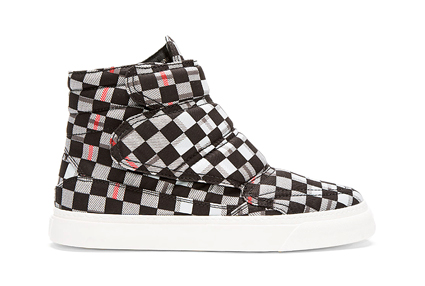
Y-3 KAZUHIRI GREY
Y-3′s Kazuhiri has been a long-standing favorite of the fashion-driven sportswear line. New for this fall, it adopts the range’s chosen color schemes for the season that embody dark neutral tones with bright pops of color. The low-profile midtop also incorporates an off-white midsole for a further integration of color
www.y-3store.com
Posted by Exit 02/09/2013
NIKE "GET DRENCHED" NFL TEAM JERSEYS
Nike pays homage to the most passionate supporters and their team’s colors with the introduction of its new “Get Drenched” limited edition jerseys. Eschewing the prototypical uniforms in favor of a tonal look reminiscent of a stadium filled with the home team’s fans, the monochromatic range includes looks for all 32 NFL teams and comes complete with a streamlined fit, Flywire collar, mesh ventilation, embroidered details, and tackle-twill numbering and lettering.
www.nike.com
Posted by Exit 02/09/2013
KENZO X VANS FALL/WINTER 2013
Kenzol returns to announce the release of its fall/winter capsule collection with the Californian skate brand. Within the above range, the previously featured “Flying Tiger” print is seen on a pair of Vans Chukkas, while KENZO’s white and blue “Day Clouds” graphic is applied to a pair of Chukkas and Slip-Ons as well. Furthermore, the two clothiers collaborated on two pairs of “Lightning Bolt” adorned Authentics; one in blue and the other in pink.
www.kenzo.com
vans.com
Posted by Exit 26/08/2013
FRAGMENT DESIGN X NIKE SB
The Japanese creatives remixed the Eric Koston and the Zoom Stefan Janoski, two of the most popular sneakers in the Nike SB range. Both sneakers are frequently seen on and off the skateboard, making them the perfect hybrid performance and lifestyle sneakers. As with most fragment design collaborations, the changes to the original are subtle, sometimes even impossible to point out, yet the outcome is always unique, timeless and premium. The fragment design x Nike SB Zoom Stefan Janoski comes in navy, black and light grey. The Nike SB Eric Koston comes in red and in black.
fragment.jp
www.nike.com
Posted by Exit 26/08/2013
MASTERMIND JAPAN X CARHARTT WIP
The capsule collection consists of shirts, pants, as well as jackets. Sticking to the black and gold color scheme that the collaboration has always been about, the mastermind JAPAN logo is of course as usual being used heavily.
www.mastermindjapan.com
www.carhartt.com
Posted by Exit 26/08/2013
PUMA RS100 ANIMAL
The PUMA RS100 runner may have been laying low for a while, but now it’s back in a colorway that’s impossible to ignore. The “Animal” features suede, mesh, leather, and faux fur in an amalgamation of bold colors and black-and-white zebra-print panels.
www.puma.com
Posted by Exit 19/08/2013
HURLEY X HAZE
Continuing Craig Stecyk’s Printing Press project with Hurley comes the Hurley x Haze capsule collection, a limited run of t-shirts and hats designed by NYC legend Eric Haze and printed on the Hurley Printing Press.
www.hurley.com
Posted by Exit 19/08/2013
NIKE LUNAR LDV SNEAKER BOOT
Lunar LDV Sneaker Boot dros in three colorways. The mid top sneaker comes with an cut-out design on the upper, featuring suede overlays for comfort, durability and reduced bulk. The contrasting Lunarlon mid-sole is both a great design accent and of course a solid performance and comfort feature.
www.nike.com
Posted by Exit 19/08/2013
ADIDAS ORIGINALS X RUM DMC
adidas Originals is to release an exclusive and limited edition Run DMC Superstar 80s and a premium Run DMC apparel pack to celebrate the launch of the adidas Originals FW13 Campaign - bringing together masters of collision Run DMC with superstar DJ A-Trak.
1000 pairs of the limited edition sneakers available only worldwide. It’s been 26 years since RUN DMC released their single ‘My adidas’… and the love affair is still going strong!
www.adidas.co.uk
www.rundmc.com
Posted by Exit 12/08/2013
BEEN TRILL X SSUR
In addition to the Been Trill x SSUR Starter caps, the two American brands also worked together on a set of tees that are now available through the SSUR online store. Simple, bold graphics make up the set, with a throwback “Calvin peeing on things” reference leading the release.
www.beentrillbeentrill.com
ssurempirestate.com
Posted by Exit 12/08/2013
PARRA X VIKTOR & ROLF
Besides running his own label Rockwell, Dutch artist Parra is known for his frequent collaborations with acclaimed designers and brands. For his latest project he teamed up with fellow countrymen Viktor & Rolf to produce a small capsule collection, comprised of three T-shirts adorned by his distinct artwork.
www.viktor-rolf.com
Posted by Exit 12/08/2013
SWATCH URBAN EXPRESSION
Swatch revels in street culture, bright lights and the rhythms and noise from cities across the world in its latest Autumn / Winter collection. Inspiration behind the new range comes from colourful murals and expressive artwork often found on streets; flamboyant prints and quirky slogans can also be found in the designs from Urban Expression.
Highlight include GENERATION 27 which nods to the popular notion of the 27-hour day, variously said to be the number of hours it takes a man to do what a women accomplishes in 24, or the extra-long day a woman creates by doing several things at once. Urban legend also has it that 27 is in fact a reference to the exclusive - 27 Club, whose membership is apparently limited to musicians who have died at the age of 27, among them Brian Jones, Jimi Hendrix, Janis Joplin, Kurt Cobain, Amy Winehouse.
www.swatch.com
Posted by Exit 05/08/2013
LEVI'S SKATEBOARDING X THRASHER
Levi’s Skateboarding and Thrasher have teamed up on a special capsule collection paying homage to five legendary skate spots in San Francisco. Dubbed the “Streets of San Francisco,” the collection features five T-shirts representing China Banks, Baker Beach, 3 Up 3 Down, The Library, and Driveways. Each shirt features a black and white print of one of the aforementioned skate spots.
levi.com
www.thrashermagazine.com
Posted by Exit 05/08/2013
NEW BALANCE WP996 UH
New Balance presents the women’s WP996 UH in a “Ruby Wine” colorway. First entering the footwear market in 1988, the WP996 is a decisive profile of the 990 series. Featuring a padded ankle support and a red suede upper, the mid-top sneaker sees bold branding at its vamp alongside a debossed logo at its heel.
www.newbalance.co.uk
Posted by Exit 05/08/2013
OBEY x COPE2 COLLABORATION
I first got in touch with COPE2 because he had painted on a skateboard that ended up in a show in our gallery. I said, "Wow, COPE2….that guy's work is everywhere but I've never met him, I don't even know anyone who knows him. Do you have his email?" The guy that organized the skateboard show had the contact info, so I emailed him. COPE was super cool and said he knew my work well.
He said he would love to link up sometime when I was in New York, so yeah it somehow happened.. by modern technology. We ended up becoming friends and collaborating on a couple of walls. He took me up to the Bronx and we worked on a wall there on a production he's maintained for many years. He also took me out to do some bombing and hit some freeway spots. I simultaneously was doing a wall down in Manhattan that I had permission for, a really high-profile wall and told COPE2 he should get up on either end of this wall too. We showed a little uptown/downtown love, and mutual appreciation. We liked the way the production in the Bronx came out so much that we decided on a poster collaboration.
Martha Cooper, who is one of the all-time great graffiti photographers, shot the photo. So between me, COPE2, and Martha, it was a pretty epic collaboration. We talked about doing something with the Obey clothing line with COPE2. His work is great and he can pretty much do tags on top of anything, so we decided to let him do his thing on top of the OBEY icon, to also create a shirt of our Bronx collaboration. We have some great stuff coming out, and I'm always about putting the spotlight on people that I think have really put a lot of work in the culture and have earned the respect that they deserve. COPE2 is one of those people.
-Shepard Fairey
www.obeyclothing.com
Posted by Exit 29/07/2013
TWD X ALEXANDER RICHTER X MASS APPEAL
If you’ve been in NYC over the last couple years you’ve seen the works of Brazilian artists Pixote and Sabio. The two have been getting up huge all city with their pixação style and now, following their recent story in Mass Appeal magazine, have triple collabed with the mag and photographer Alexander Richter on a limited edition t-shirt.
massappeal.com
Posted by Exit 29/07/2013
CLARKS X HORWEEN
Storied Chicago-based tannery Horween reached out to British footwear mainstay Clarks to rework their most popular silhouettes. The collection consists of the Wallabee and Desert Boot boasting Horween’s premium quality leathers.
www.clarks.co.uk
Posted by Exit 29/07/2013
ADIDAS ORIGINALS ROUNDHOUSE INSTINCT
Adidas Originals has fused the past and the present to create the Roundhouse Instinct – an evolved concept for back to school 2013. Launching on August 1st, the Roundhouse Instinct combines contemporary Roundhouse DNA and straps inspired by the 1995 iconic EQT Instinct. Equipped with new reversible and removable straps, the Roundhouse Instinct allows you to dress up the shoe in various colours.
www.adidas.co.uk
Posted by Exit 22/07/2013
A.P.C VARSITY SWEATER
The undisputed masters of French understatement, A.P.C. have definitely a knack for updating classic wardrobe staples, adding that certain je ne sais quoi. The “Varsity” sweater pictured opposite from the new Fall 2013 collection might be the best example.
www.apc.fr
Posted by Exit 22/07/2013
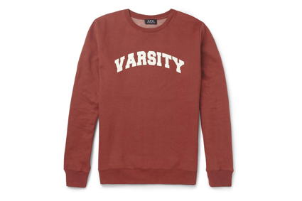
STUSSY X FLATBUSH ZOMBIES
Stussy and Flatbush Zombies have partnered up to release this small capsule collection for the remaining days of summer. The selection consists of a Stussy/Zombies graphic T-shirt, bucket cap, ash try and graphic button set.
www.stussy.com
Posted by Exit 22/07/2013
FUCKING AWESOME X VANS AUTHENTIC
Jason Dill’s Fucking Awesome brand has been the subject of much speculation over the past couple of weeks, triggered by the legendary skateboarder’s sudden departure from longtime board sponsor Alien Workshop. New relationships are nothing new for Jason Dill though, who only late last year was officially announced to Vans’ roster of skateboarders.
Here we find Fucking Awesome teaming up with Vans for a collection of collaborative footwear, taking the shoemaker’s coveted Authentic silhouette and outfitting it with an all-over signature print. This collaboration finds the Authentic offered in three colorways – black, red and neon green – each paired with matching laces and a clean, white vulcanized outsole.
fuckingawesomestore.com
Posted by Exit 15/07/2013
SAINT LAURENT VARSITY JACKET
This black and white wool-blend varsity jacket is designed by Hedi Slimane for Saint Laurent and made in Italy. The jacket’s details include white leather trims over the shoulders and two leather-trimmed front pockets. For closure, the jacket sports the timeless press-stud fastening in the front.
www.ysl.com
Posted by Exit 15/07/2013
Y-3 QASA HIGH
From Y-3 comes a new innovative collection featuring the very special Qasa high. The upper of the unique shoe is constructed to be a form fitting sock with neoprene straps for a lock-down fit, all while sitting atop a roll-ball outsole. Additionally, the sneaker features a supporting branded heel cap with neon and black accents. Neon pink laces, neon blue snakeskin on the heel and neon hits on the sole finish off this technologically advanced casual silhouette.
www.y-3store.com
Posted by Exit 15/07/2013
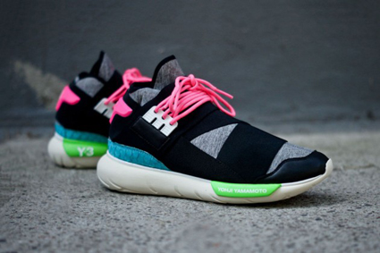
NUDIE FOOTWEAR
Working with fellow Swedes KAVAT, the Scandinavian partnership starts off simple with two models. Firstly, the Majorna, a chunky take on the desert boots, Nudie apply their green credentials to this shoe with its ecologic leather free from chrome and other nasty substances. Second up, the Hisingen, a sturdy Chelsea boot, reinforced at the front and back with plenty of grip.
The leather itself comes with a bit of a back story. Rather than wandering off to Italy or Spain for their hide, Nudie develop a traditional Swedish Smorläder, leather tanned with plenty of fat to withstand moisture and develop an unique patina, a traditional method from a country with a strong history of producing top quality leathers.
www.nudiejeans.com
Posted by Exit 08/07/2013
NEW BALANCE BASEBALL PACK
To celebrate the accomplishments of New Balance’s baseball athletes, New Balance have produced a pack featuring a custom Made in USA US574 lifestyle sneaker, inspired by New York team colors, and a custom Minimus 20v3 training shoe.
www.newbalance.com
Posted by Exit 08/07/2013
VANS X HARO COLLECTION
Vans team up with BMX brand Haro to commemorate a history of classic BMX design and originality. The fated partnership between the two brands brings forth a memorable collection of Vans x Haro footwear, apparel and accessories. The original Vans Era and Sk8-Hi Reissue boasts Vans’ classic checkerboard print, along with Haro’s signature green and blue colors. The collection also includes a retro long sleeve t-shirt and racing pant emblazoned with blue, green, and white racing stripes. Two custom Vans x Haro logo tees and a poison green snapback finish off the collection.
www.vans.co.uk
www.harobikes.com
Posted by Exit 08/07/2013
LEVI'S SKATEBOARDING FALL 2013
The Levi’s Skateboarding collection is a reimagined assortment of timeless basics that were designed and constructed to match the demands of today’s skateboarding needs. Construction detailing includes adding Cordura to the denim that has exceptional abrasion resistance and Lycra T400 for added stretch and increased abrasion resistance.
www.levi.com
Posted by Exit 01/07/2013
ADIDAS SKATEBOARDING FALL 2013 GONZ PRO
Adidas Skateboarding presents Mark Gonzales’ first professional model with the brand in the Gonz Pro. The release is composed of two colorways: brown/baby blue and all-over white/red/blue. The silhouette features a one-piece seamless upper that’s paired with a white vulcanized outsole. The bottom sole is gum and sees further detailing with signature Gonz design.
www.adidas.co.uk
Posted by Exit 01/07/2013
PLAYBOY X BAPE
The collection features t-shirts, sweaters, caps, a polo shirt, button-down shirt, as well as a bow-tie and trunks. The Bape logo and the Playboy bunny were graphically remixed as part of the collection and are featured in one way or another on all pieces of the line.
eu.bape.com
www.playboy.com
Posted by Exit 01/07/2013
ADIDAS SKATEBOARDING BUSENITZ ADV RUN
Adidas Skateboarding Busenitz ADV presents the latest colorway for the Busenitz ADV, skater Dennis Busenitz’s signature skate shoe. This latest edition appears with a simple white upper with adidas trademark stripes appearing in black down the sides. Attention is drawn toward the collar of the shoe which is given a bold accent of red and black. Finishing off the pair is a rich brown gum sole with smooth foxing.
www.adidas.com
Posted by Exit 24/06/2013
TOM FORD SPRING/SUMMER 2014
Tom Ford recently presented a private viewing of his Spring/Summer 2014 menswear collection in London. The two-button sports jacket shown above is the O’Connor, which Ford designed for Daniel Craig to wear in the latest James Bond film. White muscle T-shirts made from Japanese cotton were worn under the bright dinner jackets, and neckties, too, came in white or solid colors.
www.tomford.com
Posted by Exit 24/06/2013
BENNY GOLD SELVAGE DENIM
This is the first time in over three years that Benny Gold has offered a selvage option to the brand’s popular gold standard denim. The selvage denim is limited to 50 pairs and is available exclusively at Benny Gold’s San Francisco location. The jean is made from 13.5 oz American Made denim and features a thick blue leather patch and selvage line.
bennygold.com
Posted by Exit 24/06/2013
LOUIS VUITTON X CHAPMAN BROTHERS F/W 2013
Louis Vuitton men’s collection have collaborated with sibling artist duo Jake and Dinos Chapman, also referred to as the Chapman Brothers.
Known for their highly provocative art, the two brothers worked with Kim Jones and Louis Vuitton on a capsule collection for Fall/Winter 2013. We present a series of bags and scarves from the collection, all adorned with heavy all-over embroidery designs of the Chapman Brothers.
www.louisvuitton.co.uk
Posted by Exit 17/06/2013
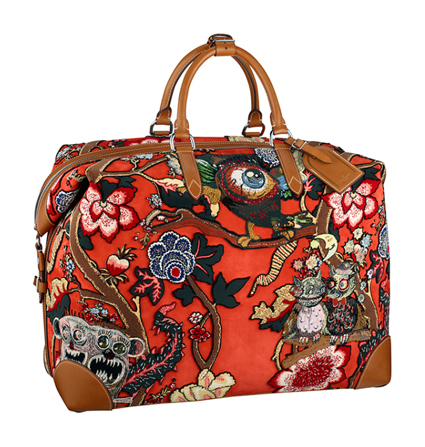
FRED PERRY X TEN_DO_TEN PAC-MAN POLOS
This summer Fred Perry teamed up with Japanese artist Ten_do_Ten to reinterpret the video game classic PAC-MAN. Ten Kinnei, aka Ten_do_Ten, has become known for his high expressive designs only using dots and pixels. The style has become his signature and therefore it only made sense to work with him on this project.
www.fredperry.jp
Posted by Exit 17/06/2013
ADIDAS ORIGINALS F/W 2013 LEOPARD PACK
The pack consists of the Tech Super, Match Play and AO Hookshot silhouettes. Leopard elements have been used on each one of them. While the Match Play comes with a full pony hair leopard upper, the other two sneakers use the pattern in more subtle ways
www.adidas.co.uk
Posted by Exit 17/06/2013
NIKE ENGLAND NSW COLLECTION
To celebrate the launch of the new England National Football team kit, Nike Sportswear (NSW) has created a premium lifestyle collection featuring customised versions of two iconic sportswear styles, the NSW Destroyer Jacket and the Nike Air Max 1.
The England NSW Destroyer Jacket, accompanied by a premium carry case, sees the
classic 1950s varsity style modified in homage to the home of the beautiful game.
The special edition jacket transforms a modern Nike icon with rich English heritage design cues
including sleeves and pocket trims crafted from the finest rainproof British Millerain waxed
cotton. In addition, the zip lining of the England NSW Destroyer features embroidery reading
ʻ1863ʼ and ʻ2013ʼ, in acknowledgement of the historic 150th anniversary of the English
Football Association.
The understated black-on-black version of the Air Max 1, complete with a special edition
box and certificate, features discreet details that reference the history and culture of football
in England. Linking to the NSW Destroyer Jacket, a gold star has been embroidered onto
the back of the shoe while the eyelet features in bold red, in honour of the St. Georgeʼs
Cross.
www.nike.com
Posted by Exit 10/06/2013
MARGARET HOWELL - FOLDABLE RUCKSACK RIP STOP NYLON
For Spring Summer 13 Margaret Howell continues collaborating with Yoshida producing a folding rucksack that can be packed into a zipped pocket within the rucksack.
The rucksack is made from lightweight nylon rip stop that is very hard wearing and ideal for traveling.
The rucksack is made in Japan and the design is only available at Margaret Howell.
Available in black and khaki.
www.margarethowell.co.uk
Posted by Exit 10/06/2013
ODD FUTURE X VANS SYNDICATE
Vans Syndicate has officially unveiled the Odd Future capsule collection, featuring Black, Blue, Camel and Red versions of the Old Skool Pro “S”. The model, a favorite of the Odd Future crew, was chosen by Tyler the Creator, and each shoe features a gum sole as well as artwork and graphics set against a premium suede upper.
www.vans.co.uk
Posted by Exit 10/06/2013
NIKE BLAZER MID - NECKFACE
Street artist Neck Face was able to place his celebrated work all over the shoe, with the names of various SB riders showing up across the upper. Black font graces the yellow base of the limited sneaker, yellow laces help keep the look clean, while white branding and soles provide a subtle finish.
www.nike.com
Posted by Exit 03/06/2013
STAPLE X MIKE TYSON
Staple team up with boxer Mike Tyson on a capsule collection consisting of four limited edition graphic T-shirts. Like Staple’s past creations, the collaboration makes use of the brand’s affinity for pigeons while Tyson’s likeness makes its way onto each tee in a variety of ways.
stapledesign.com
Posted by Exit 03/06/2013
AKOMPLICE X RAEKWON THE CHEF
The Akomplice x Raekwon Pelican Belt is made of premium leather and comes in both black and brown. The Akomplice logo is embossed, and Raekwon’s name is laser etched onto the leather, giving two different looks to one belt. This belt is a true collector’s item, as it will only see a 25 piece production run. The collab comes complete in a wooden cigar box, which is homage to Rae’s Only Built 4 Cuban Linx series.
www.akomplice-clothing.com
Posted by Exit 03/06/2013
ASOS BLACK X PUMA - FALL/WINTER 2013
ASOS Black and PUMA release their lookbook for the second installment of their ongoing collaboration for Fall Winter 2013. Expect a selection of looks that feed sporting heritage and trendy aesthetics of both brands. Printed fabrics and effects such as polka dotting, ombre and color taping.
www.puma.com
Posted by Exit 27/05/2013
REEBOK INSTA PUMP FURY - KOI FISH
Reebok presents an retake take on their classic Insta Pump Fury sneaker with the “Koi Fish.” Featuring a scale print on the toecap and a vibrant cherry blossom print on the inside, the sneaker is a direct reference to Japanese heritage.
www.reebok.co.uk
Posted by Exit 27/05/2013
STUSSY GUEST ARTIST SERIES - CRAIG FINEMAN
Craig Fineman started documenting the thriving late ’70s skate and surf scene, fusing action sports with fine art photography. Showcasing a strong sense for proportion and unique angles, his photos did not only capture the essence of surfing and skateboarding but also emitted a strong architectural aesthetic, resulting in a groundbreaking body of work that was truly ahead of its time.
Following the release of Fineman’s monograph “POOLS” made in collaboration by Stussy and Dashwood Books, the streetwear brand has now dropped a mini collection of four T-shirts emblazoned with Fineman’s amazing photography.
www.stussy.com
Posted by Exit 27/05/2013
MARGARET HOWELL BACKPACKS & WEEKENDER BAGS
Margaret Howell releases a backpack and a weekender combo for Spring Summer 2013. Made in Carlisle, Cumbria, look to these bags for traditional hand crafted techniques that create a bag constructed for wear and tear. Bonded cotton twill and heavy cotton parachute webbing keep it all together. Both styles are available online in khaki or navy.
www.margarethowell.co.uk
Posted by Exit 20/05/2013
VAULT BY VANS ORIGINAL CLASSICS - OG ERA LX
The OG Era LX follows the same design specs as its first run in 1976 for three styles featuring the archived “Palm Leaf” print. Vibrant color combinations in Navy/Green, Peach/Antique White and Pool Blue/Black reflect the edgy skate vibe of the ‘80s.
www.vans.com
Posted by Exit 20/05/2013
UNDERCOVER K4205-2 COAT
Crafted from a lightweight and breathable cotton fabric, the military inspired coat boasts a number of pockets throughout, including six snap button pockets in the front and two waist pockets, and an additional sleeve pocket. Further features include a snap button collar, drawstring adjustable hood, and the infamous “middle finger” embroidered on the chest. From UNDERCOVER's current Spring/Summer 2013 collection.
www.undercoverism.com
Posted by Exit 20/05/2013
SAINT LAURENT AVENUE MONTAIGNE STORE
Under the creative direction of Hedi Slimane, the 900 m2 store is a physical embodiment of the brand’s realigned visual identity. An emphasis on rich, noble materials, generous proportions and architectural clarity as well as a preference for simplicity
over elaborate decoration bestows an air of serene, contemporary luxury and evokes the works and philosophies of the Union des Artistes Modernes (UAM).
Situated over two floors, the new store architecture and design is a modernist transposition of French Art Deco techniques and materials. The predominantly monochrome space exploits generous slabs of the finest ‘noir soie’ and
‘blanc statuaire’ marble set in opposition to board formed concrete walls. Silver and gold is found in 1930’s mirrored vitrines, with nickel-plated and mirror polished brass, atop a minimal concrete flooring. Stark contrasts in mood and atmosphere are created through the employment of dark sensual quilted leather upholstery
paired with extra-clear glass and mirrors while suspended hangbars in nickel-plated brass and minimalist marble display
podiums form elegant counterpoints to the flat surfaces.
Decoration is derived from the materials themselves. The natural veining in the marble and the concrete walls allow the architecture to retain a purity of form and a geometric rigor.
www.ysl.co.uk
Posted by Exit 13/05/2013
SUPREME SUNGLASS FRAMES
This Spring, Supreme will release two new styles of sunglasses; Wallace & Factory. The frames are handmade in Italy, featuring Barberini glass lenses with anti-reflective coating,offering exceptional optical clarity and glare protection. The Wallace will be available in three different colorways and The Factory will be available in four different colorways.
www.supremenewyork.com
Posted by Exit 13/05/2013
XLARGE X SUICIDAL TENDENCIES
Venice Beach Hardcore Trash legends Suicidal Tendencies have now teamed up with streetwear masterminds XLARGE to release a nice little capsule collection for Spring/Summer 2013. Heavily influenced by the band’s distinct style, each piece’s design is based on their trademark bandana pattern printed on T-shirts, short-sleeved shirts, hats, shorts and bandanas.
xlarge.com
Posted by Exit 06/05/2013
FRED PERRY X CHRISTOPHER RAEBURN
For Spring/Summer 2013 Fred Perry has announced a new Blank Canvas Capsule Collection with British designer Christopher Raeburn. Known for his heavy military inspiration in all of his designs, it comes without any surprise that the Fred Perry x Christopher Raeburn Blank Canvas line uses various camouflage patterns.
The American Issue Desert camouflage was specifically designed as an interference pattern for use during the early 90s, one that would interrupt the pixelated images of first generation night vision services. . The Schneetarn East German camouflage also known as ‘snowy pines’ is an unusual two-colour winter camouflage developed by a mountain warfare school first trialled in the 60s. Finally, the German Raindrop camouflage is a strong graphic reference from the 60s and 70s, less effective as an actual camouflage because at close range the colours would blend together.
All shirts feature tipping on the collar, in military green and orange plus an original surplus fabric woven patch pocket with a Fred Perry and Christopher Raeburn embroidery.
www.fredperry.com
www.christopherraeburn.co.uk
Posted by Exit 06/05/2013
ADIDAS ORIGINALS PRO CONFERENCE HI OG
Planning a comeback is the Pro Conference Hi. The shoe will be repeated for the first time in 30 years, treated to the same design, colors and materials of the original model, albeit with a slightly vintage treatment regarding the sole the details. Release is scheduled for July.
www.adidas.co.uk
Posted by Exit 06/05/2013
KIDULT - SUEPREME T-SHIRT
Supreme is suing Married to the MOB for $10 Million USD in damages over the use of the “Supreme Bitch” slogan on its products. Even artist Barbara Kruger, who apparently inspired Supreme in the first place for its logo, has made a bold statement about the matter.
Now Kidult, best known for tagging stores of hyped fashion brands, including Supreme, presents a twist of the iconic Supreme box logo t-shirt – the “Suepreme” tee.
kidultone.com
Posted by Exit 29/04/2013
STUSSY X SCHOTT S/S 2013
Stussy Japan teamed up with Schott to work on a nice little capsule collection for this Spring/Summer season. The drop encompasses besides a range of sunglasses, three t-shirts commemorating Schott’s 100th anniversary as well as Joey Ramone, legendary leadsinger of The Ramones, who was probably best known for sporting the brand’s iconic Perfecto leather jacket on and off stage.
www.stussy.com
www.schottnyc.com
Posted by Exit 29/04/2013
PUMA DISC BLAZE - FIRE RED
Puma has released their Disc Blaze in a new colorway, fire red. With a full red suede and nylon upper, the sneaker features red tonal detailing and sits atop a fresh white sole.
www.puma.com
Posted by Exit 29/04/2013
THE NORTH FACE X NANAMICA
The North Face and Nanamica team up to release a range of Mountain Wind Parkas in a larger variety of pop colors. The jackets feature contrasting zippers, stitching and other details. The material used is PERTEX nylon, a versatile, wind-resistant, durable wicking fabric with more breathing ability than waterproof membranes.
www.nanamica.com
Posted by Exit 22/04/2013
SHUT T-SHIRTS SPRING 2013
SHUT just dropped a stack of new t-shirts for Spring 2013. Designed by Eli Morgan Gesner, the collection reflects both the year of the snake and SHUT’s continual commitment to the real New York, something increasingly important in the city’s rapidly gentrifying landscape.
www.shutnyc.com
Posted by Exit 22/04/2013
MISFITS X SUPREME COLLECTION
Working with original iconic artwork of the band, Supreme presents a collection consisting of T-shirts, crewneck sweaters, a lighter, a cap, trench coat, and some smaller accessories.
The collection launches at Supreme stores in New York, LA and London, as well as online on April 18, 2013. The Japanese Supreme stores will get it on April 20, 2013.
www.supremenewyork.com
Posted by Exit 15/04/2013
PUMA X STAPLE SUEDE - PIGEON
The PUMA ”Pigeon” Suede by Staple is handmade in Japan and highly limited in numbers, about 500 worldwide. “The PUMA Suede, in my opinion, is one of the most important silhouettes in sneaker history,” explains Jeff Staple. “It’s also very important to me that this first collaboration with PUMA is individually hand-crafted in Japan—my adopted second home.”
www.puma.com
stapledesign.com
Posted by Exit 15/04/2013
THOM BROWNE X BROOKS BROTHERS
The first delivery of ‘Black Fleece,’ the new collection designed by Thom Browne for Brooks Brothers just dropped with a nylon windbreaker. The jacket features the graphic octagon print used throughout the collection, four front pockets, and a hood highlighted with white stitching.
www.thombrowne.com
Posted by Exit 15/04/2013
BAPE X UNDEFEATED X ADIDAS ORIGINALS
The union brings a strong army influence done tastefully using BAPE’s signature camouflage print, blocks of khaki, taupe and off white, the occasional splash of bright colour, and special gold leaf detailing on suede – a rare execution. Two favourite adidas styles have been given the midas touch: the Campus and ZX 5000 and as always for Consortium, premium materials are used throughout, such as super soft leather and suede.
The khaki Campus will only be available at No. 6 London, No. 74 Berlin, No.42 Paris, BAPE and UNDFTD, while the black Campus and ZX 5000 will be at these stores and select Consortium partner boutiques. No.74 in Berlin will have an early release of the full pack on April 13, 2013.
www.adidas.co.uk
www.no6-london.com
www.no74-berlin.com
Posted by Exit 08/04/2013
CARHARTT WIP X VANS SYNDICATE ERA
The Era Tab “S” utilises reflective materials to compliment the simple Syndicate design with the addition of subtle zigzag reinforcement, signature waffle soles, canvas heel piece and an embossed Carhartt logo leather tab on the vamp.
The limited edition sneakers will be available in basic black, vibrant blue, orange and yellow from in Carhartt WIP stores around the world and in limited numbers online.
www.carhartt.com
www.vans.com
Posted by Exit 08/04/2013
OPENING CEREMONY X SPRING BREAKERS
Annabel Mehran, the official photographer on the set of Spring Breakers, now worked with Opening Ceremony on a special lookbook for their Spring Breakers Capsule Collection. Highlighting the men’s and women’s styles from the collaborative offering, the shoot is perfectly aligned with the actors and theme of the film.
www.openingceremony.us
Posted by Exit 08/04/2013
DQM X GIRL SKATEBOARDS
New York’s DQM teamed up with classic skate company Girl Skateboards on an upcoming capsule collection consisting of a water-resistant nylon windbreaker, a check button-down shirt in two colors, three graphic pocket t-shirts, and a pair of cotton twill chinos.
www.dqmnewyork.com
Posted by Exit 01/04/2013
THE NORTH FACE X SUPREME
This Spring, Supreme has joined with The North Face to introduce the Mountain Parka, the Medium Day Pack Backpack and Roo II.
Custom fit for Supreme, the Mountain Parka features a 3M® reflective shell with abrasion resistant ripstop panels at shoulders, elbows and cuffs. The Medium Day Pack Backpack and Roo II also feature a 3M® reflective shell.
All items will be available in two colorways, exclusively made for Supreme.
Available in-store in NY, LA, London and online on April 4th.
www.supremenewyork.com
Posted by Exit 01/04/2013
NECKFACE X NIKE SB COLLECTION
Recently tapped for a cameo in Eric Koston’s “The Legend Grows” commercial, Californian artist Neckface aligns his playfully sinister illustrations with Nike’s innovation in athletic apparel to release a small capsule collection comprised of T-shirts and a backpack. The range begins with the reworking of Nike’s Action Sports logo employing a unique kaleidoscope-like pattern that adorns your choice of a black or grey Dri-FIT T-shirt. Furthermore, the colorful print is applied to Nike’s two-strap Peidmont Backpack built from 100% recycled 600D polyester.
www.nike.com
Posted by Exit 01/04/2013
NEW BALANCE ML574 FLORAL HEMP PACK
The 574 running shoe got the floral hemp treatment this time. Coming in yellow, green and black colorways, hemp has been applied to the tongue and heel, with floral patterns being featured on the lining, matching the “N” logo on the side-panels.
www.newbalance.co.uk
Posted by Exit 25/03/2013
WTAPS ECWCS JACKET
WTAPS has released its ECWCS Jacket as part of its Spring/Summer 2013 lineup. Based on the US Army Extended Cold Weather Clothing System parka design, it boasts a breathable and water-resistant TETRATEX® upper and smooth tafetta lining, and comes in a woodland camouflage, olive drab and navy colorway.
www.wtaps.com
Posted by Exit 25/03/2013
MAIDEN NOIR SPRING 2013
First products from the new Maiden Noir Spring 2013 Collection have released. The Seattle brand presents a range of solid shirts, light weight jackets and t-shirts.
Maiden Noir was founded by Nin Truong and Toshiyuki Suto, and is storied around the mythical tales of the ‘Son of the Seventh’. With an ongoing theme revolving around the tales of the "Son of the Seventh", each season represents a new chapter in the story of Maiden Noir. Designed in N. America and Japan, the label pays tribute to a heritage of vintage silhouettes with a more refined and clean classic look.
www.maidennoir.com
Posted by Exit 25/03/2013
G.G. ALLIN FOR ALTAMONT
Born Jesus Christ Allin, G.G. Allin has been cited as “the most spectacular degenerate in rock & roll history.”
Famously depicted in Todd Phillips’ documentary “Hated,” G.G. Allin’s controversial transgressions as a musician and live performer are notorious. No artist before, or after, has come close to comparing.
In commemoration of the 20th anniversary of G.G. Allin’s death in 1993, Merle Allin - brother and founding member of “The Murder Junkies,” allowed Altamont access to drawings G.G. made during his time in prison, as well as never-before-seen photographs. Merle chose his favorite images for a series of Altamont tees celebrating G.G. Allin’s extraordinary life.
G.G. Allin is Cut From a Different Cloth.
altamontapparel.com
Posted by Exit 18/03/2013
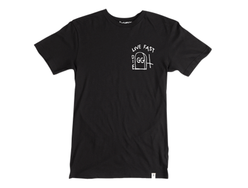
FRED PERRY LAUREL WREATH COLLECTION S/S 2013
For their latest Spring/Summer collection, Fred Perry once again digged deep into the vaults of British subculture, taking inspiration from the early 80s graphic movement, when art directors such as Peter Saville and Neville Brody were making a profound impact on the decade, eventually shaping its distinct look and feel.
The underlying theme manifests itself in the prevalent use of patterns, that playfully mirror the vibrance of the this amazing era. Stripes, dots and industrial knit prints add a textural depths to knits.
www.fredperry.com
Posted by Exit 18/03/2013
SUPREME X CHAMPION SATIN JACKET
The New York brand teamed up once again with American sportswear brand Champion. They chose a classic satin bomber silhouette and present it in 4 colorways, with the Champion logo being featured on the chest and Supreme being written in large letters across the back.
www.supremenewyork.com
www.championusa.com
Posted by Exit 18/03/2013
SUPRA X HARMONY KORINE X SPRING BREAKERS DONAVYN
Supra has teamed up with director Harmony Korine on the Spring Breakers Donavyn low top sneaker. Celebrating the releas of his upcoming Spring Breakers film starring Selena Gomez, Vanessa Hudgens, Ashley Benson, Rachel Korine, and James Franco.
The Spring Breakers Donavyn is a low top, redolent of a dress shoe, with a color story that, at first glance, is as bizarre as some of Harmony’s scripts. But the hot pink and turquoise color story was chosen as a nod to another ubiquitous Florida institution, the hit 80's TV show Miami Vice. The upper is constructed from a unique, hot pink leather that looks shiny and wet like patent leather, but is actually a premium full-grain leather that technology has only recently been able to furnish with these kinds of extreme hues and textures - this is one of the first shoes in the world to feature this new material. It also has three pairs of laces (black, hot pink, and turquoise), a padded black mesh lining, and it’s constructed on a bright turquoise vulcanized sole with a double layer of turquoise foxing. Only 100 pairs of the Spring Breakers Donavyn were created.
www.suprafootwear.com
Posted by Exit 11/03/2013
STUSSY X KEIICHI TANAAMI T-SHIRTS
For S/S 2013 Stussy have joined with Keiichi Tanaami on a series of t-shirts featuring the Japanese artist’s signature psychedelic, bombastic visual style. Each tee features a unique, large front print and is constructed from 100% cotton.
www.stussy.com
Posted by Exit 11/03/2013
BAPE X KANGOL BERMUDA HATS
A Bathing Ape has teamed up with Kangol as part of its Spring/Summer 2013 Collection. They released the iconic Kangol Bermuda hat in two colorways. The hat comes with the Bape logo embroidered at the top and is available now in red and black.
kangol.com
Posted by Exit 11/03/2013
SUPREME X VANS ROSE PRINT
A new collaboration with Vans for Spring 2013, using the print across three sneakers -the Sk8 Hi, the Era and the Half Cab. The artwork comes from an album by New Order from 1983, designed by Peter Saville.
Utilizing original album artwork from New Order’s iconic 1983 release Power, Corruption & Lies. The album’s cover was designed by English art director Peter Saville and incorporates the 19th century painting “A Basket of Roses” by French artist Henri Fantin-Latour.
www.supremenewyork.com
www.vans.co.uk
Posted by Exit 04/03/2013
SOPHNET X REYN SPOONER COLLECTION
Japanese brand SOPHNET teamed up with Reyn Spooner on the “Aloha Creation” Capsule Collection for Spring/Summer 2013. The Hawaiian brand is known for its distinct island looks and fabrics. As part of the capsule the two present a mixed pattern shirt with elbow patches, as well as 4 styles of shorts.
www.soph.net
www.reynspooner.com
Posted by Exit 04/03/2013
NIXON SPRING/SUMMER 2013 CAMO COLLECTION
Nixon presents its new Camo Collection for Spring/Summer 2013. The classic woodland camouflage pattern is being used on various items in the collection, which includes The Quad watch, beanie, backpack, cap and an iPhone case.
nixon.com
Posted by Exit 04/03/2013
ADIDAS CONCEPT STORE - NO42 PARIS
Located on 42 Rue de Sevigne in the Marais district, No42 Paris is a pioneer within the French capital’s fashion scene, aiming to define progressive sportswear and athletic fashion in Paris.
No42 continues to develop and explore a unique global adidas brand concept, established by long standing counterparts No74 Berlin and No6 London, reinterpreting not only the form and function of retail stores, but also their content and relationship to the community around it.
Housed under a ceiling that echoes the iron framework of a 19th century ‘Passage Parisiens’ and Gustave Eiffel’s tower, visitors will find the best from adidas, and Paris together in a space that dances between the rawness of industrial materials, and the delicate nature of minimal design.
The store will feature an exclusive selection of footwear, apparel and accessories from celebrated adidas brands Y-3, adidas SLVR, adidas Originals and adidas Performance.
Also featured in the stores will be adidas design collaborations with Stella McCartney, Jeremy Scott and Opening Ceremony, as well as the adidas Consortium footwear collections, designed in partnership with leading fashion- and sneaker shops world-wide.
www.adidas.co.uk
Posted by Exit 25/02/2013
PUMA : MADE IN JAPAN - PYTHON COLLECTION
The PUMA Made in Japan “Python” collection is a range of new pieces of footwear with a distinct reptile twist. The First Round, Basket and Slip Stream have been realized in either predominantly white or black silhouettes – each with an homage to the animal kingdom due to both print and fabric choices.
www.puma.com
Posted by Exit 25/02/2013
RAF SIMONS SPRING/SUMMER 2013
Belgian designer Raf Simons dropped a number of casual pieces for Spring/Summer season. Transcending the confines of traditional menswear the collection emits an apparent androgynous vibe, that manifests in a range of colourful staples, including sweaters, t-shirts, a light jacket and a muscle shirt bearing the eye-catching artwork by Brian Calvin.
www.rafsimons.com
Posted by Exit 25/02/2013
JUNYA WATANABE CANVAS BOAT SHOES
Junya Watanabe comes a contemporary take on the classic Americana boat shoe. The shoe comes in a navy canvas with a contrasting white stitching on the upper and a white lace up front. An almond shaped toe and textured sole complete the design nicely and a red gingham lining emphasises its Americana style.
junya-watanabe
Posted by Exit 18/02/2013
PUMA BY MIHARAYASUHIRO
From the new Puma by MIHARAYASUHIRO Spring/Summer 2013 Collection we present the Multicolor Pop Art Camouflage Pack. Consisting of a low top sneaker, a transformable tote bag and a large backpack, all three pieces feature a colorful camouflage pattern all over.
www.puma.com
Posted by Exit 18/02/2013
VANS X MARVEL
The collection will launch with Iron Man and Spider-Man, each individually depicted on Vans Classic silhouettes, with a second delivery in March featuring the most powerful Super Hero team in the world: The Avengers.
Taking on the signature colors of his red and blue suit, the Spider-Man Sk8-Hi Reissue features an embossed spider web on premium red suede while the Iron Man version includes black leather on the vamp and bolted hexagon eyelets.
The Avengers release includes a Sk8-Hi Reissue and Era, and a Slip-On for tykes. The Sk8-Hi Reissue highlights Iron Man, Captain America, the Hulk and Thor on each side panel while the Era and Slip-On feature a collage on the front and back panels.
www.vans.co.uk
marvel.com
Posted by Exit 18/02/2013

ONITSUKA TIGER - GOLDEN SPARK - PLATINUM
Eqipped with their latest technology, such as SoLyte and PHF (personal heel fit), the Golden Spark by Onitsuka Tiger fuses a casual silhouette with performance features. The shoe see, besides a suede upper, the brand’s unique split tongue for tighter lace-tying and snug fit. Available in three colourways.
www.onitsukatiger.com
Posted by Exit 11/02/2013
KENZO X NEW ERA S/S 2013
Kenzo releases the latest offering from its collaborative efforts with New Era in this fitted cap Spring/Summer 2013 collection. The range draws inspiration from various animal prints and traditional African textiles.
www.kenzo.com
Posted by Exit 11/02/2013
LOUIS VUITTON CALIFORNIA SNEAKER
New updated versions of the Louis Vuitton California sneaker for Spring/Summer 2013. The mid top sneaker returns this season in three colorways – a white leather version, a denim version and the most expensive is a python suede version.
www.louisvuitton.com
Posted by Exit 11/02/2013
NEW BALANCE 574 WINDBREAKER PACK
The inspiration for these 574's is drawn from the nylon windbreaker jacket. A “Windbreaker” pack has been hitting retailers in recent days in varying colors, but this yellow colorway is by far the most eye-catching. The nylon upper is equipped with a vivid yellow color contrasted with navy accents to give a great Spring vibe. The 3M back panel tops off a shoe dedicated to the concept of exploration.
www.newbalance.co.uk
Posted by Exit 04/02/2013
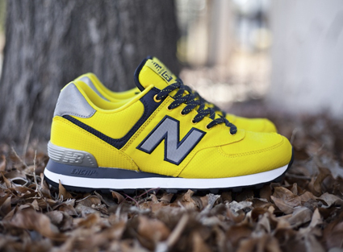
COMME DES GARÇONS X HERMES SCARF COLLECTION
COMME des GARÇONS and Hermès release the first part of their collaborative “Comme des Carrés” project. This ‘Black and White’ scarf collection comes in the form of five scarves, each printed with a mixture of Hermès’ equine iconography and COMME des GARÇONS’ artwork.
www.comme-des-garcons.com
www.hermes.com
Posted by Exit 04/02/2013
ADIDAS ORIGINALS X JEREMY SCOTT VIDEO LOOKBOOK
In a collaboration with director Nabil Elderkin, Jeremy Scott stars in a unique video presenting his Spring/Summer 2013 collection for adidas Originals. Jeremy Scott’s Spring/Summer 2013 collection is as eccentric as ever with influences from mystical feathered creatures to billiard balls. An all-over eagle print carries throughout the collection and is executed on Jeremy’s signature winged high top shoe. Other highlights include the JS chain cage track top with cut-out body and basketball jerseys reinterpreted with uneven hems, fringing and woven fabrics.
www.adidas.co.uk
Posted by Exit 04/02/2013
LACOSTE 80 YEARS ANNIVERSARY POLO SHIRT DIY KIT
Celebrating their 80th anniversary, French brand Lacoste created a total of 12 different DIY customizing kits for their iconic Polo shirt. Based on a design by legendary art director Peter Saville, every month another highly limited kit will be exclusively available from the brands F-store on Facebook.
www.lacoste.com
Posted by Exit 28/01/2013
ADIDAS CONSORTIUM X HANON CNTR
For this release Hanon pay tribute to their hometown of Aberdeen - The Granite City!
Both the colour way and material application are inspired by the surroundings which were historically built from locally quarried granite.
Executed in suede, mesh and nubuck, the grey upper of the Centaur depicts the seasonal change of Aberdeen’s granite landscape. At the rear of the shoe there is a dark grey suede with a heavy nap representing the gloom of winter which is offset by a dual layered silver mesh and light grey nubuck that leans towards the fairer months of the year.
Additional features appear by way of red accents, granite three stripes and multi print sock liner. The detail on the stripes was created by applying a mirror image print of the grain on the stonework at our warehouse to a black 3M reflective material, while the footbed and tongue backer draws inspiration from adidas’ archive boxes and tissue paper.
Further detail on the shoe appears in the form of dual branding via debossed heel tabs and embroidered Consortium tongue pulls. The hanon flame appears on the left shoe whilst the adidas Trefoil is applied on the right. Each hanon Centaur comes with silver foil footbed labels, three sets of laces - one tonal, one contrast and one with a reflective weave.
A limited edition dust bag will be released with a number of pairs of the shoe and 50 pcs of a special edition ‘granite’ tshirt will accompany the shoe for the instore launch only.
www.adidas.co.uk
www.hanon-shop.com
Posted by Exit 28/01/2013
TOM FORD BONDAGE STRAPS THIGH HIGH BOOT
The Tom Ford Bondage Straps thigh high Boot is one of the signature shoes
featured in Tom Ford's SS13 main collection and comes available in a variety of colours and
exotic skins including smooth calfskin, shiny alligator, patent leather, metal python and
mirror lambskin.
Recognisable by its signature zigzagging of straps going up the calf. this boot when
worn should feel like a second skin and directly references the bondage inspiration.
The most recognisable detail is the bold hardware and layers of leather contrasting with
the luxurious skins used to make it.
All the hardware used on the Bondage Straps thigh high Boot is in solid brass coated
with 0.5 micron gold plating. And each strap along the calf is reinforced with small
elastics at each extremity in order to ease the fit.
www.tomford.com
Posted by Exit 28/01/2013
REEBOK X KEITH HARING FOUNDATION
Reebok will be introducing an unique collaboration with the Keith Haring Foundation that will bring the late artist’s bold graffiti-influenced artwork to signature Reebok Classic footwear.
The new collaboration is the latest in the brand’s popular Affili’Art program, which has produced collections with the likes of Jean-Michel Basquiat and Ryan McGinness and sees Reebok Classic working with Haring’s well-known icons, the antic Everyman, Barking Dog and Radiant Baby and for the first time, a range of interpretations of unique paintings and drawings, to present a collection that fuses fashion and art and embodies the individuality of this remarkable artist.
The distinctive collection features much-loved Reebok Classic silhouettes, the Classic Leather, Classic Leather Mid, NPC II, Workout Plus and Freestyle, that were first introduced during the 1980s, around the same time as some of Haring’s most acclaimed work.
www.reebok.co.uk
www.haring.com
Posted by Exit 21/01/2013
PATTA X KANGAROOS SLANTBACK HIKING BOOT
Continuing their three year contract, Patta has teamed up with KangaROOS on an urban-inspired hiking boot that updates the classic Slantback first released in 1988. The new boot includes an updated shape along with a clean mixture of nubuck, suede, and Cordura. The black and grey upper contrasts against a white midsole with a popping purple stripe.
Included with each pair is a Maglite Solitaire branded with the Patta X KangaROOS logo.
www.patta.nl
www.kangaroos.com
Posted by Exit 21/01/2013
FRANK KOZIK X PUMA SUEDE - DENIM PACK
Spanish-American artist Frank Kozik is working with the Puma Suede, for the second time around. Kozik, unhappy with the suede set up, decided to swap the classic material with a set of faded denims. The overall silhouette, and the fat laces, remain unchanged. The three sneaker release will be available exclusively in Argentina on January 25th.
www.puma.com
www.frankkozik.net
Posted by Exit 21/01/2013
ADIDAS X RAF SIMONS
Raf Simons and adidas are launching a collaboration on a limited edition sneaker range starting with the Raf Simons Autumn/Winter 2013-14 Men’s collection presentation on January 16th 2013 during Paris Fashion Week.
A total of five models in three colorways each have been designed based on adidas signature high-end performance outdoor and running silhouettes. The all-black models use multicolored silicone bubbles in rose, green, blue or burgundy accentuating the shape of the shoe by creating visual depths. The ‘adidas by Raf Simons’ capsule collection will be availabe worldwide from July 2013.
www.adidas.co.uk
Posted by Exit 14/01/2013
CHRISTOPHER KANE - UNIVERSAL MONSTER COLLECTION
For Fall 2013 Christopher Kane was inspired by 30s horror movies and its characters, including Frankenstein, Count Dracula and The Mummy, all featured on his popular graphic t-shirts. The leopard print is also very present, while the rest of the line stays basic and simple in appearance.
Christopher Kane
Posted by Exit 14/01/2013
CHRISTIAN LOUBOUTIN LOUIS PIK PIK FLAT
The Louis Pik Pak Flat high-tops are constructed from premium leather and are decorated with gunmetal-colored spikes on the toecap and side panels. These high-top sneakers were produced in a very limited quantity. Available in Black and White/Silver colourways
christianlouboutin.com
Posted by Exit 14/01/2013
CLARKS ORIGINALS X RECORD STORE DAY 2013
Clarks Originals continue to authenticate their strong connection with the music industry by proudly supporting the Global phenomenon, Record Store Day 2013. Furthermore, the brand is partnering up with Southern Californian surf rock duo Best Coast to join this worldwide celebration of vinyl records.
Taking inspiration from black vinyl records, the Clarks Originals designers have created a motive that’s been stitched on to the unmistakable crepe sole. Complementing the trademark silhouette, the men’s motive matches a muted black Desert Boot whilst the women’s version adorns stunning blue and pink patent leather.
clarksoriginals.com
Posted by Exit 07/01/2013
VANS HALF CAB CAMO
The Half Cab counterpart to the Vans Era 59 has now also released. A little more bold in design, Vans gave the mid top sneaker a full camouflage upper, only mixed in with a bit of black suede.
www.vans.com
Posted by Exit 07/01/2013
ADIDAS ORIGINALS CAMO COLLECTION
Adidas Originals have revived the iconic chocolate-chip desert camo pattern just in time for upcoming Spring/Summer season. The Camo Pack consists of a range of adidas classics, such as the adilettes, the Colorado windbreaker, Torsion Allegra and the Nizza Lo, besides some newer silhouettes including flip flops, espadrilles, a backpack, duffle bag and a mesh cap.
www.adidas.co.uk
Posted by Exit 07/01/2013
XLARGE SNAKESKIN COLLECTION
LA streetwear XLarge celebrate the Chinese zodiac’s animal of the year, the snake and release a special capsule collection, which will be exclusively available through Japanese retailers calif and ZOZOTOWN. The collection is comprised of a Coach Jacket, a zip hoodie, a logo tee, an OG logo tee, a long sleeve tee, a snapback, as well as accessories, including a pencil case and a coin purse, which all feature snakeskin prints and detailing.
xlarge.com
Posted by Exit 31/12/2012
BAPE - YEAR OF THE SNAKE T-SHIRT COLLECTION
A Bathing Ape celebrates the new Chinese Year, and presents the “Year of the Snake” Capsule T-Shirt Collection. Signature Bape graphics, including the Bape head and Baby Milo character are put together with the snake on this t-shirt series.
bape.com
Posted by Exit 31/12/2012
NEW BALANCE 574 - YEAR OF THE SNAKE
New Balance will be releasing a pack that celebrates the Chinese zodiac’s animal of the year – the snake. The collection features 4 different colorways, each with unique snakeskin prints.
The highlight of the collection is a colorful 574 inspired by performance running shoes which will only be available at select retailers. The other 3 will see a wider release and will be more readily available around Asia.
www.newbalance.co.uk
Posted by Exit 31/12/2012
ADIDAS ORIGINALS S/S 2013 BASKET PROFI OG
Originally released in 1969, this clean, classic high top has a similar upper to that of the low top Campus shoe, which was released around a year later. One of the first basketball models to be produced with a nubuck upper – a stronger, more supportive material than the commonly used canvas. For Spring/Summer 2013 adidas Originals presents a one-to-one reissue in a premium leather/suede execution.
www.adidas.co.uk
Posted by Exit 24/12/2012
BENNY GOLD NATIVE HEADWEAR PACK
Benny Gold‘s insanely popular native pattern is back in this exclusive pack. The 5 panel camp hat was made for the good folks over at Newbury Comics and the knitted pom beanie as a Karmaloop exclusive. Both of these pieces were produced in limited quantities and can only be picked up through either of them and Benny Gold online.
bennygold.com
Posted by Exit 24/12/2012
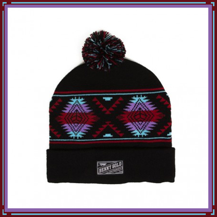
ORIGINAL FAKE ASTRO BOY T-SHIRTS
Another t-shirt capsule collection by Original Fake, the brand created by Medicom Toy from Japan and Brooklyn artist Kaws.
The Astro Boy KAWS Version was just released as a vinyl toy and a cushion, and now they present another series of pocket t-shirts with several new designs of the iconic cartoon character.
These t-shirts will also release on January 3rd, 2013.
www.original-fake.com
Posted by Exit 24/12/2012
PRADA X RICHARD HAINES T-SHIRTS
Italian brand Prada celebrated this season with a series of diverse interventions featuring the work of renowned fashion illustrator, Richard Haines. The project combines hand-made artistry and cutting edge technology. The 6 different motives on t-shirts will be available exclusively at Prada stores in Milano, New York, London, Paris, Hong Kong and Tokyo.
www.prada.com
Posted by Exit 17/12/2012
686 X BLIND COLLECTION
On the heels of their collaboration with Crooks & Castles comes this rad capsule with Blind. Consisting of a facemask, glove, and jacket in two colourways rust and grey, with all over print artwork from OG Blind artist Marc McKee.
686.com
blindskateboards.com
Posted by Exit 17/12/2012
HUF X GOLDEN BEAR DELUXE VARSITY JACKET
HUF has partnered up with San Francisco-based brand Golden Bear on a collaborative release of their signature Deluxe Varsity Jacket. The Golden Bear Varsity Jacket is a heavyweight outerwear featuring a melton wool body, genuine leather cowhide sleeves, quilted satin interior lining, and a button-snap front closure. The jacket is detailed with custom chainstitch embroidery on the right chest, a HUF Metal Classic H Logo on the left chest and a debossed HUF Circle H logo on the sleeve cuff.
hufworldwide
www.goldenbearsportswear.com
Posted by Exit 17/12/2012
ADIDAS CONSORTIUM - FIRST WOMEN'S COLLECTION
Since the relaunch of adidas’ top tier Consortium line last year, there has been a natural demand for women’s product with comparable quality materials and detailing. To respond to these requests,
adidas Originals has joined forces with two Scandinavian retailers, WOOD WOOD and Sneakersnstuff, to create the first capsule collection designed specifically for women within the Consortium range.
The three silhouettes - Gazelle Vintage (WOOD WOOD), ZX 700 (Sneakersnstuff) and Basket Profi (adidas Originals) - are varied in style but all share a directional foundation. The look
and feel of each shoe is considered, and as always with sneakers in the Consortium range, construction
and high quality materials are fundamental.
www.adidas.co.uk
Posted by Exit 10/12/2012
GIVENCHY SHARK PRINT HOODED TOP
Givenchy (and Creative director Ricardo Tisci) has added another product to their Shark-Print arsenal. The hooded top features the same shark-print as the brands Oversized Cotton-Jersey T-Shirt.
www.givenchy.com
Posted by Exit 10/12/2012
BARBOUR X TOKIHITO YOSHIDA SKYFALL JACKET
Barbour x Tokihito Yoshida Sports jacket as worn by Daniel Craig as James Bond in Skyfall is far from a movie prop. The multi-functional garment draws inspiration from genuine vintage sporting pieces, fusing Tokihito Yoshida’s functional design ethos with fabrics and details from the Barbour archive. The result is a considered, modern jacket, ideal for unpredictable, wet weather.
http://www.barbour.com
Posted by Exit 10/12/2012
H&M FOR BRICK LANE BIKES SPRING 2013
Cycle store and fixed gear specialists Brick Lane Bikes based in east London have got together with H&M to create a collection designed specifically riders. The independent store’s founder and staff rigorously tested the initial line, adding notes where necessary and helping the designers with the fine detail. Born out of a shared love of two wheels, the collection will be available worldwide March 7th, 2013.
bricklanebikes.co.uk
www.hm.com
Posted by Exit 03/12/2012
AAAA X ERIC KOT X NEW BALANCE H574
New Balance has teamed up with Hong Kong born hip hop star Eric Kot for this very special H574. At the heart of this collaboration is a good cause, some of the proceeds are going directly to help support Asia Acts Against AIDS (AAAA).
www.newbalance.co.uk
Posted by Exit 03/12/2012
CHARI & CO SMART GLOVE
Chari & Co NYC teamed up with Mike Hernandez to work on his signature model smart glove over the summer and came up with 3 colorways for the top part of the glove: solid black, wine, and camouflage. The bottom part of the smart glove goes with an American flag print that grips good to any object.
The Smart Glove is for anyone who wants to use their technology device that requires human skin to screen contact. Index and middle finger as well as thumb have slits on the side so you can pull over and out which ever of those three fingers when necessary t0 operate your mobile phone, camera etc. without having to remove the whole glove itself.
www.chariandconyc.com
Posted by Exit 03/12/2012
THE WEIR OVERLOOK SPECIAL EDITION KNIT HAT
The Connoisseur brand is all about immersing itself in the things we love and are passionate about, this is no finer example of that.
This is one of a kind, if you don't know what this is or represents then, well, you shouldn't have to ask. But if you must; it's that horrendous, garish carpet from the Overlook Hotel, from the chilling cult Stanley Kubrick movie The Shining. Come and play with us, forever and ever and ever...
casualco.com
Posted by Exit 26/11/2012
AKOMPLICE X RICKY POWELL HAT COLLECTION
The collection is comprised of pom beanies in black and red as well as a trio of snap backs in hunter green, maroon and navy. Each hat features our logo alongside Ricky's signature and the number 50 illuminating the inclusion of this collection within Ricky's 50th anniversary.
More than a collection of hats, this is a collaborative effort which will reverberate with New Yorkers. For the collection we made use of the iconic New York Times typeface and added our own street savvy spin. In line with Ricky's artistic appetite, we enlisted a threesome of topless models who were more than willing to bare their bodies for Ricky's lens. Along with the digital look book, a curated collection of physical prints will be on display at our flagship Saturday, November 17th with Ricky Powell in attendance. We will be offering a pre-release of the hats the night of the event. The hats will be available at fine Akomplice retailers worldwide on November 26th.
www.akomplice-clothing.com
Posted by Exit 26/11/2012
JIL SANDER SQUARE TOE SHOES
For Spring/Summer 2013, Jil Sander unveils dual colorways of the staple Square Toe shoe. Presented in either maroon or olive with strong color blocking, each has black accents and prominent snub-nosed front as well as red stitching along the sole for a unexpected twist.
jilsander.com
Posted by Exit 26/11/2012
KIDULT MISERY T-SHIRT
A new tee from Kidult features Coco Chanel’s famed double C logo and the words “your luxury is our misery”. The t-shirt will be available in both black and white, and once again will be limited to 50 pieces. If you want to get your grubby vandal mitts on one, they drop at 12:00pm (Paris time) on the 20th of November over on his website here.
kidultone.com
Posted by Exit 19/11/2012
YMC X CLARKS ORIGINALS SPRING/SUMMER 2013
London brand YMC and Clarks Originals come together to create the “Edmund Must” silhouette as well as a summertime moccasin, the “Edmund Create.” Treated in a range of premium leather and suede uppers, the customary crepe outsole is included while tonal laces, detailed stitching and woven details round the collection out.
www.clarks.co.uk
www.youmustcreate.com
Posted by Exit 19/11/2012
A.P.C. 25TH ANNIVERSARY 87 HOODIES
A.P.C. celebrates 25 years with these commemorative “87″ screened hooded sweatshirts. 1987 was a good year for many, including the Parisan line that’s gone full global in the modern era. Choose that “87″ mile stone in black or bordeaux.
apc.fr
Posted by Exit 19/11/2012
RYAN MCGINNESS STUDIO SHIRT X AGNÈS B
Ryan McGinness delivers two trompe l’oeil garments for agnès b. made to look like shirts worn by the McGinnes who regularly wears the designer’s white shirts when working in his studio. Available in long sleeve t-shirt or as button down, the shirts are hit towards the lower end making them in some regard subtle to wear.
www.agnesb
Posted by Exit 12/11/2012
STUSSY X SCHOTT MILITARY PEA COAT
Stussy and Schott got together, succesfully fusing two great pieces from fashion history, namely the Pea Coat and the iconic Perfecto Motorcycle Jacket, made famous by Marlon Brando in the film The Wild One. The updated Military Pea Coat features a zip closure, snap-down lapels, two side pockets, two breast zip-pockets and contrasting yet subtle red logo patch.
www.schottnyc.com
www.stussy.com
Posted by Exit 12/11/2012
FRAPBOIS X NEW BALANCE BOOT
New Balance and japanese brand Frapbois teamed up for another collab. Sporting almost the complete range of rainbow colours and some polka dots as the icing on the cake. Features include gold d-ring lace holes, gold embroidered New Balance branding on the heel and a reflective New Balance logo on the side panels. The release is scheduled for the 10th of November.
www.frapbois.jp
www.newbalance.co.uk
Posted by Exit 12/11/2012
ORIGINAL FAKE DOWN & MOUTON VARSITY JACKET
Original Fake has released these two jackets just in time for the Winter. The company has always prided themselves for working with a variety of materials and this release is no different. Using Lamb Leather for the Down Jacket and Sheepskin for the Mouton, Original Fake has produced two solid products that are sure to be well received this coming Holiday season.
www.original-fake.com
Posted by Exit 05/11/2012
PUMA DISC BLAZE LTWT BLACK & WHITE PACK
The Puma Disc Blaze LTWT version, features a lightweight running outer sole. This week it has released in two exclusive limited edition black/white colorways. One of them features an all black upper on a white outer sole and the other one comes with a mostly white upper, both very clean versions of the sneaker.
www.puma.com
Posted by Exit 05/11/2012
NEIGHBORHOOD X CASH CA COLLECTION
Neighborhood presents its latest collaborative capsule collection, this time with CASH CA. As part of the collection the two present knitwear, hoodies, a down vest, t-shirts, as well as a beanie and a tote bag.
The Neighborhood x CASH CA Capsule Collection will release from Neighborhood Harajuku and Heather Grey Wall on November 10th, 2012.
www.neighborhood.jp
Posted by Exit 05/11/2012
ADIDAS ORIGINALS CONSORTIUM RIVALRY LO PACK
Basketball culture had its golden times in the ‘80s and ‘90s with adidas playing an integral role in the scene, offering a range of impressive court footwear such as the popular Metro Attitude and Conductor. In 1986, the Rivalry was released as a very close relation to the Conductor and came in a huge array of color combinations. The original colorway paid tribute to one of New York City’s top basketball teams at the time, the reason every New York fan had to have their hands on a pair.
For Consortium, adidas Originals brings back the Rivalry Lo in a nostalgic move with two colorways: the iconic OG of white, blue and orange is matched up alongside rival Chicago team colors in black, red and white. The reissue is upgraded with the quality materials that Consortium is known for.
The adidas Originals Consortium Rivalry Lo Pack will only be available at No.6 London, No.74 Berlin and Consortium retailers from November 23, 2012.
www.adidas.co.uk
Posted by Exit 29/10/2012
POLLY MORGAN STAG SWEATSHIRT
Constant & True announce their second collaboration with artist Polly Morgan. Her beautiful sketches depict Morgan's love of the animal form and the perversity of nature. The Stag is screen printed onto a 100% organic cotton sweatshirt.
www.pollymorgan.co.uk
Posted by Exit 29/10/2012
SWATCH CHRISTMAS SPECIAL WATCH
Swiss watch and jewellery maker Swatch welcomes the holiday season with their annual season special collection.
Two New Gent Lacquered models, ice cold silver or sumptuous gold, these watches offer fascinating views of the precise Swiss movement through a cut-away window at the centre of the dial.
www.swatch.com
Posted by Exit 29/10/2012
SUPREME X MARK GONZALES M-51 JACKET
The latest version of the M-51 Jacket features artwork by Mark Gonzales for Supreme. The M-51 is constructed of cotton and nylon, with a zipper and snap placket, removable lining and hood. The jacket also features bellowed pockets on the chest and flap pockets on lower front region. The jacket comes in three colourways, olive, navy and woodland camo.
www.supremenewyork.com
Posted by Exit 22/10/2012
LOUIS VUITTON MADE TO ORDER MEN’S SHOES AND BELTS
Louis Vuitton now offers “Made To Order”, a service that lets you create your own personal pair of shoes and complimenting belt. You choose the model, the material, the finish, everything to invent the shoe that corresponds precisely to your tastes and desires. Three thousand possible combinations for the ultimate in luxury. Yet another way in which Louis Vuitton expresses the highest quality standards and its passion for innovation. Shoemaking is a master craft requiring techniques that the Maison has brought to its Fiesso d’Artico workshop. There, the most seasoned craftsmen labour to create this inimitable footwear.
For those wanting greater personalisation, belts are available in the leathers, colours and finishes that match those of the shoes, all made with the same Louis Vuitton savoir-faire. Customers can chose from two different widths and three different straps as well as two styles of buckle with four different metal finishes. The belt is adjusted to the customer’s waist size and only three holes are punched, compared with the traditional five holes, to create a completely custom item.
www.louisvuitton.com
Posted by Exit 22/10/2012

BAPE X TRANSFORMERS PRIME
Bape have teamed up with Transformers Prime, the American computer-animated television series based on the Transformers toy franchise by Hasbro. Bape fused its own logos and characters with the icons of the Decepticons and Autobots robots from the series in the 6 piece t-shirt collection.
Release of the t-shirt at Bape stores on October 27th, 2012.
bape.com
transformersprime
Posted by Exit 22/10/2012
ANTON CORBIJN X ALTAMONT
On the heels of the release of Anton Corbijn's “Inside Out” documentary, Southern California-based Altamont releases four tees designed by Corbijn. He created a graphics set with variations of faces incorporating "Altamont." Most known for photographing Depeche Mode (with whom he’s collaborated since 1986), Joy Division, U2, REM and directing music videos for bands like Nirvana, Henry Rollins, Metallica, Johnny Cash, U2 and Nick Cave.
altamontapparel.com
Posted by Exit 15/10/2012
BURTON X COOGI
Rooted in Australia, but popularized in the US by hip hop culture, rich colors and tight knits define the iconic look of COOGI. Together with Burton the brand presents the Rubdown down snowboard jacket. The looks of COOGI are fused with the latest technology of Burton, including Climate controlling Pit Zips and a waterproof/breathable DRYRIDE Durashell 2L fabric outer shell.
burton.com
coogi
Posted by Exit 15/10/2012
SWATCH X FRED BUTLER
Swatch and accessory designer Fred Butler team up to release a limited edition watch. The colorful watch is designed in the shape of a sextant. It comes in a pyramid-shaped numbered collectors case and is limited to a quantity of 777.
www.swatch.com
fredbutlerstyle.com
Posted by Exit 15/10/2012
TIMBERLAND ABINGTON 2012 COLLECTION
The Abington collection drops with 5 new styles.
The durable Six Inch Work Boot is crafted after the boots worn by Mill Workers on their long and demanding shifts. The Work Oxford sports a more casual style but is no less durable than his bigger brother. The Abington Low Guide Boot is a tough yet comfortable recreational boot, just perfect for long fall walks through the rugged landscape of New England. The same applies for the Hiker and the Alpine Oxford, which also feature a comfortable Vibram sole. The Collection is made using only the finest qualitiy materials, such as Horween leather, Woolrich fabrics and British Millerain canvas.
www.timberland.com
Posted by Exit 08/10/2012
THE HUNDREDS X REVELATION RECORDS
The Hundreds has announced the creation of the The Hundreds x Revelation Records pop-up shop at The Hundreds’ New York flagship store located at 96 Grand St., New York, NY 10013.
Doors will be open from October 8th through October 14th, 2012. Special collaborative merchandise including band tees, a zip-up hoodie and limited edition beanies and snap-back caps will be sold in celebration of Revelation Records’ 25th Anniversary showcase, which takes place at New York’s Irving Plaza.
thehundreds.com
revelationrecords.com
Posted by Exit 08/10/2012
CONVERSE JACK PURCELL BROWNS BEACH JACKET
Inspired by the iconic 1930s Browns Beach Jacket, Converse Japan presents the new Jack Purcell ‘B-Jacket’ sneaker. Featuring a premium wool upper and a brushed wool lining. The sneaker will be released mid October 2012.
www.converse.com
Posted by Exit 08/10/2012
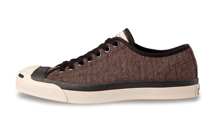
YSL MEN'S 2013 COLLECTION BY HEDI SLIMANE
The collection weighs heavily on the dark side of the color spectrum, with classically punk-rock inspired accents by way of leather, studs and leopard print. Hedi Slimane’s iconic Dior Homme look shines through, through an more LA leaning, YSL-flavored filter.
www.ysl.com
Posted by Exit 01/10/2012
ADIDAS ORIGINALS FOR XLARGE CAMPUS 80S
Adidas Originals has teamed up with XLarge Japan. For Fall/Winter 2012 the two brands present a collaborative version of the iconic Campus 80s sneaker. The sneaker comes in a black suede version with Leopard print pony hair accents on the Three Stripes and on the heel. The in-sole also features the leopard print, along with the signature bananas by XLarge.
www.adidas.co.uk
Posted by Exit 01/10/2012
VISVIM FBT BEARFOOT PIZI-FOLK
The Visvim FBT Bearfoot Pizi-Folk features a premium suede upper construction, antique brass stud detail, an ankle ‘skirt’ with patterned trim, a hand sewn moccasin toe, bead detailing and a stream lined custom vibram sole unit. Available in three colourways, tan, black and sky blue.
visvim.tv
Posted by Exit 01/10/2012
NEW BALANCE X BALL AND BUCK US574
At its core the shoe is classic new balance, a beautiful silhouette in the iconic new balance grey. With Ball and Buck New Balance has integrated the signature Ball and Buck Camo in 10oz duck cloth that is both sophisticated and purposeful. New Balance finishes off the shoe with a pop of color by using blaze orange for the heel tab and footbed to bring in the hunting inspiration that runs through all their products. The first release of 176 shoes will come with a vintage 50cal Ammo Can and hand stamped numbered brass plate.
www.newbalance.co.uk
ballandbuck.com
Posted by Exit 24/09/2012
DICKIES FOR URBAN OUTFITTERS
Dickies, still going strong after 80 years in the business, continue to fall back on their workwear roots. These guys have always made hardwearing, built to last clothing, creating for comfort and protection in jobs where that truly matters. Having found fans outside of the construction site for quite some years now, Dickies produce a collection with those original building blocks in mind, designed for a modern audience, slimmer cuts and more contemporary proportions.
www.dickiesworkwear.com
Posted by Exit 24/09/2012
A.P.C. WINTER 2012-2013 SNEAKERS
A.P.C. Winter 2012-2013 Collection drops. The French brand presents two styles - a velour slip-on low top sneaker with embroidered details on the upper and a new fur lined version of its high top tennis sneaker.
apc.fr
Posted by Exit 24/09/2012
JUNYA WATANABE MAN CANVAS HUNTING COAT
Junya Watanabe utilizes tonal contrasts in the creation of the Cotton Canvas Hunting coat. The material mix of cotton canvas, corduroy, alpaca leather, wool, and polyester is seen through out the array of flap and slant pockets with rivet reinforcements at the front. The interior of the jacket is lined with a brighter flannel liner and feature a pouch pocket.
www.comme-des-garcons.com
Posted by Exit 17/09/2012
SUPREME X VANS METALLIC PACK
Vans and Supreme have teamed up, presenting for Fall/Winter 2012 the Metallic Sneaker Pack. The pack includes the Old Skool and the Chukka, two very classic silhouettes out of the Vans collection. Both sneakers come in overall 4 colorways, each featuring premium suede uppers and metallic leather details.
www.supremenewyork.com
Posted by Exit 17/09/2012
SWATCH TATTOO ART COLLECTION
In its latest limited edition release, Swiss watch brand Swatch teams up with tattoo artist Tin-Tin and Swiss visual artist Emmanuelle Antille. Tin-Tin created three watch designs and Emmanuelle Antille created two designs, inspired by tattoos done by Filip Leu. The outcome is a full series of Tattoo Art watches, overall a line-up of 5.
www.swatch.com
Posted by Exit 17/09/2012
SSUR - FREE PUSSY RIOT T-SHIRT
SSUR now presents the ‘Free Pussy Riot’ collection, consisting of t-shirts and a snapback cap.
“Pussy Riot is a Russian feminist punk-rock collective based in Moscow. Founded in August 2011, it consists of approximately 12 members, who wear brightly colored balaclavas and use only nicknames during interviews.
On February 21, 2012, five members of the group staged an illegal performance on the soleas of Moscow’s Cathedral of Christ the Saviour. Their actions were stopped by church security officials. By evening, they had turned it into a music video called “Mother of God, Chase Putin Away!”.
On March 3, two of the group members, Nadezhda Tolokonnikova and Maria Alyokhina, were arrested and charged with hooliganism. A third member, Yekaterina Samutsevich, was arrested on March 15.”
The SSUR products will be released on September 11th, 2012.
ssurempirestate.com
Posted by Exit 10/09/2012
ADIDAS ORIGINALS TOBACCO - SIZE? EXCLUSIVE
The classic adidas Originals Tobacco has been around since the 70s and represents those years in sneaker culture better than most other shoes.
Size? has gotten together with adidas Originals to produce two exclusive colorways of the Tobacco for Fall/Winter 2012. Featuring premium brushed suede uppers with tonal leather detailing, stitching and sole units.
www.adidas.co.uk
Posted by Exit 10/09/2012
VANS OTW FALL 2012 COLLECTION
In fall 2010, modern design met the original when the Vans OTW Collection launched as a new line of footwear inspired by Vans’ iconic Classic silhouettes updated with styling cues taken directly from street fashion. The capsule collection includes premium tees, stylish caps, sophisticated button-ups, a water-resistant chore jacket and a rucksake-style backpack.
www.vans.com
Posted by Exit 10/09/2012
REIGNING CHAMP FOR LEE RIDERS JACKETS
Vancouver’s Reigning Champ, has collaborated with LEE Japan in the form of these the Canadian made Rider Jackets. The rider jacket comes in two shades: navy and grey, both with a look of softness that comes from the jersey material used in fabrication. Made up at Reigning Champ’s home factory, CYC.
lee.com
Posted by Exit 03/09/2012
PAUL SMITH BLACK LEATHER DEWEY SHOE
New from Paul Smith, a Matte black leather shoe with cherry red trim (described as ‘moccasin’ detailing), and features contrast stitching and a toned down take on the zig zag sole. Part of the Paul Smith Jeans shoe collection. For AW12 Paul Smith Jeans has taken it’s inspiration from the Stonemasters and Yosemite, the location of some of their most remarkable ascents. The Stonemasters were a group of seminal climbers who, through the late seventies and early eighties, pioneered the art of free climbing. They conquered solo first ascents of many of the now famous Yosemite big walls, such as El Capitan, Half Dome, Washington Column and Sentinel Rock.
www.paulsmith.co.uk
Posted by Exit 03/09/2012
AIRWALK X ALREADY FAMOUS TIE DYE T-SHIRT
This signature Already Famous x Airwalk “We Out There” t-shirt is hand dyed in the USA with black/white based tie dye. Printed in Brooklyn, NY by SNKSWM.
airwalk.com
Posted by Exit 03/09/2012
A BATHING APE X SPIDER-MAN
A Bathing Ape has introduced its new collaboration with your Friendly Neighborhood Spider-man. The limited edition line from Spidey’s creator, Marvel Comics, consists of mesh snapback caps and graphic tees.
bape.com
Posted by Exit 27/08/2012
ORIGINAL FAKE KAWS RESTING PLACE HOODIE & T-SHIRT
After latest toy by New York artist KAWS to be released, the Original Fake KAWS Companion Resting Place, you now have the chance to get a t-shirt or a hoodie with it. The Companion Resting Place clothing by Original Fake will release at Original Fake on September 1st, 2012.
www.original-fake.com
Posted by Exit 27/08/2012
ADIDAS ORIGINALS ZX8000 DE LUXE FALL 2012
The adidas Originals ZX 8000 classic running shoes drops for Fall 2012, the sneaker returns in a luxury limited edition version.
The adidas Originals ZX 8000 De Luxe comes in two colorways this season, featuring premium suede uppers and premium leather details.
www.adidas.co.uk
Posted by Exit 27/08/2012
FRED PERRY 60 YEAR ANNIVERSARY BLANK CANVAS
Fred Perry is celebrating 60 years as an icon of fashion, a brand with an unique place in the British style firmament and one that is instantly recognized around the globe. Fred Perry was formed in 1952 by the British tennis legend and table tennis champion of the same name. Fred Perry has influenced and introduced some of the most iconic styles of the last century, which continue to be relevant today. Building on a unique history based on both sports and streetwear, Perry continues to successfully fuse heritage with contemporary product design.
To celebrate this important landmark Fred Perry have created a blank canvas capsule range of apparel and footwear - a contemporary take on original styles first seen in the 1952 Fred Perry Sportswear catalogue available in the Laurel Wreath collection.
www.fredperry.com
Posted by Exit 20/08/2012
ADAM KIMMEL CRAZY HORSE LEATHER BOOT
From the new Adam Kimmel Fall/Winter 2012 Collection the Crazy Horse Leather Boots. Inspired by a rather classic outdoor boot, they come in one of the signature colors of the designer. They feature a mixed leather and nylon upper, giving them a more modern appeal. The lining is made of really soft leather, and will create some great comfort this winter season.
www.adamkimmel.com
Posted by Exit 20/08/2012
HUF FALL 2012 COLLECTION
HUF has released the second delivery from their Fall 2012 collection. The latest drop consists largely of tees, but there is also a nice mixture of workwear inspires shirts, hearty flannels and a nice array of New Era caps. Plantlife is represented in the form of socks and boxers, too.
www.hufworldwide.com
Posted by Exit 20/08/2012
BARBOUR X WOOD WOOD 10TH ANNIVERSARY JACKET
Barbour is getting together with Wood Wood to celebrate the Danish brand’s 10th anniversary. Wood Wood took one of the most classic Barbour waxed cotton jackets, the Bedale, and infused their own style and DNA into it. The Danish brand used subtle color blocking elements on the upper of the jacket, two tone metal buttons, as well as leather insertions and reinforced outer pockets. Another great detail is the hidden pocket on the inside of the jacket, a characteristic which become a bit of a signature for Wood Wood over the years.
woodwood.dk
Posted by Exit 13/08/2012
MIADIDAS CUSTOMISERS
To celebrate the Olympic Games, adidas reveals ‘miadidas Customisers’, a real-time art project uniting the most passionate artists, athletes and fans from around the world to produce unique customised shoes that will embody the London 2012 Olympic Games.
17 days, 9 artists, 34 artworks. Every day of London 2012, live at the adidas Olympic Lounge, two artists from a carefully hand-picked shortlist of nine will customise the Performance footwear of select Olympic athletes, inspired by the day’s winning ‘all in’ moment. As congratulations, one artwork will be awarded to the chosen athlete daily, a unique and personalised trophy for their journey; the other will be given away online, an inspirational gift to the next generation of potential adidas Olympic athletes who have suggested their day’s most outstanding sporting moment.
Key artists include footwear customiser NASH MONEY, London-based props and accessories designer Fred Butler, emerging streetwear talent Kara Messina of Y’OH Streetwear, hat and accessories designer Nasir Mazhar, and street artist Dr Noki amongst others.
Thomas van Schaik, Global Brand Director of adidas said “London is a creative city with some excellent emerging artists who can help put their unique spin on our adidas footwear. The real-time element allows everyone to get involved by defining the key moments from this Olympic Games and seeing them captured immediately on an historic item that they can then have the chance to win.”
www.adidas.co.uk
Posted by Exit 13/08/2012
STUSSY X AFDICEGEAR GORE-TEX JACKET
Celebrating the 5th anniversary of their Zozo Chapter Store, Stussy has partnered with long-time cohort AFDICEGEAR on the GORE-TEX Baker Jacket. Waterproof, windproof and breathable this snowboard jacket features contrast green seam taping over a black and white body.
www.afdicegear.com
www.stussy.com
Posted by Exit 13/08/2012
STUSSY X EMINEM
In support of his upcoming Japan tour, Stussy has teamed up with Eminem on the “Recovery Japan Tour 2012″ t-shirt. The tour tee features the artist on the front with his name in the signature Stussy font. The back features the Stussy “SS” link logo and the slogan “Not Afraid”.
The Stussy x Eminem T-Shirt will be available from August 25, 2012.
www.stussy.com
Posted by Exit 06/08/2012
VANS X HORWEEN LEATHER
A collaboration between two great American brands in Vans and the Horween Leather Company.
The Era LX comes in brown leather. It makes use of both a pebbled and smooth leather giving the shoes a really refined look. The Mt. Edition Decon LX utilizes a premium smoothed out leather throughout the upper, giving the sneakers an extremely luxurious look.
horween.com
www.vans.co.uk
Posted by Exit 06/08/2012
GOLF WANG SOCKS
Odd Future’s Golf Wang brand has released some new socks that are hitting retailers now. A fun selection of colorful and patterned socks can be seen here in our gallery including some with a watermelon print, and the OF donut ‘O’ logo.
oddfuture.com
Posted by Exit 06/08/2012
UNDEFEATED 2012 OLYMPIC T-SHIRTS
Undefeated celebrates the spirit of the Olympic games with a new T-shirt collection. The athletic-inspired streetwear brand invites French illustrator Pierre Bolide to offer his interpretation of the world sporting event. The final products feature T-shirts with characters involved in various forms of sports capturing the perfect essence of competition.
www.undefeated.com
Posted by Exit 30/07/2012
MARRIED TO THE MOB - SUMMER 2 2012
The release consists of our classically bold short -sleeve tees, a soft graphic v-neck, and two adorable tank tops stamped with the MTTM lips & throwback clover logo. Plus we've got the fellas covered too, of course, adding a couple new styles to the current mens lineup. each available in two color ways. But perhaps the most exciting part of this second Summer drop is a tee selection created in collaboration with rapper CURREN$Y, lover of MTTM and homie to the brand. Inspired by his love of the Jet Life, and all things weed-related, each piece is a perfect blend of plyafulness and provocation- with pot leaves and dollar signs galore.
mttmnyc.com
Posted by Exit 30/07/2012
RON ENGLISH X PUMA SUEDE COLLECTION
Renowned international artist Ron English, who was present at the 5th edition of Puma Urban Art, worked on the legendary and classic siloutte of the PUMA Suede, thus making them prized collectibles for fans of street art.
Ron English is considered one of the fathers of modern art in the street and is known for coining the term “popaganda” whit his photorealistic art and the inventive use of color. His creations connote a strong critique of consumerism and does so through the use of icons of American culture and history, such as actress Marilyn Monroe, the clown Ronald McDonald and President Barack Obama.
www.puma.com
Posted by Exit 30/07/2012
RICHARDSON T-SHIRTS - MARK GONZALES - JOHN WILLIE
Richardson magazine's first drop of their new of T-Shirts includes,
two previously unseen designs by Mark Gonzales from his "Lovers" series,
The John Willie G-String Tie instructional Tee, and the Finger Love Hate God shirt which features headlines from the cult magazine series.
www.richardsonmag.com
Posted by Exit 23/07/2012
HUF HAWAIIAN PRINT VOLLEYS
Available at DQM 3rd St is the latest exclusive release from HUF. This drop features an adjustable five panel volley, showcasing Hawaiian print fabric with metal eyelets and a woven label at the front. HUF Hawaiian Print Volleys will be available in limited quantities.
www.hufsf.com
Posted by Exit 23/07/2012
LAZY OAF X BATMAN WOMEN'S COLLECTION
This special collection features some brand new shapes and styles for Lazy Oaf including a sheer crop top and cropped baseball T-shirt, kickass leggings, a catwoman-worthy body suit and a winning batwing shirt.
The Batman x Lazy Oaf lookbook was shot by Viktor Vauthier.
www.lazyoaf.co.uk
Posted by Exit 23/07/2012
KARL LAGERFELD PARIS MAN COLLECTION
July 24 sees the launch of the new Karl Lagerfeld Paris Man collection at Selfridges in London just days before the opening ceremony of the London Olympics. Selfridges will also be the locale for Lagerfeld’s signature line. London’s I Love Dust gets involved once again on a special series t-shirts for the opening under the “Team Karl” name.
www.karl.com
Posted by Exit 16/07/2012
MIU MIU SLIPPERS
For Autumn/Winter 2012, Miu Miu introduces a modern and feminine version of the classic slipper.
Miu Miu Slippers combine artisan heritage with aesthetic research, emphasizing the master craftsmanship involved.
Designed in soft velvet, elegant satin or patent leather, the slippers feature an embroidered ‘regal’ design, bow detail and striking jewel-like heels with crystals applied.
The Miu Miu Slippers are available in a selection of key colours; blue, bordeaux, ottanio, ibisco, nudo and black.
www.miumiu.com
Posted by Exit 16/07/2012
ACAPULCO GOLD - ANOTHER PIECE OF CRAP - T-SHIRT
Label beef? Doubt it, but Acapulco Gold gets their first love on Selectism with this “Another Piece of Crap” t-shirt; part of their Summer 2013 line. Why they decided to poke some fun on ze’ French label has everything to do with the ease of putting three words together. As appropriate as Comme des Fuck Down!
www.acapulcogold.com
Posted by Exit 16/07/2012
LEVI'S COMMUTER FALL 2012 COLLECTION
Levi’s keeps the collection tight and on point, with the new Fall line only consisting of 4 pieces - a Work Shirt, a Trucker Jacket, a 511 denim pant, and a 511 khaki chino. Just like the previous collections, each product is made with technical materials, making sure that you are good under any circumstances on your bike - reflective panels, waterproof/repellant materials.
www.levistrauss.com
Posted by Exit 09/07/2012
VANS MESA MOC CALIFORNIA
The new Mesa Moc CA combines a Chukka boot silhouette with elements of desert boots to recast a deconstructed ankle leather shoe in an artful and innovative design. The premium suede upper is imbued with nonpareil, earthy character through the use of warm fall colors and subtle detailing such as the newly constructed overlay moc toe area, round wax laces and synthetic suede linings.
www.vans.co.uk
Posted by Exit 09/07/2012
CONVERSE JACK PURCELL PIQUE
Converse Japan presents a solid and nice looking new version of the Jack Purcell. The classic low top sneaker comes for Fall 2012 in a new ‘Pique’ fabric version in navy and beige. The white outer sole keeps them crisp and clean and the leather laces add a further premium touch.
www.converse.com
Posted by Exit 09/07/2012
FRED PERRY - ATHLETIC BLANK CANVAS COLLECTION
The progressive collection embraces innovative styling, specialist manufacturing and ergonomic construction. The collection uses bold colour, advanced fabric technology and modernist design applied to classic styles.
The range consists of four polos and one jacket. The shirts were all made using Schoeller textiles. They used a 3XDry® pique which makes the product water and stain repellent on the outside and water absorbent on the inside so that they can be used as functional performance clothing. The Athletic lightweight jacket in Cloud grey was created using Majocchi, an Italian fabric. Other features include cloud panelling and laser cut pockets.
www.fredperry.com
Posted by Exit 02/07/2012
THE HUNDREDS X BREAKING BAD T-SHIRT
On Friday, July 29th, The Hundreds will be releasing a extremely limited edition t-shirt featuring a missing persons poster featuring Walter White. Only 50 of these are made and 25 will be free for the first hour to customers starting at 11am PST at the The Hundreds Los Angeles flagship location and 2pm EST at The Hundreds New York. Any tees remaining after that first hour will be free with purchases of over $20.
thehundreds.com
Posted by Exit 02/07/2012
YVES SAINT LAURENT PYTHON MALIBU SNEAKERS
New drop from Yves Saint Laurent, the "Raspberry" Python Malibu sneakers are a mixture of 80% python skin and 20% patent leather.
www.ysl.com
Posted by Exit 02/07/2012
MOBY X SWATCH COLLABORATION
Swatch recently joined forces with the musical artist, DJ and producer, Moby, to produce a limited edition watch Little Idiot that echoes the inventiveness and technical perfection found in any of his well-known songs.
This watch is available in a limited edition of 7777 pieces and comes in special packaging, with prints of Moby's hand drawn 'Little Idiot' character - who has cropped up in various of his music videos - adorning both the time piece itself and its packaging. A simple yet sophisticated colour palette of rich blue, white and a dash of yellow has been deployed across the sleek plastic and silicone surfaces of Moby's design, to ensure it merges maxi-mum stylishness with the humorous mood and fluid, linear technique of his charming illustrations.
www.swatch.com
Posted by Exit 25/06/2012
MARTIN MARGIELA METALLIC MILITARY SNEAKERS
Two new sneakers from the Maison Martin Margiela Fall/Winter 2012 Collection. The military trainer returns in another make-up. Previously presented in black denim and with paint splatters this season, here is now a look at the new metallic foil versions.
The full uppers of the sneaker are given a metallic silver and gold foil look, with parts coming off.
www.maisonmartinmargiela.com
Posted by Exit 25/06/2012
OAKLEY X ERIC KOSTON EK COLLECTION
Eric Koston has eared Gold in the X Games, Gravity Games, and Globe World Contest. The fearless master of street skate progression is also a genuine tastemaker- a style innovator who sets the pace for others to follow. We’re glad his creativity goes beyond four wheels and a deck because we had the honor of collaborating with him on this new Oakley Signature Series.
The Special Edition Frogskins and Holbrook have Brown Tortoise frames of durable yet comfortably lightweight O Matter®, and both have a Koston Emblem printed on the inner facing of one earstem. Plaintiff is made of our ultra lightweight C-5™ alloy, and the frame finish for this edition is Brown Camo. All three designs are matched with Dark Bronze lenses that tune light transmission for bright sun, boosting visual contrast to give depth perception a kick in the right direction. Each sunglass comes in a collectible bag with brown tortoise print, and the Microclear™ material is specially engineered for lens cleaning.
www.oakley.com
Posted by Exit 25/06/2012
ADIDAS ORIGINALS X OPENING CEREMONY 2012
In celebration of the forthcoming Summer Olympics in London, adidas Originals and New York-based retailer Opening Ceremony present a diverse and eclectic line for Fall/Winter 2012. Having reinterpreted iconic silhouettes from the sports and lifestyle brand, the result is a collection that draws from the prints, shapes and silhouettes from ’90s sportswear.
The first adidas Originals by Opening Ceremony capsule collection will roll out globally to selected fashion accounts as well as adidas Originals and Opening Ceremony stores in July and August 2012. The line comprises 70 apparel pieces and 20 footwear styles for both men and women.
www.adidas.co.uk
www.openingceremony.us
Posted by Exit 18/06/2012
OBEY X KEITH HARING FOUNDATION COLLECTION
Shepard Fairey’s OBEY clothing has worked with the Keith Haring Foundation on this extensive collection for Fall 2012. Haring was a big influence on Fairey, so this collaboration seems like a natural fit. A vast array of items make up the collection including tank tops, tees, a varsity jacket, an M-65 army jacket, raglan tees, fleece pants, crewnecks, hoodies, and accessories such as a beanie, cap, necklaces and pins.
www.obeygiant.com
www.haring.com
Posted by Exit 18/06/2012
LANVIN DESERT BOOTS - NAVY PYTHON
Lanvin present a new pair of desert boots in nubucked python and rubber-style calfskin. The upper make up is 95% python, 5% calfskin with leather lining.
www.lanvin.com
Posted by Exit 18/06/2012
DANIEL JOHNSTON FOR SUPREME T-SHIRTS
As part of their Summer 2012 Collection, New York brand Supreme presents a new collaboration of t-shirts with Daniel Johnston.
Born in Sacramento California in 1961, Daniel Johnston is an artist, singer, songwriter and musician. Mr. Johnston’s music has appeared in several films including Kids, Where the Wild Things Are, and the award winning documentary about his art and life The Devil and Daniel Johnston. His songs have been covered by numerous musical artists including Beck and Pearl Jam, amongst others. Mr. Johnston’s artwork and illustrations are straightforward expressions that are often connected to his own fears and desires.
Available in-store in NY, LA, London and online on June 14th. They will drop in Japan on June 16th.
If you are not familiar with who Daniel Johnston is check out the 2005 Documentary The Devil and Daniel Johnston.
www.supremenewyork.com
Posted by Exit 11/06/2012
CHURCH'S STRATFORD SHOE - OLYMPIC EDITION
Church’s delivers its Stratford shoe in special colorways for the 2012 games. 17 total variations on the Stratford shoe will be available from the Church’s London Regent Street store beginning in mid July. Every pair is numbered as special for the Olympic Games.
www.church-footwear.com
Posted by Exit 11/06/2012
9FIVE SUMMER 2012 LOOKBOOK WITH ROSA ACOSTA
9FIVE are back with a new video lookbook for the season to shine some light on their new eyewear creations. For Summer 2012 they recruited Rosa Acosta for their lookbook.
With collections designed by the likes of Steve Williams, Josh Kalis, Karl Watson, Eli Gold and rising star Jordan Hoffart, 9Five continues to pave an authentic path, creating premium eyewear from its roots, the skate lifestyle culture.
9fiveeyewear.tumblr.com
Posted by Exit 11/06/2012
Y-3 NOMAD BOOT
Yohji Yamamoto’s Y-3 line with adidas has created quite an interesting piece of footwear with the Nomad Boot. Taking the adidas Pro Model, Y-3 utilized a full-grain premium leather upper in black and burgundy and drapes the upper with a matching velvet looking material. The shell toe has been altered in a big way making this shoe extremely unique. Available in two colourways.
www.y-3.com
Posted by Exit 04/06/2012
LEVI'S DENIM JACKETS - ANDRE & SHEPARD FAIREY
Levi’s continues to promote the opening of its recent flagship store in Paris on the iconic Champs-Elysées. After having worked for the opening with Pedro Winter of Ed Banger Records and James Murphy, they have now teamed up with graffiti artists André and Shepard Fairey to produce some limited edition trucker denim jackets. Similar to the jackets that we have already seen last year for the ‘Art on the Streets’ exhibition at the MOCA in Los Angeles.
The jackets will release on June 14th, exclusively at the new Levi’s Paris store.
www.levistrauss.com
www.obeygiant.com
www.monsieura.com
Posted by Exit 04/06/2012
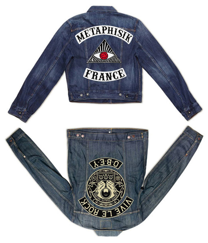
FUCT SPRING/SUMMER 2012 T-SHIRTS - SECOND DROP
FUCT make strong graphic tees and they continue to do so here. Following on from their April drop of their Spring/Summer 2012 collection, FUCT treat us to a preview of the second drop from the capsule. Various colourful bold prints toy on political, slightly religious themes.
fuct.com
Posted by Exit 04/06/2012
YAYOI KUSAMA FOR LOUIS VUITTON
Louis Vuitton has announced who their latest collaborator, Japanese artist Yayoi Kusama. Louis Vuitton reached out to the artist to tap into her affinity for dots and apply them to pieces for the world renowned luxury label. Past collaborations with Stephen Sprouse and Takashi Murakami generated tons of buzz, and we’re sure this latest series of limited edition items will receive a similar attention when they drop on July 11th, 2012.
www.louisvuittonkusama.com
Posted by Exit 28/05/2012
REEBOK X MARVEL INSTA PUMP FURY - SPIDER-MAN
With their upcoming The Amazing Spider-Man movie, Marvel has teamed up with Reebok on a Spider-Man themed Insta Pump Fury. Coming in an appropriate red/blue color scheme, the sneaker also features the Spider-Man logo on the pump and a tonal spider net graphic on the toe box. A full on Spider-Man graphic and Marvel logo are placed on the in-soles of the sneaker, Look out for a release on June 8th, 2012.
www.reebok.com
Posted by Exit 28/05/2012
ADIDAS - CONSORTIUM SS12 - YOUR STORY - DROP 2
The latest releases from adidas’ limited edition series of sneakers features some collaborations from creatives including photographer Shaniqwa Jarvis who did a ZX 500, Happy Socks’ Viktor Tell going with the Matchplay, illustrator Stefan Glerum working on the Decade Hi, Kara Messina opting for the Pro Shell Model and rounding things out, is an adidas BC 20th anniversary edition sneaker.
www.adidas.co.uk
Posted by Exit 28/05/2012
ORIGINALFAKE GIRL BUBBLE T-SHIRT
Kaws’ signature sketching masks a bikini-clad pink characterized women that serves as the screened graphic of the front of the tee. The signature OF ribbed collar and embroidered X on the sleeve finish off the tee that is offered in a range of color options - white, black, heather grey and navy blue.
www.original-fake.com
Posted by Exit 21/05/2012
ADIDAS ORIGINALS 2012 SUMMER BEACHSTAR
Donning a upper that gives nod to the technology and aesthetics of the likes of Crocs and Native Shoes, the BEACHSTAR features a perforated EVA upper that is rounded out by a neoprene constructed sock. The trademark shell toe resides along the front of the shoe while customary Three Stripes, a pure white outsole and tonal stitching finishes off the summer-ready pairs.
www.adidas.co.uk
Posted by Exit 21/05/2012
SUPREME - THE ALTON SUNGLASSES
Supreme presents their new Summer 2012 Sunglasses. The Alton frame comes in overall 4 colorways, ranging from more classic black and tortoise versions to more extraordinary yellow and green.
The new Supreme Summer 2012 Sunglasses release on May 24th in their NY, LA and London stores, as well as online. The Japanese stores May 26th.
www.supremenewyork.com
Posted by Exit 21/05/2012
ADIDAS ORIGINALS - CONSORTIUM SS12 - YOUR STORY
When adidas Originals brought Consortium back for FW11, the slate was wiped clean giving a fresh start to the premium range. It also paved the way for the next collection as they invited nine creative partners to fill in the canvas.
Here's drop one.
BC X Kate Moross (opposite) - Her distinctive style has her partnering up adidas Originals to interpret the BC, paying homage to the Olympics in her own graphic way.
Decade Hi X Aloe Blacc (opposite) - The ox blood premium leather is suggestive of African soil while the translucent gum outsole represents the bare foot of Blacc's inspiration, Ethiopian gold medalist and marathon runner Abebe Bikila, who competed in the 1960 Olympics held in Rome.
Pro Shell X MURO - MURO's Pro Shell is understated, but bursts of detail are found throughout, like the jersey material covering the ankle padding that features engineered stripes reminiscent of a track top's cuff.
ZX 500 X Quote - Quote's muted colour-way is directly influenced by the blue and white track of the Berlin Olympic Stadium.
Matchplay X J. Thompson - Thompson looked back to the adidas archives of track and field shoes from the '30s as inspiration, and has used very subtle waxed leather on most of the upper which gives it a vintage look. A matching pigskin suede toebox shows impeccable attention to detail while the lack of lining gives it a handcrafted feel.
www.adidas.co.uk
Posted by Exit 14/05/2012
NUMBER (N)INE SPRING/SUMMER 2012
Japanse label Number (N)ine continue to release goods. For this season, they deliver one pullover hood and a selection of tees bearing their own graphics and also collaborative work with The Rolling Stones and Disney, putting their own twist on the given iconic graphics.
www.n-nine.com
Posted by Exit 14/05/2012
ADRIAN JOHNSON X STUSSY
Stussy has introduced its latest collaborator for their Artist Series t-shirts and it is British illustrator Adrian Johnson. Johnson has worked with some great brands in the past including Paul Smith, adidas, Monocle and he can now include Stussy in that list of clients. For this release, 4 surf-inspired graphics are presented on a handful of colorful tees, ready for summer.
www.stussy.com
www.adrianjohnson.org.uk
Posted by Exit 14/05/2012
MISSONI X HAVAIANAS FLIP FLOPS
Italian fashion house Missoni have collaborated with Havaianas on their iconic flip flops. Havaianas reused the waste material out of the rubber manufacturing process to construct the flip-flops and Missoni implemented their bold print patterns through unique photo transfer techniques. The result is of bright coloring, bringing a change in the style of beach sandals tend to be uniform. In addition, each model and the bag that comes with them bear the characteristics of Missoni using recycled materials.
www.havaianas-store.co.uk
www.missoni.com
Posted by Exit 07/05/2012
CUTLER & GROSS FOR MARTIN MARGIEL 2012
Cutler & Gross is tapped once again by the House of Margiela to co-create their 2012 sunglasses collection. A bunch of great reinterpretations of classic “found” frames in the offering including acetate plays on the aviator frame, spectacle-lover shades, and more.
www.maisonmartinmargiela.com
www.cutlerandgross.com
Posted by Exit 07/05/2012
DR. MARTENS CAMO WEDGE COLLECTION
This new lightweight model from Dr. Martens fuses a street-casual look with original cobbling techniques that have been honed and refined for over 50 years of shoe and boot manufacturing. The combination of this contemporary upper styling and materials reinvent this all time classic. The Desert Boot Camo Wedge Collection, which will be exclusive to London retailer Footpatrol.
www.drmartens.com
Posted by Exit 07/05/2012
RAF SIMONS X FRED PERRY SPRING/SUMMER 2013
Raf Simons x Fred Perry Collaboration will return for Spring/Summer 2013. The collection first launched in Autumn/Winter 2008 and ran until last summer, sitting out the last two seasons. A 28 piece clothing line by Fred Perry, designed by Raf Simons, will return next summer. The collection will be officially presented during Paris Fashion Week this coming summer.
www.rafsimons.com
www.fredperry.com
Posted by Exit 30/04/2012
UNDERCOVER X DISNEY UNIQLO UT T-SHIRT COLLECTION
Uniqlo continues its collaboration with Undercover under the UU label and this time also involves Disney. Remixed Disney graphics, produced bu Jun Takahashi’s brand Undercover, are featured on the t-shirts. The line includes mens, women’s and children’s t-shirts.
www.uniqlo.com
Posted by Exit 30/04/2012
AIRWALK - THE ONE
Airwalk have relaunched its all time top-selling sneaker, The One. First dropped in 1993 this iconic shoe is reissued in a blue color way that was originally a Japan exclusive. Composed of a rich all-suede upper stacked over a fully molded rubber cupsole, The One is recognized around the world as one of the first skate-inspired lifestyle kicks.
www.airwalk.com
Posted by Exit 30/04/2012
MHL BY MARGARET HOWELL X CONVERSE JACK PURCELL
After having worked on the Chuck Taylor Hi, MHL by Margaret Howell has teamed up again with Converse. For Summer 2012 they present two colorways of the iconic Jack Purcell low top sneaker. Simple and in line with their previous collaboration, the sneakers come in black and off-white, featuring a premium canvas upper. The double branding only appears on the in-sole.
www.converse.com
thenorthface.com
Posted by Exit 23/04/2012
SUPREME X NORTHFACE SPRING/SUMMER 2012
The new North Face x Supreme Spring/Summer 2012 Collection. The capsule collection includes the Venture Jacket, Hot Shot Backpack and Wayfinder 25 Rolling Bag. The Venture Jacket features a water resistant ripstop Hyvent® shell. The Hot Shot Backpack features a 600D Poly and 1680D Ballistics Nylon shell and the Wayfinder 25 Rolling Bag features a 600D Poly and 630D Ballistics Nylon shell.
All items will be available in two colorways exclusively made for Supreme. The NY, LA, London and online stores will launch the products on April 26th.
www.supremenewyork.com
thenorthface.com
Posted by Exit 23/04/2012
SNEAKER FREAKER X PUMA BUNYIP
Named after a mythical creature from Aboriginal mythology, Sneaker Freaker has been working for 3 years on the all new Bunyip low top sneaker. Based on the iconic Puma Dallas. The sneaker will release in limited quantities in the Asia Pacific region and on the Sneaker Freaker website in the coming weeks.
www.sneakerfreaker.com
www.puma.com
Posted by Exit 23/04/2012
KENZO X VANS ERA COLLECTION
Kenzo and Vans announce a series of new collections for summer 2012. These ranges of Kenzo and Vans products will be comprised of three installments set to hit stores in May, June and July.
The first assortment includes seven colorways available for men and women that feature the bright blue, white, green and red colors seen on the Kenzo Spring 2012 runway.
www.kenzo.com
www.vans.com
Posted by Exit 16/04/2012
MARRIED TO THE MOB SUMMER 2012
Married to the MOB’s Summer 2012 collection has now hit their online store. The ladies’ label dropped this lookbook featuring Sweet 16 Sarah and Curren$y in support of the drop.
mttmnyc.com
Posted by Exit 16/04/2012
JUN WATANABE X ATMOS X REEBOK INSTA PUMP FURY
Jun Watanabe and atmos follow up with version 2 on their collaboration with Reebok on the Insta Pump Fury shoe. In typical Watanabe fashion, we see the use of a very bold print with bright accenting colors. Black polka dots are the dominating design element, especially against the magenta and purple sole
www.junwatanabe.jp
Posted by Exit 16/04/2012
PUMA BOLT LITE LOW & BOLT LITE MID
For Summer 2012 Puma releases two new sneakers, fusing the past and the future. The Puma Suede and Suede Mid are brought into the future this season in the form of the Bolt Lite Low and Bolt Lite Mid.
Inspired by Usain Bolt, Puma added new outer soles to the sneakers that are close to their Faas soles in terms of technology. Made of the same material as the Faas soles, they also tried to stay true to the Suede and thus kept the original form of the Suede outer sole. The outcome is quite impressive - old school sneakers with new school technology.
The low top only weighs 144 grams and the mid top 176 grams.
www.puma.com
Posted by Exit 09/04/2012
DR MARTENS KENSINGTON COLLECTION
The Kensington Spring/Summer 2012 Collection gives two feminine options with the Carrigan Cut-outs and Deirdre T-bar shoes.
With both styles paired together with Dr. Martens' signature Goodyear-welted soles, the Deirdre Cut-out is the more feminine of the two and resembles sandals with its peekaboo cut-outs.
www.drmartens.com
Posted by Exit 09/04/2012
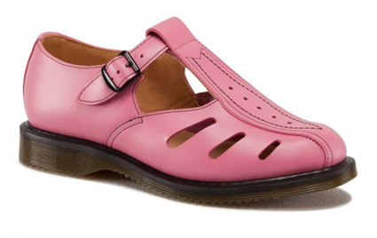
SUPREME SPRING/SUMMER 2012 T-SHIRTS
As well as collaborative Independent Truck Company tees, Supreme presents 6 other new graphic t-shirts as part of their Spring/Summer 2012 Collection this week. From simple logo chest prints to bolder prints all over the front and back of the tees. New t-shirts at Supreme stores and online from April 19th.
www.supremenewyork.com
Posted by Exit 09/04/2012
DC COMICS X CONVERSE CHUCK TAYLOR ALL STAR
Converse has introduced some more collaborative Chuck Taylor All Stars with DC Comics for Spring 2012. This time around we see Wonder Woman and Killer Croc getting into the mix with a CT High and Low.
www.dccomics.com
www.converse.com
Posted by Exit 02/04/2012
VISVIM GRIZZLY BOOTS MID-FOLK
As part of a special installation that visvim will be hosting at Isetan Shinjuku, the Japanese brand will release the Grizzly Boots Mid-Folk in some special make-ups. Premium leather is mixed with denim on the uppers of the boots, which will go for around 1230 USD.
visvim.tv
Posted by Exit 02/04/2012
FRED PERRY X CYCLING BLANK CANVAS
Fred Perry makes its second drop of cycling product for this Spring/Summer 2012 season. Combining mod fashion with performance oriented pieces, the collection has now been expanded to include footwear and a messenger bag to further complete the range. The new collection is available at all Fred Perry Laurel Wreath shops and at their online shop.
www.fredperry.com
Posted by Exit 02/04/2012
ADIDAS OBYO JEREMY SCOTT STARS & STRIPES SWIMSUIT
This one-piece swimsuit is designer Jeremy Scott's invitation to revel in your own brand of Yankee pride. The women's adidas Originals Jeremy Scott Stars and Stripes Swimsuit's crisscross straps accentuate curves and inspire poolside patriotism.
www.adidas.com
Posted by Exit 26/03/2012
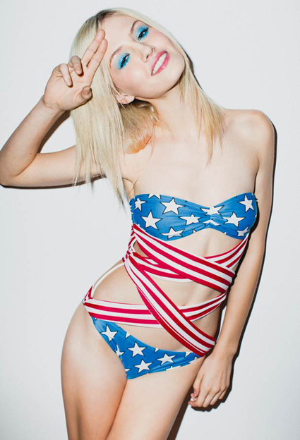
RICHARDSON X FUCK THIS LIFE
An exclusive collaboration with the zine; Fuck This Life. The front graphic is a high-quality, full-color, direct-to-garment print which maintains the look and style of the zine itself.
The back graphic is a water-based print which has a super soft touch.
There are limited quantities available in sizes M-XL
www.richardsonmag.com
Posted by Exit 26/03/2012
UMBRO X PALACE SKATEBOARDS
London skate brand Palace got together with sports brand Umbro. Palace put their spin on some Umbro classics as part of the limited edition capsule collection. “The Palace skate team are all massive football fans, and were particularly keen to get involved with Umbro and some of the items in our archive.” Consisting of Umbro x Palace shirts, trill tops and a jacket, the collection will be released early April 2012.
www.umbro.com
palaceskateboards.com
Posted by Exit 26/03/2012
NEIGHBORHOOD S/S 2012 - LESS THAN ZERO
Neighborhood have taken inspiration from a cult classic, 1987 film, Less Than Zero. The movie centers around Julian, played by Robert Downey Jr., a character whose wardrobe of trench coats, classic shirting and Wayfarers brought him style icon status, despite his excessive lifestyle.
Using this as a catalyst, Neighborhood take a number of looks from the film and updates them in their own, unique way, with novel detailing inspired by American counter-culture and military surplus. The latest collection also includes a number of NBHD staples alongsid the latest installment in the long-running collaboration series with Fragment Design
www.neighborhood.jp
Posted by Exit 19/03/2012
NEW BALANCE CM1600 - HERITAGE BLUE
New Balance adds another style of runner from their archives in which to talk about with the CM1600. The silhouette follows the immensely popular 1500 back when it released. This particular pair comes in a striking Heritage Blue color and it is comprised out of pigskin suede and mesh. White and grey accents, and a red NB logo on the heel round out the design details.
www.newbalance.co.uk
Posted by Exit 19/03/2012
STUSSY X LOWE ALPINE GORE-TEX JACKET SUMMER 2012
After recently releasing a backpack, Stussy and Lowe Alpine are back at it for Summer 2012. This season they present a new Gore-Tex technical layer jacket in two colorways. Both colorways feature a two-tone upper design, contrasting zippers and branding on the chest and hood. The two jackets will drop in Japan on March 24th.
www.lowealpine.com
www.stussy.com
Posted by Exit 19/03/2012
SUPREME X INDEPENDENT - FUCK THE REST
For Spring/Summer 2012 Supreme worked on a capsule collection with Independent, the maker of skateboard trucks.
The capsule collection features a hoodie, a short jacket, as well as trucker caps. All pieces come in several colorways, featuring a special remixed Independent logo and the slogan of the collaboration - Fuck The Rest.
www.supremenewyork.com
www.independentskate.co.uk
Posted by Exit 12/03/2012
VISVIM KHAM BOOTS - FOLK
The vegetable tanned premium leather upper and Vibram outer sole are a few of the interesting features of the boot. The ripped denim laces are for sure the special addition on these and they definitely give the boot a very unique and refreshing look.
visvim.tv
Posted by Exit 12/03/2012
ODD FUTURE POP UP STORE - NYC
Before the sold-out OFWGKTA show at the Hammerstein Ballroom, we went down to the LES in Manhattan to check out the new Odd Future pop-up shop, where they sling self-described "ugly, tacky shit."
oddfuture.com
Posted by Exit 12/03/2012
KIM GORDON X SURFACE TO AIR
Kim Gordon in a video lookbook for Surface to Air. She’s a producer, has worked with director’s Olivia Assayas & Sophia Coppola, has exhibited paintings with Mike Kelly & Tony Oursler as well as directed music videos and is a full time mom. Her love of fashion and independent designers has lead her to collaborate with Surface to Air on a twelve-piece collection out now.
www.surfacetoair.com
Posted by Exit 05/03/2012
PAUL SMITH DENIM BROGUE
Paul Smith offers a low top oxford shoe for more casual-formal wear. The dark denim shoe features tone on tone stitching, scalloping and perforation throughout.
www.paulsmith.co.uk
Posted by Exit 05/03/2012
ADIDAS ZX 8000 SPRING/SUMMER 2012
Colorway update for the ZX 8000s, in two Spring/Summer colors. The classic runner is a great offering from the footwear brand as it is both functional, but also great to wear out casually.
www.adidas.com
Posted by Exit 05/03/2012
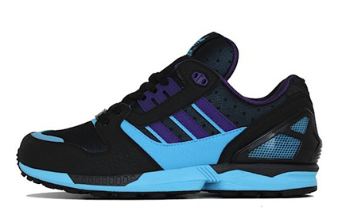
CARHARTT X 5BORO NYC COLLECTION
“The 5BORO NYC and Carhartt W.I.P. crew skated and documented their way from the founding city of 5boro, “The Big Apple” to the founding city of Carhartt, “Motor City”. Carhartt’s Pontus Alv and 5boro’s Mark Nardelli worked together laying out Pontus’ sketches and photos to create the collection, officializing this collaboration with a distinct Carhartt-colored, co-branded labeling system.
"Carhartt loves skateboarding and so does 5boro. Sure Carhartt W.I.P. is primarily a European thing – and 5boro owns a big part of its existence to the New York City roots it so greatly takes pride in – but the truth is that this geographical and cultural difference is quite easily overshadowed by what both do have in common: A genuine love for skateboarding, and a certain way to go about it.
Both Carhartt and 5boro embrace all aspects of skateboarding, with teams consisting of a wide variety of skaters, on the board and off. When 5boro offered Carhartt team member Pontus Alv a guest board the ball started rolling and a while later flights were already being booked. Once everybody got in the van together it was only a matter of time for things to fall into place, by the time we left for Detroit both crews had pretty much blended together. After coming back to NYC, Pontus and 5boro’s art director Mark Nardelli got together and sealed the deal on our newfound alliance by designing these Carhartt X 5boro items.”
www.carhartt.com
5boro.com
Posted by Exit 27/02/2012
SUPREME X SCHOTT LEATHER FLIGHT JACKET
New for the Supreme Spring/Summer 2012 Collection, the New York brand has teamed up once again with Schott. They present a leather flight jacket with fur collar in brown and black versions this season. Supreme added a floral print lining to the jackets, which makes for a great contrast.
www.schottnyc.com
www.supremenewyork.com
Posted by Exit 27/02/2012
SOLEBOX X REEBOK OMNI ZONE PUMP
Berlin based sneaker store Solebox is always busy with their latest collaborations. The sneaker collaboration will celebrate the 10th anniversary of Solebox and as usual they have some special ideas for the occasion - the Omni Zone Pump comes with build in led light function on the outer side panels.
The sneaker will drop mid April 2012, exclusively at Solebox.
blog.solebox.de
www.reebok.com
Posted by Exit 27/02/2012
THE COBRASNAKE X COLETTE X VANS ERA
Upcoming collaboration sneaker by photographer The CobraSnake, Parisian concept store colette and Vans. They worked on the Era and gave it the looks of a hamburger. The custom shoe box also features a hamburger and reads "Fast Food for your Feet".
Limited to just 60 pairs, they go on sale exclusively at colette on March 1st.
thecobrasnake.com
www.vans.com
www.colette.fr
Posted by Exit 20/02/2012
NEW BALANCE - ROAD TO LONDON COLLECTION
Dedicated to the upcoming London Olympics. Featured are the 420 and 574, each coming in different color combinations of the iconic colors of the Union Jack.
www.doverstreetmarket.com
Posted by Exit 20/02/2012
BEATLES COMME DES GARCONS TARTAN CHECK SHIRTS
New from The Beatles Comme des Garcons Collection for Spring 2012 are these tartan check shirts. Coming in classic green and red tartan check, the apples and dot pattern, used throughout the entire collection, is also printed all over the shirts.
www.doverstreetmarket.com
Posted by Exit 20/02/2012
THE NORTH FACE X EYE JUNYA WATANABE
The North Face and the eYe Junya Watanabe Comme des Garcons MAN brand combine for Spring/Summer 2012. As usual a great mix between fabric choices and colors by Junya Watanabe and technical fabrics and functionality by The North Face.
thenorthface.com
Posted by Exit 13/02/2012
BURBERRY PRORSUM TRIBAL PRINT SHIRTS S/S 2012
New from the Burberry Prorsum Spring/Summer 2012 Collection, the tribal nature of the prints, matched with the muted colors turned out really nice. Shown here are two shirts from the new line, both featuring tribal hand-drawn style graphics all-over.
burberry.com
Posted by Exit 13/02/2012
NEW BALANCE 890 SPRING 2012
Update to the wildly popular 890, the New Balance 890v2 takes “lightest” even lighter. Coming in two new colorways for Spring 2012, the shoe features an extremely light upper construction and innovative outer sole technology.
www.newbalance.co.uk/
Posted by Exit 13/02/2012
HERITAGE RESEARCH VC JACKET - COGGLES EXCLUSIVE
Heritage Research - VC, mens lightweight black Hawaiian printed Japanese cotton jacket, made exclusively for Coggles. The jacket features a single chest pocket, button front and two hip pockets. Internally the jacket is fully lined with a single chest pocket.
Heritage Research clothing has been compiled for those who desire an authentic garment from a specific period but want a contemporary cut and aesthetic. That is, a garment which in design, components, and quality matches the original garment but can be assimilated into a modern wardrobe.
The nostalgia behind these styles is what makes them attractive. They were born out of a time of necessity, designed for a specific purpose - to function and protect under adverse and challenging conditions. Since then they have become timeless fashion items, appealing to a rugged utilitarian image. Attention to authenticity, quality and history is the Heritage Research ethos.
www.coggles.com
Posted by Exit 06/02/2012
MARC JACOBS METAL HEEL OXFORD
From the Marc Jacobs Spring/Summer 2012 Collection we present a nice new shoe. While looking rather simple and classic at first, the black leather lace-up comes with a metal heel piece on the mid-sole, resulting in an interesting accent and totally new look.
www.marcjacobs.com
Posted by Exit 06/02/2012
ADIDAS OBYO JEREMY SCOTT LEOPARD ATTITUDE
New from the Jeremy Scott x adidas collaboration. Currently available in adult and children sizes are Winged Attitude USA, Leopard Attitude, Winged Attitude Denim, Leopard Attitude (Toddler), and Winged Attitude Denim (Toddler) all in a limited quantity.
www.adidas.com
Posted by Exit 06/02/2012
A.P.C. CAMO PARKA
For each season French brand A.P.C. tends to have that one camouflage piece in their collection, the same is true for Spring/Summer 2012. They have just released their new Camo Parka, coming in a classic green camo colorway all over the upper. Made in heavyweight cotton it features four front pockets, two flap pockets at the hip and two slanted chest pockets
www.apc.fr
Posted by Exit 30/01/2012
UNDEFEATED X PUMA CLYDE SNAKESKIN COLLECTION
The on-going collaboration between Puma and Undefeated on the iconic Clyde low top sneaker continues, their next project is the Snakeskin Pack. The sneakers come with premium tonal leather uppers and contrasting snakeskin logo stripes.
undefeated.com
www.puma.com
Posted by Exit 30/01/2012
SESAME STREET X XLARGE
XLarge teams up with Sesame Street on a small capsule t-shirt collection. Featuring the iconic Big Bird (who lives in a large nest behind the 123 Sesame Street brownstone) and Elmo characters of the show, both t-shirt designs come in a series of colorways
www.xlarge.com
www.sesamestreet.org
Posted by Exit 30/01/2012
LACOSTE LAB
The Lacoste LAB’s range consists of items such as surfboards, tennis goods, skis, swimsuits, board shorts, helmets, a bike, and of course, polo shirts bearing that world famous crocodile logo. Also the range includes a tech jacket and swimsuit.
www.lacoste.com
Posted by Exit 23/01/2012
DIOR HOMME SPRING/SUMMER 2012 BOOTS
Dior Homme presents a rugged, two-tone boot offering for this Spring/Summer 2012 season. The predominantly black brogue-style boots are comprised of calfskin and they feature an indented rubber platform sole that resembles a serrated blade. These boots are currently available at retailers such as colette.
www.dior.com
Posted by Exit 23/01/2012
STARCOW X REEBOK 25TH ANNIVERSARY
New Reebok collaboration with Parisian boutique Starcow. Inspired by the city of Paris and their passion for skateboarding, the outcome is rather simple looking version of the low top sneaker, yet packed with some great features at a closer look.
“We wanted to propose a classic take on the Reebok Workout shoe. With an upper as grey as the Parisian rooftops & the streets that we skate. Orange as an honor to the classic gum soles.
Since we have our heart in skate culture, maybe it wasn’t a coincidence that the shoe ended up looking something like a skate shoe…
For the materials we wanted something more technical; water-resistant suede for the upper, Thinsulate™ lining & an inner sole with cushion. Easy on the looks but performing for the user.”
The Starcow x Reebok Workout Low Plus 25th Anniversary will release along with the other retail collaborations on February 15th, 2012.
starcow.net
reebok.com
Posted by Exit 23/01/2012
CARHARTT HERITAGE CAMOUFLAGE JACKETS S/S 2012
Carhartt's new Heritage line for the new season includes the State Coat and the Settler Jacket, both coming in beautiful classic camouflage patterns this season. They come with special Heritage tags and a slightly washed out effect, perfectly working on the duck canvas used by the brand.
www.carhartt
Posted by Exit 16/01/2012
THOM BROWNE WINGTIP BROGUE TRICOLOR
From the new Thom Browne Spring/Summer 2012 Collection, we present their all new Wingtip Brogue shoe. Aside from the usual high quality uppers and heel pull tag, the most exciting addition is without any doubt the tricolor branding to the mid- and outer-soles of the shoe. An all around signature design by the New York designer.
www.thombrowne.com
Posted by Exit 16/01/2012
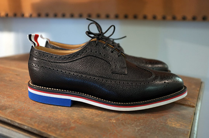
VANS VAULT X TAKA HAYASHI 2012
This Spring see's another impressive series from Taka Hayashi, who once again plays with themes culled from traditional American hand craft, mating them with Vans DNA and top notch materials. The TH Engineer Boot, TH Sierra Trek Hi and TH Sierra Trek Lo will be out for February.
www.louisvuitton.com
Posted by Exit 16/01/2012
LOUIS VUITTON X SOFIA COPPOLA CRUISE 2012
Inspired by old school LV, the cruise 2012 accessories collection is filled with bags from the luxury label's past, but are spruced up with sportswear details, like bright hues and perforations. The collection also features Saumur clutches in monogram or white, and a monogrammed beach bag with a playful touristy theme.
www.louisvuitton.com
Posted by Exit 09/01/2012
CLARKS X ROCKY MOUNTAIN FEATHERBED WALLABEES
For Fall/Winter 2012 Clarks Originals has teamed up with Japanese brand Rocky Mountain Featherbed. The brand chose to work on the iconic Wallabees boot. It comes in an all black colorway and a beige/brown colorway. Both feature suede and leather details on the upper, with a leather logo patch placed on the heel.
rocky-mountain-featherbed.com
Posted by Exit 09/01/2012
JUNYA WATANABE PATCHWORK DENIM SHIRT
From the new Junya Watanabe Comme des Garcons MAN Spring/Summer 2012 Collection, an interesting patchwork denim shirt. Coming with a dark denim base, the shirt features check pattern and paisley fabrics placed on the upper, resulting in a handmade look.
www.comme-des-garcons.com
Posted by Exit 09/01/2012
KINETICS X ADIDAS ORIGINALS SUPERSTAR 80'S ANIMAL
Japanese retailer Kinetics teamed up with adidas Originals on the Animal Pack. As part of the pack they present a leopard fur version of the Superstar 80s. Next to the leopard fur they used snakeskin on the 3 Stripes. For now a release is scheduled May 2012.
www.adidas.com
Posted by Exit 02/01/2012
ACNE MCKENZIE SUEDE JACKET
Acne’s Mckenzie flight jacket comes in on the shorter end of most aviator/flight wear. The suede blue leather finish is a modern take on the flight jacket which includes ribbed collar and cuffs and welt pockets. Available online.
acnestudios.com
Posted by Exit 02/01/2012
MARC JACOBS FOX FUR TRAPPER HATS
These flamboyant pieces of headwear are made of 100 percent fox fur (except for the white, which comes in raccoon fur) and they also come in other colors including a vivid blue, yellow, red, and white.
www.marcjacobs.com
Posted by Exit 02/01/2012
DAVID BECKHAM BODYWEAR - H&M
T-shirts, longsleeves, boxers, briefs and more are featured in the overall 9 piece debut collection. Everything is kept in white, black and grey, with only the collection’s logo tag distracting from the otherwise very clean design. The collection, dubbed "Bodywear," will be online and in 1,800 H&M stores worldwide as of Feb. 2 and is the first step in a planned long-term cooperation between H&M and David Beckham.
www.hm.com
Posted by Exit 26/12/2011
CLARKS ORIGINALS DESERT BOOT - SKA EDITION
A new version of the Clarks Originals Desert Boot. This limited edition remake is part of the British Rock Royalty Collection from Clarks Originals. Using the exact specifications that made this shoe a classic all those years ago, the black and white check is a direct reference to the Ska music movement.
www.clarks.co.uk
Posted by Exit 26/12/2011
ADIDAS ORIGINALS - JEREMY SCOTT - SHOE MEMORY TEE
New from the new adidas Originals by Jeremy Scott Spring/Summer 2012 Collection. An oversized t-shirt from the new collection. The ‘Shoe Memory’ t-shirt features an all-over photo print, showing some of the most popular sneakers that Jeremy Scott has created so far for this collaborative line with adidas.
www.adidas.com
Posted by Exit 26/12/2011
DR MARTENS 3-EYE TONAL PACK
The iconic Dr. Martens 3-Eye 1461 shoe returns in another make-up. This time around the brand has played it tonal, releasing the low top shoe in 6 monochrome colorways. The upper, lining and outer sole all come in the same colors, with all branding only being embossed, thus also not adding another color to the mix. Overall the pack includes 6 colorways.
www.drmartens.com
Posted by Exit 19/12/2011
THE BEACH TOMATO SHACK
Beach Tomato combines the best in inspiring beach editorial content with innovative technology and captivating imagery.
As a natural extension to the offering, The Beach Tomato Shack (The Shack) will now retail the very best of luxury beachwear, dressing both men and women for their stylish travels. From chic footwear to statement dresses, swimwear and sunglasses, the site will encompass all your holiday needs for a stylish stay in the sun. The Shack is the new home to the world’s coolest beach brands, hand-picked from the newest need-to-know designers and the classics we love.
With over 50 brands available online, The Shack showcases the most desirable summer looks, from labels such as Chloe, Mawi and Roksanda Ilincic, available all year round. Menswear collections from brands such as Sergio K, Polo Ralph Lauren and luxury swimwear label Robinson Les Bains will offer men the perfect holiday wardrobe in one quick click. Womenswear exclusives from emerging labels, Mungo Gurney, Tosca Delfino and Miguelina.
www.thebeachtomatoshack.com
Posted by Exit 19/12/2011
LOUIS VUITTON ACE SNEAKER SPRING/SUMMER 2012
New from the Louis Vuitton Spring/Summer 2012 Men’s Collection.
This sneaker comes in both colorful leather options and in a mix of leather and the classic Vuitton Damier canvas. Easy to wear and will especially look nice with shorts. Also available a red leather colorway.
www.louisvuitton.co.uk
Posted by Exit 19/12/2011
LDRS1354 X ADIDAS FORUM MOCCASIN MID
Last November, Leaders 1354 were given the task of making the Adidas Forum their own. The first permanent settlers in Chicago were the Potawatomi, so they took the Forum and mixed in a Native American theme with it. With that theme comes a few new twists to the Fourm: moccasin fringe on the heel (that’s also removable), zig zag stitches, and premium leather laces. These will be available Saturday Dec. 17th in store and their webstore.
www.adidas.com
www.leaders1354.com
Posted by Exit 12/12/2011
ALEXANDER MCQUEEN SKULL POLKA DOT SHIRT
For Spring/Summer 2012 Alexander McQueen present a nice new shirt, featuring a large skull design all over the front, entirely made out of polka dots, thus matching with the rest of the shirt
www.alexandermcqueen.com
Posted by Exit 12/12/2011
XLARGE X MADFOOT!
Japanese brands XLARGE and MADFOOT! have linked up to present a capsule collection this season. This small gamut gathers around both entities’ affinity for bold and colorful design themes as seen on the omnipresent leopard prints. In two colorways, namely brown and green, the animalistic prints are applied on the lining of the stadium jackets, New Era caps, and all over the upper portion of the high top sneakers. Limited to 100 quantities
www.xlarge.jp
www.madfoot.jp
Posted by Exit 12/12/2011
VISVIM TABI SASHIKO-FOLK SHOES
The Tabi Sashiko-Folk is a play on more traditional Japanese footwear, featuring a split-toe design. The upper is made of a premium suede with most of being covered in embroidery. The Japanese brand clearly shows in this release their deep knowledge and drive to release highly sophisticated and detailed product.
visvim.tv
Posted by Exit 05/12/2011
JIL SANDER PYTHON PRINT T-SHIRTS
Upcoming Jil Sander Python Print T-Shirts for Spring/Summer 2012. These come in overall three colorways.
www.jilsander.com
Posted by Exit 05/12/2011
ADIDAS OBYO JEREMY SCOTT JS WINGS - AIR FORCE FLAG
Releasing in March of 2012, the “Air Force Flag” Pack highlights a pair of Wings 2.0 variations, each adorning a patriotic scheme — one blue and white and one red and white. The makeups pull inspiration from the American flag, as you will note one option featuring stars and the other, stripes.
www.adidas.com
Posted by Exit 05/12/2011
NEW BALANCE M574 - PAUL BUNYAN
New Balance dishes out a nice themed Made in America M574 that referrs to the popular American Tall Tale about the lumberjack known as Paul Bunyan. This predominantly brown shoe features a gums sole, red laces and hits around the heel, plaid lining, and the letters “USA” emblazoned on the back of the heel.
www.newbalance.com
Posted by Exit 28/11/2011
ORIGINAL FAKE DUFFLE COAT
Original Fake has released a new duffle coat this week. The coat comes in navy and black wool versions with nice leather details and a graphic element embroidered on the lining. The jackets are now in stock in the Original Fake online store.
www.original-fake.com
Posted by Exit 28/11/2011
DUFFER OF ST GEORGE - GOLDINGS HI TOP
These hi top trainers come in a black leather and woven textile upper and features quilted side panels and tongue with branded eyelets, plus a padded ankle cuff and tan leather accents seen throughout. Other elements include embossed duffer of st george logo on the tongue and chunky midsole.
thedufferofstgeorge.com
Posted by Exit 28/11/2011
SUPREME X THE NORTH FACE 2011
Supreme will be releasing two new styles of The North Face, the Nuptse Down Jacket and Rolling Thunder Bag. The Nuptse Down Jacket features a printed water resistant nylon shell, mini ripstop weave with 700 Goose Down Fill. The Rolling Thunder Bag features a printed shell and a large main compartment with internal compression straps and top zip mesh pocket. Both items will come in three different colorways exclusively made for Supreme.
www.supremenewyork.com
thenorthface.com
Posted by Exit 21/11/2011
CARHARTT X UNIFORM EXPERIMENT
The Carhartt x uniform experiment Capsule Collection will see a select global release this week. The collection consists of a new take on a Carhartt hunting coat, The Acrylic watch beanie, the Bronco pant, the Double knee pant and the Carhartt vest. Each piece comes with a series of nice details added by the Japanese brand, including prints, special materials and more.
www.carhartt.com
uniformexperiment.jp
Posted by Exit 21/11/2011
GORILLAZ X CONVERSE CHUCK TAYLOR ALL STAR
Launching in February 2012, the styles from the collection combine the iconic Chuck Taylor All Star silhouette with the band’s legendary graphic images. Award-winning designer and Gorillaz co-creator Jamie Hewlett has designed exclusive prints incorporating elements from their groundbreaking artwork, melding their diverse backgrounds and unique influences to create a revolutionary collection. The Gorillaz collection contains four different looks inspired by the band, including a military-inspired camouflage print taken from the cover of their self-titled debut. All shoes from the collection contain a Gorillaz heel tab and hang tag with additional details on the product.
www.converse.co.uk
gorillaz.com
Posted by Exit 21/11/2011
UNIFORM EXPERIMENT FUR PATTERN DOWN BLOUSON
Uniform experiment will release this week the Fur Pattern Down Blouson. Coming in two colorways, the down jacket features an all-over fur print, making it look like the coat is covered in fur.
uniformexperiment.jp
Posted by Exit 14/11/2011
THE NORTH FACE BALLARD BOOT
The North Face 6″ Ballard Boot, in addition to being easy on the eyes, the boots feature HydroSeal waterproofing, so you can stomp around in these guys in a torrential downpour.
thenorthface.com
Posted by Exit 14/11/2011
YOHJI YAMAMOTO - THIS IS MY DREAM
Notoriously private Japanese fashion design icon Yohji Yamamoto lets his guard down in an exclusive, intimate short documentary film about life and the creative process, from Tokyo to New York.
A perfect emblem of Yamamoto’s drive for innovation, the Y-3 label -one of eight distinctive lines the designer oversees- has created a new category in fashion since its introduction in 2002. Born out of a desire to merge Yamamoto’s craftsmanship with adidas’ technical prowess, Y-3 has come to be recognized as the future of sportswear, and it is the backdrop against which the film unfolds.
The documentary tracks Yohji Yamamoto and the global team working on the collection, casting, styling, show production, PR and communication for a short period of time during the Summer and early Autumn of 2009. Beginning with the finalization of the collection and styling for the show in Tokyo, followed by his arrival in New York City to oversee the final touches for the presentation of Y-3’s Spring/Summer 2010 collection, the documentary turns an intimate eye on Yamamoto during fittings, model castings, guitar-playing, philosophical musings, and interactions with his staff and the global team bringing his ideas to life.
thisismydreamthefilm.com
Posted by Exit 14/11/2011
KOZIK X PUMA - SMOKING BUNNY SUEDE PACK
Artist Kozik gets together with Puma to collaborate on the iconic Suede low top sneaker. Known for his Smoking Bunny character, the artist decided to with the theme and incorporated the character into the pack. You now find the Smoking Bunny on the heel, on the in-sole and on a special metal hang tag, as well as the dust bag of each sneaker. Overall the pack consists of three colorways of the sneaker.
fkozik.com
Posted by Exit 07/11/2011
A BATHING APE X EBBETS FIELD FLANNELS JACKET
Ebbets Field Flannels has left its mark on a number of collaborative efforts with fashion brands in past months. The most recent is this varsity style jacket alongside Japanese brand A Bathing Ape. Named after the infamous field located in Brooklyn, Ebbets Field Flannels contributes a true heritage design to each piece manufactured. For this item, a navy/red/cream colorway was incorporated with ribbed cuffs, neck and trim. A bold crest is featured on the rear of the jacket to match the smaller insignia on the front breast.
www.ebbets.com
Posted by Exit 07/11/2011
RUN DMC x ADIDAS SUPERSTAR 80S - MY ADIDAS
Celebrating Run DMC’s song ‘My adidas’, which came out 25 years ago, the two present this special adidas Superstar 80s ‘My adidas’ commemorative shoe. The sneakers come in their classic white/black combination in premium leather and feature numerous hints at the history of the band. 1986 is embroidered on the heel, and a cool gold rope chain is placed as a lace lock on the sneakers. The sneaker will release in very limited quantities on November 11th, 2011.
www.adidas.com
Posted by Exit 07/11/2011
STUSSY X LEVI'S BLUE SUNDRIES 2011 CAPSULE
Not new to the collaboration game and also not to each other, Stussy and Levi’s once again team up for a small capsule for Holiday 2011. This season the collection includes Work Pants, Regular Fit Straight Denim, Sta-Prest chinos, 1st Trucker Jacket, a Chambray work shirt and a Trucker Vest. The theme of the collection is ‘Blue Sundries’, with royal blue accents featured on almost all pieces of the line.
www.stussy.com
levi.com
Posted by Exit 31/10/2011
DAVID LYNCH FOR SUPREME T-SHIRT COLLECTION
Supreme will be releasing five new t-shirt designs. The group will include two Tees from film Director David Lynch. Mr Lynch is an artist and the Director of such films as Eraserhead, Blue Velvet, and Mulhulland Drive, amongst many others. Included in the group is a drawing from Mr. Lynch, as well as a still from the film Blue Velvet.
The release will also include an original Tee from Harmony Korine for Supreme.
davidlynch.com
www.supremenewyork.com
Posted by Exit 31/10/2011
ORIGINAL FAKE X PEANUTS SNOOPY T-SHIRT
With the Snoopy ‘Kaws Version’ vinyl toy, Original Fake and Peanuts also present a Halloween t-shirt for Holiday 2011. The t-shirt comes in three colorways and will be released along with the toy on October 31th, 2011.
www.peanuts.com
www.original-fake.com
Posted by Exit 31/10/2011
THE NORTH FACE PURPLE LABEL FLEECE COLLECTION
The North Face Purple Label has just released for Fall/Winter 2011 a new fleece collection. Using interesting all-over patterns and patchwork designs, they offer everything from jackets, vests, to neck warmers, bags, shorts and blankets. These are all great pieces for layered outfits this season and they do not only look great, but also function well and will keep you warm.
thenorthface.com
Posted by Exit 24/10/2011
ADIDAS ORIGINALS BY JEREMY SCOTT - POLKA DOT BOOT
This latest model is a very traditional hiking boot that would fail to raise nary an eyebrow on the trail if it weren’t for the mustard yellow polka dots appliquéd throughout the upper. In addition to that particular stylistic flourish, the boots are built with premium suede, with padded collar, welt lug sole and red laces.
www.adidas.com
Posted by Exit 24/10/2011
CROOKED TONGUES X NEW BALANCE 1500
The New Balance broke the mould on its debut in late 1988, with the composite materials in the midsole making it one of the most resilient and technically advanced running shoes ever made - the ENCAP-midsoled, triple-density Evathane padded, performance masterpiece has been reworked by us for autumn in UK-made form courtesy of the Flimby factory, homaging the black and orange makeup from the Crooked Tongues 576 quartet back in 2004 (the first ever Crooked collaboration).
www.crookedtongues.com
Posted by Exit 24/10/2011
BAPE STORE LONDON 9TH ANNIVERSARY
The Bape Store London is celebrating its 9th anniversary. For the occasion the brand produced an exclusive t-shirt and a Shark Hoodie, featuring the exclusive London camouflage pattern on the hood. The t-shirts and hoodie will be released exclusively at the Bape Store London on October 17th.
bape.com
Posted by Exit 17/10/2011
ADIDAS OBYO JEREMY SCOTT 2NE1 JS WINGS
Designer Jeremy Scott recently fell in love with the 2NE1 girls, and so he dreamed up this version of the adidas Originals JS Collage Wings shoes. Vivid colors and vibrant tones collide with edgy collages, faux fur details and Scott’s legendary wing design, creating a signature 2NE1 sneaker.
2NE1 is an iconic female girl group, who stands at the very front of the uprising Korean pop culture wave, which is spreading throughout Asia and increasingly around the world. 2NE1 not only has a reputation as being one of the top acts in Asia, but also as leading fashion icons.
www.adidas.com
Posted by Exit 17/10/2011
FRED PERRY FALL/WINTER 2011 OUTERWEAR
Two solid looking jackets have released from the Fred Perry Fall/Winter 2011 Collection. The drop includes the Lowland Parka and the Pursuit Jacket. Both feature nice leather details and check plaid linings, making them easy to wear everyday pieces, while standing out, due to their good choice of color.
www.fredperry.com
Posted by Exit 17/10/2011
CARHARTT X BURTON FALL/WINTER 2011
For the second time Carhartt and Burton get together and present their latest collaborative outerwear for Fall/Winter 2011-2012. Once again the technical performance of Burton is merged with utility-driven workwear looks from Carhartt. This season they present a jacket and matching pants, coming in the signature Carhartt duck canvas color, yet featuring a double layer Gore-Tex Performance Oxford shell. The jacket is modeled after the the Carhartt ‘Traditional’ jacket and the pants after the ‘Single Knee’ pants.
Available in either brown or black, the jackets and pants are available from today at Carhartt stores and select retailers.
www.carhartt.com
burton.com
Posted by Exit 10/10/2011
ADIDAS ORIGINALS FOR NOEL GALLAGHER 72 NG
Adidas Originals and Noel Gallagher team up on the Trainer 72 sneaker. Being a long time adidas collector, Gallagher was inspired by his personal archive for the sneaker, which comes in white leather with royal blue Stripes and gold foil print detail on the tongue. The collaborative Training 72 NG’s release will coincide with the release of the debut album from Noel Gallagher’s High Flying Birds which will hit stores in the UK on October 17.
www.adidas.com
Posted by Exit 10/10/2011
JEREMY SCOTT X SWATCH FALL/WINTER 2011
After a successful first line, Jeremy Scott continues to work with Swiss watch maker Swatch and presents his new Fall/Winter 2011 Collection. The new line includes 4 watches – several wrist watches with safari and other colorful designs, as well as a heart shaped pocket watch.
www.swatch.com
Posted by Exit 10/10/2011
MARRIED TO THE MOB FALL 2011
Married to the Mob presents the second delivery of their Spring 2011 collection. The offering consists of graphic tees for both men and women, with both past favorites (such as Supreme Bitch and My Girls Rock Balenciaga…) as well as new designs.
mttmnyc.com
Posted by Exit 03/10/2011
A.P.C. VINTAGE SHEARLING LEATHER BLOUSON
New from the A.P.C. Fall/Winter 2011 Collection. The Vintage Shearling Leather Blouson features a soft suede upper and a shearling fur lining, sure to keep you warm in the coming months. This is certainly a jacket that you need to wear a couple of seasons to add some character to it. But if the French brand keeps its promises on quality, the jacket will only get nicer with time.
www.apc.fr
Posted by Exit 03/10/2011
EXIT X ADIDAS X YEAH ITS SHYY - BEHIND THE SCENES
Adidas Originals and EXIT magazine have collaborated with Cheyenne Davide ('Shyy') showcasing a series of photographs featuring the adidas Originals womenswear AW11 collection.
This behind the scenes film taken during a 12-page editorial shoot by Stephen Toner Editor-in-Chief of EXIT magazine - with styling by Sam Ranger (Fashion Director of EXIT) and Shyy.
With a selection of the models street cast by
Shyy and including some of the many followers of her blog.
www.adidas.com
Posted by Exit 03/10/2011
COLETTE X MERRELL WILDERNESS BOOTS
For their 30th anniversary, Merrell reissues the iconic 1981 Wilderness boot model in collaboration with colette. Numbered in a limited edition of 30 copies, the model shoe brings on hits of colette blue, while keeping things clean, classic and functional. Available October 2011.
www.colette.fr
www.merrell.com
Posted by Exit 26/09/2011
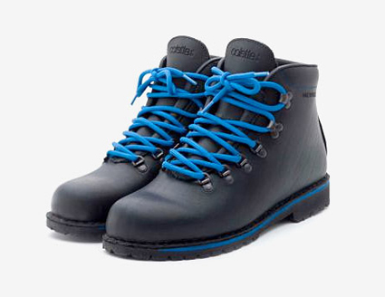
VANS X SUPREME - FLIES PACK - SK8 HI AND ERA
For Fall 2011 Vans and Supreme hook up once again and have announced the Flies Pack. Consisting of the Sk8 Hi and the Era, each sneaker comes in three colorways, featuring a mixed suede/canvas upper with a flies all-over print being featured on the canvas panels. Furthermore a Supreme print has been placed in the heel.
The sneakers will be available in-store in NY,LA,London and online on September 29th and will be available in Japan on October 1st.
www.supremenewyork.com
Posted by Exit 26/09/2011
QUBIC X ALL BLACKS X ADIDAS - ALL HEROES CAMPUS 80S
In an interesting collaboration, New Zealand store Qubic teams up with rugby team All Blacks and adidas Originals on the Campus 80s.
“A limited run of 100 all black Campus 80s bearing the famous NZ silver fern on the heel and a crimson Qubic insole, this is the first ever All Blacks release for adidas Originals. Taking things to the next level, 15 super-limited pairs encased in a steel carry box will be available first come, first serve at Qubic on Friday 23rd of September,with the remaining 85 pairs dropping instore and online that same day. Each pair of All Heroes Campus 80s also comes with a pack of limited edition collector cards by NZ comic artist Elliot F. Stewart which depicts All Black players Sonny Bill Williams, Dan Carter, Jonah Lomu and Liam Messam flexing some superhero muscle.”
qubicstore.com
www.adidas.com
Posted by Exit 26/09/2011
XLARGE X LOWE ALPINE TRIPLEPOINT PARKA
In time for the rainy days of the year, XLarge presents a collaboration with Lowe Alpine and presents the Triplepoint Stretch Parka. The parka comes in black, purple and pink, featuring some nice technical details, while keeping the branding overall simple. The contrasting linings are especially nice on the parka.
www.xlarge.com
www.lowealpine.com
Posted by Exit 19/09/2011
NEW BALANCE ML574
New Balance release an updated version of their ML574 silhouette. A staple retro model to the footwear company for many years now, the shoe is given an updated color adaptation combining a mixture of neutral mustard yellow, muted green and navy blue. To partition the solid-colored upper, New Balance added a panache of orange to the tongue label, lower midsole, and within the grid pattern lining the toe and sides of the shoe.
www.newbalance.co.uk
Posted by Exit 19/09/2011
ADIDAS OBYO JEREMY SCOTT JS WING CAMO
Jeremy Scott's latest iteration of his world famous JS Wings is set to take flight. The all-camo upper, orange-lined, black-soled creation from the mind of the mad genius Jeremy Scott.
www.adidas.com
Posted by Exit 19/09/2011
STUSSY X UNDFTD X THE NORTH FACE BOOT
The three-brand collaboration between Stussy Deluxe, Undefeated and The North Face has come at no better time as the 2011 fall/winter season gets underway. The ”Back-to-Berkeley” boots are a mid cut design made with a nubuck suede upper and nylon specifications. The classic silhouette takes on a new design with these three contemporary brands reworking today’s outdoor style. Company details include the iconic Stussy Deluxe purple dot, UNDFTD tags, and The North Face branding on the sides and tongue
undftd.com
www.stussy.com
Posted by Exit 12/09/2011
KASINA X REEBOK X DOOLY PACK
Korean retailer Kasina gets together with Reebok on the ‘Dooly The Little Dinosaur’ Pack. The iconic Korean animated film was created in 1983. Inspired by some of its main characters, Kasina created three sneakers for the pack – the Court Victory Pump ‘Dooly’, the Phase 3 Runner ‘Michol’ and the Top Down ‘DDochi & Douner’.
reebok.com
Posted by Exit 12/09/2011
FRED PERRY X THE SPECIALS
Following on from the success of their 2009 collaboration, Fred Perry have teamed up with seminal band The Specials once again to create two new shirts that stay true to the band’s ethos of ‘Black and white unite.’
reebok.com
www.thespecials.com
Posted by Exit 12/09/2011
UNDEFEATED X PUMA NYLON RIPSTOP CLYDE
The newest edition to Puma’s collaboration with Undefeated is a set of Nylon Ripstop Clydes (NRC’s) that hit stores this Saturday, September 10th. This simple military twist to the PUMA Clyde comes in four wearable colors for fall.
www.puma.com
Posted by Exit 05/09/2011
ADIDAS ORIGINALS CAMPUS 80S - BACK TO CAMPUS
This fall adidas Originals is re-releasing the iconic Campus 80s sneaker with a “Back to Campus” pack in exclusive collegiate colorways. The Back to Campus 80s collection includes three unique models, each inspired by school spirit coinciding with Georgetown University (exclusive to Majors), the University of Texas (exclusive to Nice Kicks) and Stanford University (exclusive to Shoe Biz).
www.adidas.com
Posted by Exit 05/09/2011
BAPE X STAR WARS T-SHIRT COLLECTION
A Bathing Ape has announced today their new collaborative t-shirt collection with Star Wars. Iconic characters from the movie series are mixed with trademark Bape characters and graphic styles. The collection is overall comprised of 6 t-shirts, each coming in several colorways.
bape.com
Posted by Exit 05/09/2011
ADIDAS ORIGINALS DAVID BECKHAM FOREST HILLS MID
The Forest Hills Mid was updated for the Fall/Winter 2011 season by adidas Originals, David Beckham and Undefeated founder James Bond. The iconic adidas silhouette is updated with a new mid-cut upper and neoprene liner. Hitting stores for August 2011 in white or black.
www.adidas.com
Posted by Exit 29/08/2011
BAD BOY RECORDS X SUPREME BIGGIE COLLECTION
In Supreme’s latest collection is an instant-hit collaboration with Bad Boy Records set to serve as an homage to the late and great Notorious B.I.G. Featuring a classic screen-printed box T-shirt as well as a keychain, the collaborative set highlights the famous image of Keithroy Yearwood, an afro-crowned baby randomly cast into history as the cover image for Biggie’s Ready to Die. Sure to be one of “those” iconic Supreme tees that will sell out swiftly and without abandon.
www.supremenewyork.com
Posted by Exit 29/08/2011
UNDEFEATED LAS VEGAS FALL/WINTER T-SHIRTS
“What happens in Vegas stays in Vegas,” as Undefeated reps for the Sin City with an exclusive set of tees. The T-shirts use famous Vegas themes that vary from “Welcome To Play Dirty Undefeated” to an ace of spades featuring the brand’s 5 Strikes signature logo. The collection of Undefeated Las Vegas tees will be available starting August 29th only at their Las Vegas chapter store.
undefeated.com
Posted by Exit 29/08/2011
G-STAR RAW BY MARC NEWSON AW11
Highlights in the collection include the Reversible Puffer Bodywarmer in Capsule Canvas, featuring one side in Blazing Orange; while the other side comes in Dark Navy. The Inside-Out Shooting Star R Sweat crafted from Canadian Sweat in Cloud Heather features a distinctive, large chest graphic and a high quality (but non-reversible) interior. The New Army Pant is crafted from ultra-comfortable and hard-wearing Flight Twill in Bronze Green, with main pockets and large-volume pockets on each thigh.
www.g-star.com
Posted by Exit 22/08/2011
NEW BALANCE 574B SHEARLING FALL 2011
Looking to drop for a September 2011 release the hybrid shoe beefs up the classic 574 sneaker with shearling lining and boot laces in three outdoor-inspired colors.
www.newbalance.com
Posted by Exit 22/08/2011
ADAM KIMMEL X CARHARTT FALL/WINTER 2011
Adam Kimmel has fused some of his favorite colors and styles with the manufacturing and looks of heritage workwear brand Carhartt in this collection. We love the details and especially the dark blue tone that the designer exported into the line. The plaid lined denim shirts and cashmere beanies are also solid items. The classic Adam Kimmel blazer, this time produced by Carhartt is probably the best bet in the collection and something that should not be missed.
www.adamkimmel.com
Posted by Exit 22/08/2011
FRED PERRY ORIGAMI BLANK CANVAS
The Fred Perry Origami Blank Canvas was developed after it was discovered that there is a subculture of artists in Japan that specialise in ‘fashion origami’ with a large focus being on the polo shirt. Fred Perry began investigating the paper conventionally used within the Japanese art form and found that traditional patterns were regularly used. Three of these have been injected into the Blank Canvas range as prints on the shirts, and include the cherry blossom, polka dot and fans.
www.fredperry.com
Posted by Exit 15/08/2011
ADIDAS POP-UP SHOP - LONDON 2012 COLLECTION
To celebrate one year to go to the London 2012 Olympic Games, official sportswear partner adidas have created a temporary pop-up shop at Westfield London to showcase their latest London 2012 collection.
Visitors to the pop-up shop will need to keep their eyes open as they may be greeted by one of their Olympic sporting heroes as adidas is expecting to see a few famous sporting faces pop down over the period.
Further collections are planned over the next year as the excitement builds to the London 2012 Olympic and Paralympic Games.
www.adidas.com
Posted by Exit 15/08/2011
UNDFTD X ADIDAS ORIGINALS TOP TEN HI B-SIDES
Not only the Bape Superstar returns, but adidas Originals will also present a ‘B-Sides Edition’ of the Undefeated Top Ten Hi. The new one is basically a flip on the original edition and features a pebble leather upper with white stripes and gold details. The sneaker will be released August 2011, with more information to follow.
www.adidas.com
Posted by Exit 15/08/2011
FRED PERRY X SIR PETER BLAKE
Using the M12 Fred Perry shirt as a base, British artist Peter Blake has added his personal touch to our traditional styling details to create this unique blank canvas design. Made in England, this soft combed cotton pique shirt features wider tipping running along the textured flat knit collar and cuffs. The shirt's body has a classic fit, and features two sewn-on badges alongside hand screen printed icons, referencing the artist's renowned use of pop iconography. 'Fred Perry 2011' has been stencilled along the bottom hem, alongside a print of Peter's signature.
www.fredperry.com
Posted by Exit 08/08/2011
RALPH LAUREN PURPLE LABEL ALLIGATOR BAG
Alligator at $24,000 from Ralph Lauren’s Purple Label. “Ralph Lauren Purple Label black alligator weekend bag with a detachable shoulder strap, metal D-rings and zips, a padlock and two internal pockets. The ultimate travelling companion.”
www.ralphlauren.com
Posted by Exit 08/08/2011
CONVERSE SHOOTER FIRST STRING IV OX
Converse Shooter First String IV Ox comes in two colourways. The low-top silhouette is great for the hot summer months, but also features a plethora of technical specifications that help provide the wearer with plenty of cushioning. The shoe comes in two colorways, each of which features a canvas construction along with a leather heel stripe.
www.converse.co.uk
Posted by Exit 08/08/2011
FRED PERRY LAUREL WREATH VENTILE JACKET
“Ventile first came about in the late 30’s when the British government required a protective clothing fabric to develop efficient garments for the RAF. The fabric is entirely natural product and is made from 100% cotton. Densely woven in the UK from the finest, long staple fibre it offers excellent weatherproofing and durability.”
www.fredperry.com
Posted by Exit 01/08/2011
MULBERRY ROCKLEY AND HENRY BAGS
Mulberry catches our eye with two collection of satchels and duffles. The Henry and Rockey bags move between nylon (the gym bag), brown leather and a strong gunmetal leather finish on their laptop satchels.
www.mulberry.com
Posted by Exit 01/08/2011
RALPH LAUREN PURPLE LABEL CASHMERE CARDIGAN
The purple label from Ralph Lauren delivers this cashmere cardigan. It is a double-breasted cable knit affair in green with ten buttons, pockets… the works
www.ralphlauren.com
Posted by Exit 01/08/2011
ORIGINAL FAKE X SUPREME T-SHIRT
The Original Fake gets together with Supreme on a t-shirt, featuring the name of the iconic New York skate brand, written out in letters created in Kaws’ signature style.
www.original-fake.com
Posted by Exit 25/07/2011
TOM FORD SINGLEMAN EYEGLASSES
The “Singleman Model” from Tom Ford looks to represent a certain classic eyewear look from Mr. Ford’s 2009 movie, A Single Man. Rather than black frames, these are more in the direction of tortoise.
www.tomford.com
Posted by Exit 25/07/2011
GIVENCHY ROTTWEILER SERIES FALL/WINTER 2011
Givenchy is certainly on a run these past seasons and they continue to impress with the use of interesting graphics, materials and styles. THe most anticipated graphic apparel from their new Fall/Winter 2011 Collection, are without a doubt the ‘Rottweiler’ sweaters and t-shirts, featuring the face of the dog enlarged on the front or sleeves.
www.givenchy.com
Posted by Exit 25/07/2011
LEVI'S COMMUTER SERIES
Tailored to the demand of urban cyclists, Levi’s will soon be launching the Commuter Series. The first drop includes the 511 Commuter Skinny Jeans and the Commuter Trucker Jacket.
The jeans have a U-lock storing waistband, and the waistband is raised to ensure against the ever unwanted crack attack. The jacket also features a slight tail for maximum coverage while hunched over, and has touring pockets in the back.
levi.com
Posted by Exit 18/07/2011
ANDRE X SAINT JAMES NAVEL II STRIPED SHIRT
The updated ‘Naval II’ shirts will be unveiled at The Standard New York on Bastille Day and feature Andre’s pink “Mr. A.” character on the chest and a red and blue sailor’s hat on the sleeve (representing NY.) A limited edition of the shirts will be sold at The Standard, New York shop and ShoptheStandard.com, as well as Opening Ceremony in New York and Los Angeles, and Colette in Paris.
www.monsieura.com
Posted by Exit 18/07/2011
NEW BALANCE 1400
Two colorways of the New Balance 1400 have dropped. The seamless synthetic/mesh upper is complemented with the innovative REVlite midsole, which provides premium responsiveness and durability at a 30% lighter weight than other foams with comparable performance. The weight of the sneaker comes down to only 200 grams.
www.newbalance.co.uk
Posted by Exit 18/07/2011
UNDFTD SHOE LACES
UNDFTD is offering a series of shoe laces in 42″ and 54″ lengths. Available Now at all UNDFTD chapter stores and on July 8th in the UNDFTD web store.
undftd.com
Posted by Exit 11/07/2011
BAPE X ADIDAS ORIGINALS B-SIDES SUPERSTAR 80S
As part of their ‘B-Sides’ Fall/Winter 2011 Collection, the iconic Bape x adidas Originals Superstar 80s comes back in a new colorway and will without any doubt sell out in no time. Featuring an off-white suede upper with navy leather details on the side-panels and the heel, the sneaker comes with the Bape head embossed on the heel, as well as placed on the tongue tag. Furthermore the sneaker has the Bape camo pattern on the insole and written ‘Trefle en Chevrons et Bape’ next to the three Stripes.
www.adidas.com
Posted by Exit 11/07/2011
BALENCIAGA MESH & LEATHER SNEAKERS
Balenciaga has released a new pair of leather-lined sneakers with a black and white mesh and grey leather upper and a blue patent leather tongue. “The contrasting mix of leathers – patent, suede, scored and printed – give these sneakers a luxurious edge.”
www.balenciaga.co.uk
Posted by Exit 11/07/2011
Y-3 LONDON STORE OPENING
The store’s interior, featuring industrial materials and an ultra-clean aesthetic, perfectly reflects the brand’s global signature retail concept. The 200 square metres, two floor space has been customized to reflect a modern aesthetic with clean lines and great depth.
Adidas and Yohji Yamamoto pioneered the fusion of sport and style in 2001 with their initial collaboration of exclusive footwear styles designed by adidas for Yohji Yamamoto's signature line. Subsequently Y-3 launched in October 2002 with the Spring/Summer 2003 season in Paris. The London store opening marks ten years of this successful partnership.
www.adidas.com
Posted by Exit 07/03/2011
MAISON MARTIN MARGIELA DENIM RIDERS JACKET
A new denim riders jacket has been released from Maison Martin Margiela for Spring/Summer 2011. The raw denim jacket comes with several zip pockets and other nice details. Yet what we like most is, that the details are kept very subtle, such as the tonal buttons.
www.maisonmartinmargiela.com
Posted by Exit 07/03/2011
PUMA X ALEXANDER MCQUEEN EAGLE SNEAKERS
From the on-going collaboration between Puma and Alexander McQueen comes this pack of “Eagle Print” high top sneakers. Bold and colorful eagle wing prints have been placed on black and white nylon/leather uppers of the sneaker. The transparent logo stripe is an interesting design element, not distracting from the eye catching design.
www.alexandermcqueen.com
Posted by Exit 07/03/2011
DICKIES X CONVERSE CHUCK TAYLOR ALL STAR
For Spring 2011, Converse and Dickies have paired up by blending the two with simple, clean versions of the Chuck Taylor All Star shoe featuring Dickies detailing. Converse is also unveiling the new Chuck Taylor All Star Classic Boot – a new upper inspired by the classic work boot, with moc toe detailing and a classic Chuck midsole and outsole. On all silhouettes the upper material is in a Dickies iconic twill.
www.converse.co.uk
Posted by Exit 28/02/2011
REEBOK X BODEGA AXT PUMP & NIGHT SKY
Reebok and Boston boutique Bodega continue to work together into 2011 with collaborative AXT and Night Sky make ups.
reebok.com
Posted by Exit 28/02/2011
TERRY RICHARDSON VARSITY JACKETS AND CAPS
It looks like famed photographer Terry Richardson is going into clothing. The line features a “Terry” varsity jacket in a nice red/white combo with his head and signature on the chest and “Terry” placed on the back. Furthermore he also presents “Terry” baseball caps.
www.terrysdiary.com
Posted by Exit 28/02/2011
PUMA BY HUSSEIN CHALAYAN
The Puma by Hussein Chalayan sneaker range is for sure among the most interesting to come from the German sportswear company in recent years, with most other releasing being over the top for the most part. Hussein Chalayan developed a solid range of new silhouettes, all featuring subtle to hardly recognizable branding, premium leathers and nice colorways.
www.puma.com/blacklabel/husseinchalayan
Posted by Exit 21/02/2011
LINDA FARROW X JEREMY SCOTT SUNGLASSES
The king of outrageous design, Jeremy Scott, continues his successful eyewear campaign with Linda Farrow on a few new styles for Spring/Summer 2011. New titles include Wings, Cross, and Hands – all of which are exactly what they sound like.
www.lindafarrow.co.uk
Posted by Exit 21/02/2011
CK ONE
The imagery for the campaign was captured during a multi-day shoot in New York City by renowned fashion photographer Steven Meisel, who shot the original campaign for the launch of the ck one fragrance in 1994, setting the tone for this powerful brand. The campaign imagery was filmed and all of the print images are still captures from the video footage.
The campaign’s dynamic creative brings together the men’s and women’s jeans, underwear, and fragrance categories with one unified concept featuring a cast of more than 30 distinct men and women who embody the authentic individuality that is such an inherent part of the iconic ck one brand.
www.ckone.com
Posted by Exit 21/02/2011
ADIDAS OBYO KAZUKI DARWEN SPRING/SUMMER 2011
The new adidas Originals by Originals Kazuki Spring/Summer 2011 Darwen sneaker. Inspired by a recent trip to the UK, Kazuki reworked the iconic ZX 700 running shoe into a high-top boot style in a mix of soft suede, leather and mesh. The look works well.
www.adidas.com
Posted by Exit 14/02/2011
BLACK COMME DES GARCONS X MICKEY MOUSE
From the BLACK Comme des Garcons Spring/Summer 2011 Collection we present these new Disney Mickey Mouse t-shirts. Coming in white, black and grey, the tees feature the iconic Mickey head on the front and just a small logo placement on the back.
www.comme-des-garcons.com
Posted by Exit 14/02/2011
THE HUNDREDS X SCOTT CAAN T-SHIRTS
The Hundreds introduces a limited-edition set of photo tee-shirts by Scott Caan. Recognized most for his acting portfolio, Caan is also an avid photographer, traveling the world with camera in hand to document his experiences, his relationships, and his unique perspective on life. The Hundreds by Scott Caan will be sold exclusively at The Hundreds LA, The Hundreds SF, The Hundreds NY, and thehundreds.com.
thehundreds.com
Posted by Exit 14/02/2011
ADIDAS OBYO KAZUKI ZXZ - IAN BROWN
Kazuki worked once again on the ZXZ running shoe, this timing dedicating it to musician and friend Ian Brown. A really clean looking sneaker in all black leather with gold details.
www.adidas.com
Posted by Exit 07/02/2011
LEVI'S X TOMMY GUERRERO FLANNEL SHIRT
The on-going collaboration between Levi’s Japan and Tommy Guerrero has been released. The mexican patterns that were placed on denim pants and jackets before, have now found their way onto flannel shirts. The shirts come in off-white, black and brown, featuring special shoulder patches and buttons.
tommyguerrero.com
Posted by Exit 07/02/2011
PRADA CREEPER SHOES SPRING/SUMMER 2011
The shoe overall comes in 4 colorways, including more solid brown and black versions, as well as colorful versions. The Espadrille inspired mid-sole is probably the most interesting feature on them.
www.prada.com
Posted by Exit 07/02/2011
MAC X WONDER WOMAN COLLECTION
MAC Cosmetics launches a Wonder Woman Collection. Every woman needs to remember that she bears a power that makes her in more ways than one ‘”Wonder-ful”! MAC Wonder Woman launches on February 10th, and will be available through mid April.
www.maccosmetics.com
Posted by Exit 31/01/2011
REEBOK ALIEN STOMPER - INDIANA JONES
Reebok continues to present their Alien Stomper high top sneaker in colorways and materials, inspired by movies. Just earlier today we presented the Blade Runner Pack, here is now a look at the Indiana Jones inspired sneaker. A nice mix of premium brown leather and waxed denim spread over the upper. Special branding is only placed on the tongue. The association with the film series is mostly apparent through the gradient lining, which you can also find in the Indiana Jones logo.
reebok.com
Posted by Exit 31/01/2011
DIESEL TURBO DENIM
Creating the perfect pair of vintage jeans can take years, patiently waiting for that beloved family hand-me-down or those numerous Sunday afternoons spent in trendy east London thrift stores. Diesel have come up with a solution for this problem, taking away all those unnecessary years of wear and tear and introducing a new fabric which will give you that converted vintage look in just 30 days.
The Turbo Denim technology means denim can now evolve to fit the body’s movements, adapting to the wearer’s lifestyle. It will take on the shape of a wallet, MP3 player, keys – in fact anything that you carry around in the pockets of your jeans – customising your denim garment and making it truly one of a kind!
Turbo denim is being stocked within all stores for £90.00 - Live Fast / Wear Turbo
www.diesel.com
Posted by Exit 31/01/2011
ADIDAS X PORSCHE DESIGN SPRING/SUMMER 2011
The Porsche Design Sport Spring/Summer 2011 collection marks the ninth season of the collaboration between Porsche Design and adidas.
The brand new range of technically inspired sportswear again extends to five categories:
Driving, Golf, Running/Fitness, Tennis, and Water/Snow. Each single product advances the luxury brand’s legacy of cutting-edge engineering and purist design.
www.adidas.com
Posted by Exit 24/01/2011
MARC JACOBS SNEAKERS
Marc Jacobs presents two super clean sneaker styles. Offered in black or white, high or low, the sneakers eschew all frills - besides a some subtle embossing, for a smooth, streamlined look.
www.marcjacobs.com
Posted by Exit 24/01/2011
ADAM KIMMEL HIGH TOP SNEAKERS SPRING 2011
The upcoming Spring 2011 high top sneakers by designer Adam Kimmel. The sneakers come in several leather colorways and feature a “K” logo tag on the tongue. Also they feature a tonal ankle strap and a white outer sole.
www.adamkimmel.com
Posted by Exit 24/01/2011
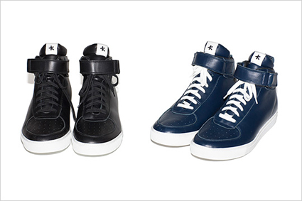
HERMES - A BAG PROPERLY PACKED
www.hermes.com
Posted by Exit 17/01/2011
FRED PERRY BRITISH COLLECTABLES COLLECTION
A bit of a retrospect on this “new” Fred Perry collection which works with the very best in U.K. heritage clothing lines. “Liberty is, of course, a British institution, with their art fabrics being used by everyone from Dior to Gucci, so they were an obvious choice to provide the fabrics. Smyth & Gibson of Belfast have been hand making luxury shirts for more than two decades.
The End product is three beautifully construction shirts, each with meticulous attention to detail. The styles echo both Liberty’s and Fred Perry’s heritage, using both oxford cloth and Liberty Art Fabrics to great effect. [They] have also worked with Guernsey Woollens to produce a Limited edition traditional Guernsey Sweater.
www.barbour.com
Posted by Exit 17/01/2011
BARBOUR 75TH ANNIVERSARY JACKET
To celebrate 75 years of their iconic International jacket, Barbour are producing 75 special limited-edition jackets taken from the original design. Created specifically for the 1936 International Six Day Trials that supplied its name, the Barbour International - in original green and later classic black, it was the jacket for competitive motorcyclists through the 1950s, 1960s and 1970s. It was worn by Steve McQueen and legendary stunt rider Bud Edkins.” The jackets will be available, in 2 finishes, box-fresh and distressed.
www.barbour.com
Posted by Exit 17/01/2011
ALIFE FOOTWEAR
Alife has released two boots and a sneaker. The Kennedy Hi is a mid top show, and is a mix of a Wallabee and a boat shoe. New this season is the Chuck Boat Hi. It looks like a desert boot on boat shoe sole and is kept very clean with no branding on the upper at all. Featuring a game card inspired logo hit on the side panel. All shoes come in two colorways
alifenyc.com
Posted by Exit 10/01/2011
VANS SYNDICATE X TOMMY GUERRERO
Vans this time has worked with American skateboarding legend and musician Tommy Guerrero, the partnership sees a reworking of Old Skool and Slip-On versions of the Decon S silhouette. Offered in monochromatic black, the shoes feature a premium perforated leather upper and subtle white stitching along the panels
tommyguerrero.com
Posted by Exit 10/01/2011
PUMA BY HUSSEIN CHALAYAN FALL 2011
Puma continues their Hussein Chalayan ‘Urban Mobility’ collection for Fall 2011 with several new sneakers, seen at Agenda. Most exciting is the model above, which expands upon some of Chalayan’s previous work in women’s fashion whereby he crafted dresses that appeared to be in motion when still. The sneaker has the same look. Wild. There’s also a tonal, premium leather, running-inspired sneaker.
www.puma.com/blacklabel/husseinchalaya
Posted by Exit 10/01/2011
ADAM KIMMEL X CARHARTT
Upcoming collaboration by Adam Kimmel and Carhartt, in which the launch collection encompasses 29 pieces, including outerwear, jeans, plaid flannel shirts and pants in moleskin or cotton twill. Accessories in the line include a duffel and tote bag as well as cotton cashmere beanies.
“Workwear could be found in all of my collections—like the jumpsuit which was inspired in part by the uniform of painters and mechanics. And as I said durability and wearability are also big staples of mine. I’ve always appreciated clothes that you can wear everyday, and I think both my brand and Carhartt supply that. While the AK product is handmade in Italy using very high-end fabric, the Adam Kimmel/Carhartt collection is made in Carhartt workwear facilities. The price point will be somewhere between Carhatt’s and my own.”
www.adamkimmel.com
www.carhartt.com
Posted by Exit 03/01/2011
JUNYA WATANABE X LEVI'S S/S 2011
Junya Watanabe continues his work with Levi’s for Spring/Summer 2011. Drawing on many maritime references this season, Junya revisits the French sailor with fresh blue and white stripe details inside the cuff of a heavily washed and worn pair of Levi’s jeans.
eu.levi.com
Posted by Exit 03/01/2011
NEW BALANCE 576 LAKE DISTRICT PACK
New Balance presents for Spring 2011 the Lake District Pack. The pack consists of three colorways of the 576 sneaker. All inspired by the beautiful Lake District, numerous details include special laces, UK flag embroidery on the heel and of course a special selection of premium materials on the upper.
www.newbalance.co.uk
Posted by Exit 03/01/2011
LOUIS VUITTON HEART COIN PURSE
New Louis Vuitton Monogram Vernis Heart Coin Purse.
The Louis Vuitton Monogram "vernis" means varnish which explains the shiny and sparkly effect of the bags.
www.louisvuitton.com
Posted by Exit 27/12/2010
ADIDAS ORIGINALS X STAR WARS - ARTIST FUSION PACK
The adidas Originals x Star Wars Spring/Summer 2011 Collection. The Artist Fusion Pack consists of both apparel and sneakers, fusing colorful graphics with classic Star Wars characters, in this case the Stormtrooper.
www.adidas.com
Posted by Exit 27/12/2010
CONVERSE X COMME DES GARCON
The Comme des Garcons famous heart logo has been seen all over the place and the recently re-stocked classic Converse Chuck Taylor collaboration shoes come in a low and high top version with either a tan or black canvas silhouette. The shoe features the heart logo on the outside and an embroidered Converse All-Star logo on the inside.
www.converse.co.uk
Posted by Exit 27/12/2010
ADIDAS ORIGINALS X STAR WARS A-15 TRACKSUIT
Here is now a look at the best apparel item to come from the collection this season – the Leather A-15 “Stormtrooper” Tracksuit. The classic adidas tracksuit gets the Star Wars remix, featuring multiple embroideries and large patches on premium white leather.
www.adidas.com
Posted by Exit 20/12/2010
HAVAIANAS X PINEL & PINEL
Havaianas have collaborated with famous luxury brand Pinel & Pinel to produce these chic and timeless Crocodile Skin flip flops. The craftsmanship and quality of these styles as well as the collaboration between these very different brands makes this a collaboration worth talking about!!
havaianas.com
Posted by Exit 20/12/2010
NEIGHBORHOOD FALL/WINTER 2010 - BLACK ICON
Neighborhood offers a look at the Fall/Winter 2010 “Black Icon” collection. Winter is nearing and you can see it in the drop, including some nice knitwear, shirts, leather jackets, new denim, beautiful leather gloves and also a few jewelry pieces.
neighborhood.jp
Posted by Exit 20/12/2010
STUSSY X DICKIES WORK JACKET AND WORK PANTS
For Fall/Winter 2010 Stussy continues to work on collaborative items with Dickies. The latest product from the partnership, includes a pair of work pants and a matching jacket. Inspired by 1940s workwear both pieces come in a military green colorway with yellow embroidery details
www.stussy.com
www.dickiesworkwear.com
Posted by Exit 13/12/2010
REEBOK X ARMANI EA7
The first collaborative collection of the two brands has been released this week and we give you a detailed look at the sneakers from the line. Fusing Armani’s fashion aesthetic and Reebok technology the outcome is pretty interesting. The line-up includes the Pump Vintage Mid, the Pump Vintage Low and the Pump 7 running shoe. We like the fact that it was not all about making fashionable sneakers, but also delivering on the technology side, at least to some extent. The first collection of the two brands, consisting of both sneakers and apparel
www.armani.com
reebok.com
Posted by Exit 13/12/2010
PAUL SMITH X GIRO BIKE HELMETS
With UK designer Paul Smith being a huge bike fan, his most recent collaboration with bike helmet company Giro comes with no surprise. The designer worked on three designs on one helmet style. The helmets all feature his signature.
www.giro.com
www.paulsmith.co.uk
Posted by Exit 13/12/2010
REEBOK X MARRIED TO THE MOB FREESTYLE
“The shoe has a suede upper in cobalt blue, pig suede lining, plus a rose gold Married to the M.O.B. logo pin on the outside of each shoe. Inside the tongue reads “We stay laced since 1982.” On the design, this time around McSweeney says she wanted a more grown and lux shoe, “The last Reebok I designed with Colette was a little more playful and I wanted to do something a little more grown up this time.” The shoe launches November 1st and can be picked up for 100 beans at Karmaloop and Michael K on the East Coast and Undefeated and PickYourShoes on the West Coast.”
mttmnyc.com
reebok.com
Posted by Exit 06/12/2010
TRUSSARDI 1911 REVERSIBLE DOWN VEST
A beautiful new down vest has released from the Trussardi 1911 Fall/Winter 2010 Collection. Featuring an all premium black leather side and one featuring heavy embroideries, you get the perfect compromise from the piece.
www.trussardi.com
Posted by Exit 06/12/2010
BURTON X TRON - LEGACY SNOWBOARD BOOT
“The exclusive new TRON: Legacy model, part of the all-new Burton Raptor boot line, blends best-in-class tech with an aesthetic that mirrors the high-tech world of TRON. Inspired by the film’s strong graphic look and feel, the boot is made to look like something out of the future, but seen through the eyes of a snowboarder back in 1982 when the original TRON film was released. A holographic treatment on the upper boot brings the futuristic feel to life, backed by electric orange and aqua color blocking and linear detailing taken right from the images of TRON: Legacy. In addition, the boot features both Burton and TRON: Legacy branding on its exterior.
burton.com
Posted by Exit 06/12/2010
PUMA BY HUSSEIN CHALAYAN HIGH TOP SNEAKER
Another sneaker from the Puma by Hussein Chalayan Fall/Winter 2010 Collection, which is without a doubt the most interesting offering currently, from the German footwear brand. The sneaker comes with two velcro straps in an all black premium leather version. It features the Puma logo embossed on the tongue. The ankle padding comes in patent leather and the Puma stripe logo is basically invisible on the side-panels.
www.puma.com/blacklabel/husseinchalayan
Posted by Exit 29/11/2010
RALPH LAUREN HAND-KNIT TOGGLE SWEATER
Ralph Lauren offers their take on the toggle sweater. “Designed in a soft blend of wool, silk and alpaca for ultimate comfort, our hand-knit sweater is finished with an intarsia-knit design and wood buttons at the neck for heritage style.”
www.ralphlauren.com
Posted by Exit 29/11/2010
COMME DES GARCONS MONCLER 365 FALL/WINTER 2010
New jackets and vests from the Moncler 365 Collection designed by Rei Kawakubo are now available from Dover Street Market. Back in black.
www.comme-des-garcons.com
Posted by Exit 29/11/2010
ADIDAS OBYO JEREMY SCOTT - GLOW IN THE DARK
After full on Reflective and Clear applications, Jeremy Scott moves forward with his third attention grabbing JS Wings (as if they weren’t loud enough) make up of the season, glow in the dark. Check your local adidas spot in the coming weeks to complete the set.
www.adidas.com
Posted by Exit 22/11/2010
BEATRIX ONG CONCEAL/REVEAL AUTUMN/WINTER 2010
The Beatrix Ong Autumn/Winter 2010 collection is based on intriguing and stimulating the mind with the concept of concealing and revealing. The campaign film stars World Pole Dancing Champion, Elena Gibson in her studio, uncovering some of Beatrix Ong's key styles of the season. Director Mark Jubber of Exit Magazine and BAMN shoots and edits the film entirely on the iPhone 4.
www.beatrixong.com
Posted by Exit 22/11/2010
ADIDAS ORIGINALS HARDLAND COLOR PACK
The new adidas Originals high top sneaker comes in 4 colorful options as part of the pack, all using multiple premium leathers on the upper, including suede, perforated leather, reptile leather and more.
www.adidas.com
Posted by Exit 22/11/2010
SUPREME FALL/WINTER
A closer look at the caps, beanies and hats from the new Supreme Fall/Winter 2010 Collection. The offering is massive. There are at least 15-20 different cap designs, featuring corduroy, leather, denim, ripstop nylon and other materials. Also they offer every cap style this season with Woolrich Wool on the upper. The earflap caps remain popular in the Supreme line-up as well.
www.supremenewyork.com
Posted by Exit 15/11/2010
LACOSTE STEALTH BROADWICK HI RGB PACK
Lacoste introduces the Broadwick Hi as part of their FW10 Stealth line. Their debut release comes by way of the RGB Pack – a three piece set of soft suede sneakers in red, green and blue with off-white EVA midsoles.
www.lacoste.com
Posted by Exit 15/11/2010
ORIGINAL FAKE HANDS OF DEATH T-SHIRT
Simultaneously with the first signing events for his book, New York artist Kaws has released under the Original Fake brand the “Hands of Death” t-shirt. The tee features the same graphic that can be found on his new Rizzoli book.
www.adidas.com
Posted by Exit 15/11/2010
ADIDAS OBYO DAVID BECKHAM GAZELLE VINTAGE MID
Upcoming adidas Originals by Originals David Beckham designed by James Bond Collection. For Fall/Winter 2010 they present the Gazelle Vintage Mid DB Leather. The mid top boot comes in a solid premium leather version with clean white outer sole.
www.adidas.com
Posted by Exit 08/11/2010
CHRISTIAN LOUBOUTIN LEOPARD SNEAKERS
Upcoming Rantus Orlato high top Leopard sneaker from the Christian Louboutin Men Fall/Winter 2010 Collection. The sneaker features different leopard patterns all over, certainly making a very bold statement. The outer sole is of course red, the signature of the French designer
www.christianlouboutin.com
Posted by Exit 08/11/2010
ADIDAS OBYO JEREMY SCOTT X-RAY TRACK SUIT
From his adidas Originals by Originals Fall/Winter 2010 Collection, designer Jeremy Scott presents the X-Ray track suit. The classic adidas track suit gets decorated with a full body x-ray skeleton print.
www.adidas.com
Posted by Exit 08/11/2010
FRED PERRY X HARRIS TWEED HARRINGTON JACKET
A premium harrington jacket from Fred Perry Laurel and Harris Tweed. “The harrington is a classic Fred Perry silhouette and this great collaboration between two of the greats of British fashion showcase it perfectly.”
www.fredperry.com
Posted by Exit 01/11/2010
ORIGINAL FAKE X LEVI'S DENIM FALL/WINTER 2010
Original Fake continues to collaborate with Levi’s as part of their new Fall/Winter 2010 Collection. They worked on a raw and a washed pair of jeans.
www.original-fake.com
levi.com
Posted by Exit 01/11/2010
Y-3 METALLIC NEO TECH COLLECTION
This Autumn/Winter 2010-11, Y-3 has produced a range of “Metallic Neo Tech” footwear pieces. Shiny metallic silver is the main colour used within this capsule footwear collection alongside accents of neon red and violet. For men the capsule collection consists of overall 4 styles
www.adidas.com
Posted by Exit 01/11/2010
SUPREME X UNIVERSAL STUDIOS COLLECTION
Upcoming collaboration between Supreme and Universal Studios. In the small capsule line The Phantom, The Creature and The Mummy are featured on Supreme hoodies and crewneck sweaters.
www.supremenewyork.com
Posted by Exit 25/10/2010
ADIDAS OBYO JEREMY SCOTT JS 3 TONGUE
Jeremy Scott brings back the JS 3 Tongue for the adidas Originals by Originals Jeremy Scott Fall/Winter 2010 Collection. While last year saw a solid black and yellow make up, this time around things are kept even simpler with a black and white palette. When you’re already rocking a sneaker this bold, bright colors are the last thing you need.
www.adidas.com
Posted by Exit 25/10/2010
DICKIES X LUKER BY NEIGHBORHOOD
As part of their Fall/Winter 2010 Collection, Luker by Neighborhood got together once again with Dickies. This season they collaborated on a jacket and matching pants. Both pieces come in blue and black, featuring woven labels by both brands and other subtle details.
www.dickiesworkwear.com
Posted by Exit 25/10/2010
ADIDAS TOP TEN - WHITE - BLACK - GREY FLANNEL
Featuring a timeless black, red and grey colourway on a white upper,
this interpretation gives more than a nod to some of the models
earlier iconic colourways.
The addition of a grey flannel material on the tongue and
padded ankle collar works with other material contrasts on
the upper like the black patent leather toecap and full grain
leather 3-Stripes with red accents.
Finishing touches include an embroidered oversized ‘O’ for
Originals on the tongue, embroidered adidas foxing running
vertically down the heel and branded ‘Top Ten’ lace eyelets that st ay
true to the spirit of the original model.
www.adidas.com
Posted by Exit 18/10/2010
ADIDAS TOP TEN - ORIGINAL COLOURWAY
This OG version features all the elements that made the shoe such a hit first time round and proudly carries the Navy, Red and White colourway that first blew up on the pine boards over three decades ago.
The full grain premium leather upper, perforated toe-box, navy
3-Stripes and padded ankle collar with a dash of red are all present
and correct.
30th Anniversary branding is presented in the form of a subt le
lace jewel that does nothing to detract from the overall appeal of
the shoe, while the ‘Top Ten’ branding on the tongue harks back to the
days when the model was sported by some of the greatest ball players
on the planet.
www.adidas.com
Posted by Exit 18/10/2010
ADIDAS TOP TEN - REMODEL
The ‘Remodel’ Top Ten takes the timeless st yling of the original
silhouett e and imbues it with a contemporary twist through the
use of modern production techniques and cutt ing edge materials.
The result is an updated take that raises the bar in terms of comfortable,lightweight durability.
Featuring a slighter slimmer profile as well as a re-worked
midsole and less padding on the ankle collar, everything on the shoe
feels a little more st ripped back.
The upper is constructed from a combination of premium leather
and a soft, pliable fine gauge mesh that sits well with the reinterpretation
of the model.
The black 3-Stripes pop out in a contrast ing welded on TPU , while
the top 3 lace holes are replaced with a one-piece eyelet system that
further contributes to the contemporary feel of the Top Ten Remodel.
Finished with an updated ‘Top Ten’ graphical tongue tag that plays
on the baller heritage of the silhouette, this is a re-edit of an icon
that’s not to be missed.
www.adidas.com
Posted by Exit 18/10/2010
A.P.C. + CARHARTT
"Carhartt is in many ways the epitomy of the endless golden west, so brilliantly portrayed by Woody Guthrie, and which has been with us for so long. Wandering towards glory, a journey which is to take you away forever, and lonely teardrops will be shed along the path.
Pioneer spirit, gold digger... to tell you the truth, I have never thought much of these myths, and I find them somewhat nauseating. Nevertheless, its uniform has always meant hitting home base for A.P.C.. I have always tried to emulate this viewpoint that, when convenience is really to the point, the outcome is genuinely beautiful.
Therefore, a collaboration between Carhartt and A.P.C. was clearly the thing to do.
Work clothes are pretty good at leading a life of their own: they’ll ramble on, talking to themselves in your wardrobe, and will always be there for you. It is also true that they speak louder once worn, dirtied, soiled, washed and dried in the open air.
www.original-fake.com
Posted by Exit 11/10/2010
ORIGINAL FAKE GRAPHIC T-SHIRTS FALL/WINTER 2010
Since Original Fake is the brand of artist Kaws, the graphic t-shirts are obviously always among the favorite pieces of the collection. Also, since all the cut-and-sew and most accessories are produced in Japan, the t-shirts are still among the most affordable pieces in the line. The artist has once again produced a strong line-up of graphics for the new season.
www.original-fake.com
Posted by Exit 11/10/2010
LACOSTE X PEANUTS POLO COLLECTION
Charlie Brown, Linus, Snoopy and Woodstock meet Lacoste in celebration of Peanuts’ 60th Anniversary. The iconic Lacoste crocodile logo is reworked, incorporating the whole Peanuts gang into a limited range of polo shirts. Lacoste x Peanuts will be available exclusively at Dover Street Market this October.
www.lacoste.com
Posted by Exit 11/10/2010
RON HERMAN X ALMOND X NEW BALANCE H574J
ALMOND are working with New Balance once again, this time pulling in L.A. retailer Ron Herman as a co-designer. The American flag is featured prominently on the H574J’s heel panel, while the remainder of the shoe is finished in navy suede with white and grey accents.
www.newbalance.co.uk
Posted by Exit 04/10/2010
FRED PERRY X RAF SIMONS
The Raf Simons for Fred Perry collection has been an integral part of the FP brand since it’s inception several seasons back. For Fall/Winter 2010 the two labels solidify their partnership with a dually-branded logo patch and a solid lineup of both colorful and toned down knit wear.
www.fredperry.com
Posted by Exit 04/10/2010
MISSONI X CONVERSE CHUCK TAYLOR FALL/WINTER 2010
The upcoming collaboration on the Chuck Taylor Hi seems to do a little more justice to the Italian high fashion brand. The high top sneaker comes with a Missoni signature pattern all over the upper, including the toe cap. The lining, tongue and other small details come in premium tanned leather.
www.missoni.com
Posted by Exit 04/10/2010
A BATHING APE X REGAL BOAT SHOE
New collaboration between Bape and Regal. Overall they present 3 colorways this season and kept the branding to the minimal, resulting in a good looking footwear line-up.
www.regalshoes.jp
Posted by Exit 27/09/2010
Y-3 HONJA STUDS PACK
Studs have definitely been a strong element on high end sneakers these past seasons and the trend seems to be staying for another one. Today we give you an exclusive first look at the ucoming Y-3 Fall/Winter 2010 Honja Studs Pack. The pack consists of the Honja Low and the Honja High. Both come with premium black leather tonal uppers. The studs on a low top are rather subtle, while the high top is more heavily studed, both on the side-panels and the heel.
www.adidas.com
Posted by Exit 27/09/2010
JUNYA WATANABE CAMOUFLAGE HOODIE
As part of the Junya Watanabe Fall/Winter 2010 Collection a camo hoodie has been released. The sleeves and hoodie come in grey fleece, while the body features a camouflage pattern.
www.comme-des-garcons.com
Posted by Exit 27/09/2010
VANS COLORED BY CRAYOLA COLLECTION
Vans “Colored by Crayola” Crayola Footwear Collection, which is part of their Fall 2010 offering. The uppers of Vans classics, including the Era, Sk8 Hi, Authentic and Slip-On, have gotten the Crayola treatment.
www.vans.com
Posted by Exit 20/09/2010
VISVIM KIEFER HI MAYAN SUEDE
The latest sneaker to drop from the visvim Spring/Summer 2010 Collection is the Kiefer Hi Mayan Suede. The high top sneaker comes with a suede upper, leather toe cap and Mayan embroidery details around the ankle.
head-porter.org/visvim
Posted by Exit 20/09/2010
SOREL x COLETTE - CARIBOU BOOT
Rich and supple full grain leather, removable wool and felt lining, a sheepskin collar and a waterproof vulcanised rubber shell is fused perfectly with the colette blue topstitching. Each pair comes with 2 sets of laces in blue and brown.
Officially launched in 1962, Sorel has become a major success as the first brand to develop winter boots that combine leather uppers, 100% waterproof vulcanised rubber shells and removable felt linings. The Caribou is the Canadian brand's flagship model.
The Sorel x colette Caribou is limited to 50 pairs only, available from the colette store.
www.sorel.com
www.colette.fr
Posted by Exit 20/09/2010
ADIDAS ORIGINALS OT TECH HIKE BOOT
Another colorway of the adidas Originals OT Tech Hike Spezial Boot, which is first being introduced for Fall 2010. We actually prefer this one, over the first black colorway. Beige and navy work really well together, also the color accents on the mid-sole are great. If we had to complain, we would love for the large size trefoil logo on the side not to be there actually. Otherwise a clean looking boot.
www.adidas.com
Posted by Exit 13/09/2010
HOBO FALL/WINTER 2010 ACCESSORIES
This part of the line is to us most impressive, as they are just so many beautiful pieces in the collection. From outdoor wool blankets, the watches, gloves, leather wallets, hats, bracelets to other great leather and metal accessories the line-up is extremely strong. Without a doubt, hobo may be the strongest accessories line in the market at the moment.
thathobo.com
Posted by Exit 13/09/2010
BURBERRY PRORSUM SHEARLING COATS
The Burberry family digs into their archives to offer four modern takes on shearling wool coats. “Chief Creative Officer Christopher Bailey has worked with original outerwear from the Burberry archive, updating each to provide a protective, functional and relevant design for the modern man.” Three of the shearlings come in an updated aviator jacket cut while the fourth is a military inspired look that allows for removable of the liner in warmer settings.
burberry.com
Posted by Exit 13/09/2010
MONCLER V HIKING BOOTS FALL/WINTER 2010
New from the Fall/Winter 2010 Collection, the Moncler V, designed by visvim designer Hiroki Nakamura for Moncler. One of our favorite pieces is the hiking boot, which we can show you today in more detail. The premium leathers, color accents and leather mid sole result in a well designed premium winter boot.
moncler.com
Posted by Exit 06/09/2010
ANTI HERO X DICKIES
Anti Hero just dropped a dope collabo pack as part of their summer 2010 catalog, a multi-piece collection with Dickies. The Anti Hero x Dickies pack features two hoodies, a flannel, a tee, a work jacket, and a pair of traditional Dickies slacks in army green.
www.antiheroskateboards.com
Posted by Exit 06/09/2010
HANON X CLARKS DESERT BOOT AND WALLABEE
Upcoming collaborations on the Desert Boot and the Wallabee, two of the brand’s most popular styles
www.hanon-shop.com
Posted by Exit 06/09/2010
MAISON MARTIN MARGIELA PAINTED LOW TOP SNEAKER
As part of their Line 22, Maison Martin Margiela introduces three new colorways of their painted low top sneaker. The sneakers are based on a classic German military trainer and come in black, red and blue.
maisonmartinmargiela.com
Posted by Exit 30/08/2010
HERMES LOW TOP SNEAKER
New from Hermes, a goatskin leather trainers for Spring/Summer 2010. They come in black and in grey, feature subtle branding and stick to only the necessary. The outcome is a timeless sneaker, just like we are used from the house.
www.hermes.com
Posted by Exit 30/08/2010
MASTERMIND JAPAN X VISVIM DECOY DUCK BOOT
A beautiful collaboration is coming this season from mastermind JAPAN and visvim. They worked on the Decoy Duck Boot and of course it comes in all black – we would not have expected anything else from mastermind. The upper is made of a series of premium leathers. The mastermind logo appears in metal on the heel. They also placed a side Riri zipper on the side-panel, another trademark by mastermind.
www.mastermindjapan.com
Posted by Exit 30/08/2010
ADIDAS X STAR WARS CONDUCTOR HI - DEATH STAR
The collaboration by adidas Originals and Star Wars continues into Fall/Winter 2010. Today we preview exclusively the upcoming Conductor Hi “Super Death Star” Stormtrooper sneaker. The high top sneaker comes in a black/white colorway, using several premium leathers on the upper. On top the sneaker has lots of little details, including embossed logos, patches on the tongue and side-panels, prints and more.
www.adidas.com
Posted by Exit 23/08/2010
MARRIED TO THE MOB X BURTON
The line consists of several jackets, pants, as well as accessories, including a beanie and gloves. Of course the collection also includes a snowboard.
mttmnyc.com
burton.com
Posted by Exit 23/08/2010
ADIDAS ORIGINALS MEGA COLLECTION
MEGA, the latest collection from adidas Originals plays off of the brand’s rich heritage, “amplifying” two of adidas’ most iconic technologies. “Taking inspiration from functional technologies – “Torsion” and “Softcell” – MEGA super-sizes these iconic elements to bring contemporary design to classic hi-top and low running silhouettes. The Torsion bar and Softcell design, both located on the sole of the sneaker, are scaled above proportion to create a blown-up sense of awareness and style.” Launching in August 2010.
www.adidas.com
Posted by Exit 23/08/2010
ADIDAS OBYO KAZUKI X LUKER BY NEIGHBORHOOD
As part of his adidas Originals by Originals Fall/Winter 2010 Collection, Kazuki invited Luker by Neighborhood to design a Superstar. The sneaker comes in a black and a white colorway with vintage effects on the outer sole. The Luker by Neighborhood branding appears on the heel, tongue and the sidepanel. Look out for a release soon.
www.adidas.com
Posted by Exit 16/08/2010
ADIDAS OBYO JEREMY SCOTT KIDS COLLECTION
Younger fashion addicts can get involved via this child-size direct takedown of the JS Wings, including all the signature elements and an appropriately eye catching patent leather white and gold makeup. Minimised flamboyance that maintains the avant-garde essence of this design.
The kids’ version of the classic Superstar track suit, reworked by Jeremy Scott proves that his ObyO vision isn’t just for the grown folks. Incorporating Jeremy’s iconic wings via the padded wings design on the back, the white body of the upper is matched with black pants, carrying the instantly recognisable 3-Stripes. A playful twist on a favourite.
www.adidas.com
Posted by Exit 16/08/2010
STUSSY XXX X CLARKS WALLABEE BALLISTIC BOOT
The shoes will be available August 8th at British and Japanese Stussy Chapters. The product is limited to 1000 pairs, 800 in Japan and 200 in the UK.
www.clarks.co.uk
Posted by Exit 16/08/2010
ADIDAS OBYO JEREMY SCOTT LEATHER WINGS - MARBLE
The Leather Wings 2.0 sneaker from the adidas Originals by Originals Jeremy Scott Fall/Winter 2010 Collection comes in a new marble version. The mid top sneaker comes with a white/grey marble pattern all over the upper.
www.adidas.com
Posted by Exit 09/08/2010
VICTIM X DICKIES CROPPED CHINOS
Dickies comes through with another Japanese exclusive, this time in the form of a collaborative Victim Cropped Chino for the label’s Autumn/Winter 2010 collection. Constructed of a washed twill, the pants are adorned with various logo details and come in three colors.
www.dickiesstore.co.uk
Posted by Exit 09/08/2010
Y-3 FALL/WINTER 2010 CAMPAIGN FILM
After several previews, the official full length campaign film of the Y-3 Fall/Winter 2010 Collection has been released!!!
www.adidas.com
Posted by Exit 09/08/2010
COMME DES GARCONS X DR MARTENS FALL/WINTER 2010
This week Dover Street Market re-opened its doors, showcasing their new spaces and product for Fall/Winter 2010. Hidden in the new Comme des Garcons homme Deux space, was the new collaboration between the brand and Dr. Martens on a small capsule footwear collection. The line consists of both Dr. martens classics and newer styles, all coming in the classic colorways of the footwear brand with some nice additional details.
www.comme-des-garcons.com
Posted by Exit 02/08/2010
DRIES VAN NOTEN LEATHER DOCTOR'S BAG
“Belgian designer Dries Van Noten produced a premium version of the classic Doctor’s Bag in black leather with four belt buckle style fastenings and various zipper and stud details. Another practical and stylish option to carry your day to day goods.
www.driesvannoten.be
Posted by Exit 02/08/2010
REEBOK X EA7 BY EMPOROI ARMANI COLLECTION
The Reebok x Armani activewear and sneaker collaboration is launching at Giorgio Armani stores and www.reebok.com beginning August 2010. Combing Armani style with Reebok fitness technology, the series consists of two separate lines: Reebok x Emporio Armani and Reebok x EA7 (EA’s activewear line). The EA7 collection features the 2 footwear styles shown alongside a full range of apparel
reebok.com
Posted by Exit 02/08/2010
LACOSTE X BEAUTY & YOUTH DOT POLO SHIRTS
Japanese retailer Beauty & Youth continues their Lacoste exclusive program with three new polka dot polo shirt.
www.lacoste.com
Posted by Exit 26/07/2010
MAKING OF CHANEL HAUTE COUTURE STATUE
WOW!
Posted by Exit 26/07/2010
MARRIED TO THE MOB FALL 2010
NYC’s Married to the Mob presents the first delivery of their Fall 2010 Collection. “[...]appropriately dubbed M.O.B Aime Les Sucettes (M.O.B loves lollipops!) after Serge Gainsbourg’s own ode to “Annie”. The collection – modeled by 21-year-old hottie Tanaya Henry – was inspired by our love for schoolgirls, jet-setting, and the beautiful city of Paris, oui! Expect lots of Sonia-esque stripes, burnout chiffon tulle, a wool Motorcycle jacket and mini-short ensemble, and of course the usual Married to the Mob flavor that we always bring you!”
mttmnyc.com
Posted by Exit 26/07/2010
PAUL SMITH X RAPHA LUGGAGE COLLECTION
Rapha deepens their Paul Smith collection with a new set of bags. “A collection of luxury luggage and accessories designed by cycling’s most stylish advocate. Made from the finest grained leathers and featuring bold prints, this limited edition range combines elegant craftsmanship with Rapha’s iconic road racing imagery.”
www.paulsmith.co.uk
www.rapha.cc
Posted by Exit 19/07/2010
UNDEFEATED X ARMY VS NAVY COLLECTION
Following on from recent previews of the Undefeated x The Generic Man “Army vs Navy” Collection, here is a more detailed look at the product. Set to release at Undefeated LA this collection defines one of the stand out approaches when it comes to footwear and creating a unique concept.
undefeated.com
Posted by Exit 19/07/2010
DICKIES X JAPANESE MENS DESIGNERS
Until now we have seen Dickies collaborate with a plethora of Japanese streetwear brands. Most of the time the brand only added their logo tag to the classic Dickies styles. Now the brand has worked with some of Japan’s high fashion mens designers, including Undercover, N. Hoolywood and Deisuke Gemma of sacai. We love that these collaborations go much further, decontructing Dickies pieces and adding new materials, cuts and looks to these classics.
www.dickiesstore.co.uk
Posted by Exit 19/07/2010
EXIT MEETS SNOOP
Billie JD Piper recently had the chance to catch up with Snoop Dogg at a press conference held by adidas at Footlocker's flagship store in London
Here Snoops answers Exit's ever probing questions.
When asked about his activity on U-stream and Twitter:
'U-Stream is a great way for artists to connect with their fans, and witness un-staged, un-scripted moments. Its sites like that where they decide what it is they like about you personally, aside from the music. '
When asked which London designers he had his eye on:
'All of 'em. '
When asked about his pre-stage rituals:
'I have a big cup of tea and relax. I'm big on herbal tea. '
When asked to give women some advice on men (the piece de resistance):
'Women go wrong because they don't understand that the basis of a relationship is friendship. A woman should act like a lady. If you're chilling with your buds playing video games she should know to stay out of the room until you've finished. Unless she's bringing you drinks.'
Adidas X Exit Exclusive:
'I'm writing my own movie called A Woman's Touch. It's about all the women who have made an impact on my life; my mother, my daughter and my wife. '
Words Billie JD Porter
www.adidas.com
Posted by Exit 12/07/2010

PRADA CAMOUFLAGE MESSENGER BAG
New from the Prada Fall/Winter 2010 Camouflage Luggage Collection, a messenger bag from the line. The bag comes in a dark forest camouflage colorway, technical flap closure and antiques silver hardware.
www.prada.com
Posted by Exit 12/07/2010
DUFFER DECK SHOE
After the successful launch of this years S/S collection the Duffer of St George introduce the Westway, a classic plimsoll/deck shoe perfect for the warmer months ahead...
The Westway comes in 4 different colourways white, black or either grey and sky blue or grey canvas upper and green boatline, all with a rubberised brand logo on the heel and a Duffer logo embroidered onto the tongue.
thedufferofstgeorge.com
Posted by Exit 12/07/2010
M.O.B. X LACOSTE T-SHIRTS
Because of the success of the M.O.B. X Lacoste lace “Hiromi” sneaker, the two labels decided to team up on some tee shirts. It’s kind of funny to see those two vastly different labels snuggling up against each other but it’s also what makes this collabo work. The black tee is featured here and the white is on the flip. Both are now on sale at Lacoste boutiques.
www.adidas.com
Posted by Exit 05/07/2010
ADIDAS ORIGINALS ZX LIGHT RUN
adidas Originals builds in-roads to the tech-running category with the ZX Light Run. Drawing from it’s ZX forefathers, the Light Run variant makes quick work of a black mesh upper and neon accents.
www.adidas.com
Posted by Exit 05/07/2010
MARC JACOBS T-SHIRTS FOR SAVANNAH SKATE PARK
Marc Jacobs presents a series of t-shirts around the skate theme. Overall the series consists of 4 graphic tees, with all proceeds from the sale going to the Savannah Skate Park.
www.marcjacobs.com
Posted by Exit 05/07/2010
LANVIN WASHED LEATHER TRAINERS
Here’s another new, clean low top trainer from Lanvin. The latest sneaker from the French fashion house comes in a deep navy washed leather, with the standard thick white rubber sole.
www.lanvin.com
Posted by Exit 28/06/2010
LOUIS VUITTON TOWER SNEAKER
Louis Vuitton has released a new colorway of their Tower Sneaker for Summer 2010. The mid top sneaker comes in white leather with the monogram pattern embossed. Accents are set in a red patent leather, matching the red logo tongue tag.
www.louisvuitton.com
Posted by Exit 28/06/2010
RALPH LAUREN MODERN FIELD WORLD CUP POLO SHIRTS
Ralph Lauren gets into the World Cup frame of mind with a massive collection of national team polo shirts from their “Modern Field” Collection. Just about every nation is covered with this one (except North Korean which would be killer): Spain, Italy, Argentina, Germany, Brazil, South Africa, Japan, France, England, Netherlands, Russia, USA, Australia, Mexico, Scotland, AND Switzerland.
www.ralphlauren.co.uk
Posted by Exit 28/06/2010
DR MARTENS PASCAL BOOT - CROC EMBOSSED
Croc Martens is too obvious right? Dr Marten’s classic 8-eye Pascal boot is featured in all black crocodile embossed leather for SS10
www.drmartens.com
Posted by Exit 21/06/2010
ORIGINAL FAKE X STARKS LACES
A closer look at the second collaboration Starks did with OriginalFake. For Summer 2010 they present 4 colorways of the Chomper lace
www.original-fake.com
Posted by Exit 21/06/2010
ADIDAS X MASTERMIND
Occupying the high-end of the Japanese streetwear spectrum, mastermind JAPAN and adidas Originals link up for the 2010 World Cup with an upcoming footwear and apparel collection. The footwear model at the center of the collection is the basketball-inspired Hardland which maintains mmJ’s signature black/white and skull motif with the only hint of color on the outsole. The sneaker is limited to 300 pairs globally and by the time you've finished reading this will be totally sold out but available on ebay no doubt.
www.adidas.com
Posted by Exit 21/06/2010
CHURCH'S VALET BOX
If there’s a shoe lover in your life, you owe it to them to get a gift like this. This Church’s shoe box comes stacked with polish brushes, creams, polish, a pair of shoe bags, a shoehorn and, most importantly, an incline step – perfect to balance your autumn/winter 2010 Church’s shoes on
www.church-footwear.com
Posted by Exit 14/06/2010
VIVIENNE WESTWOOD FOR LEE CAPSULE COLLECTION
“The Anglomania line takes its inspiration from the Westwood archive, referencing her collections from the 70’s and 80’s whilst using some of the cuts that made her popular in the first place. There’s four styles of jeans and some denim shirts to compliment the collection, which will be released in July.”
www.viviennewestwood.co.uk
Posted by Exit 14/06/2010
ADIDAS OBYO DAVID BECKHAM TENNIS VINTAGE HI
As part of the adidas Originals by Originals James Bond & David Beckham Spring/Summer 2010 Collection, the Tennis Vintage Hi has been released. The mid top sneaker comes in a black/white colorway with the upper made of premium leather and mesh.
www.adidas.com
Posted by Exit 14/06/2010
LOUIS VUITTON - JOURNEY OF A MAN'S WARDROBE
Louis Vuttion steps up its presentation of their men’s Autumn 2010 collection with a rather well done walkthrough across the globe, as shot by the in-demand Selby. “The Maison Louis Vuitton introduces the first step of “The Journey of a Man’s Wardrobe” Fall-Winter 2010/2011. Following its creation and the show in Paris, each collection is making its own journey to land in the lives of different styles of men… With the participation of photographer The Selby, Louis Vuitton tracked this season clothes, shoes, accessories and leathergoods into creative and inspiring men’s interiors all around the world.” Expect more global destinations on this “journey” shortly.”
www.louisvuitton.com
Posted by Exit 07/06/2010
PAUL SMITH SWIMMING TRUNKS
It is never too early to think about swimming trunks. Here’s a nice selection of swim gear from the Paul Smith collection. Choose from a variety of prints that will keep you looking fresh in the sun. Look for them at finer Paul Smith retailers around the globe.
www.paulsmith.co.uk
Posted by Exit 07/06/2010
VERONIQUE BRANQUINHO FOR CAMPER SHOES
Check this collapsable shoe designed by Delvaux creative director Veronique Barnquinho for Camper.
www.camper.com
Posted by Exit 07/06/2010
URSUS BAPE SLIP-ON
URSUS Bape has released a new Slip-On sneaker as part of their Summer 2010 Collection. The sneaker comes in white and in navy, both featuring a subtle print on the upper.
www.ursusbape.com
Posted by Exit 31/05/2010
ADIDAS CONSORTIUM MICROPACER LUX
From the adidas Consortium Collection – the Micropacer Lux. The iconic running shoe comes in a premium brown leather colorway with beautiful wingtip accents. Furthermore the sneaker comes as part of the entire pack,which also includes a cleaning kit for the sneaker
www.adidas.com
Posted by Exit 31/05/2010
DICKIES 1922 COLLECTION PACK
“Dickies, the definitive American work wear brand will introduce Dickies 1922, a capsule collection of authentic replica products manufactured exactly the same as they were when first introduced almost a century ago. Crafted and executed with the highest attention to historic detail, these limited edition pieces are the true roots of American apparel designed for the working heroes of yesteryear and for today’s discerning consumer.”
Four items will be part of the 1922 collection with the “Uniform” theme. Look for short and long sleeve shirts and two pants, available hemmed or cuffed – all of which are produced in the old Uvalde, TX Dickies factory. Look for the 1922 collection around July.
www.dickiesstore.co.uk
Posted by Exit 31/05/2010
DUFFER OF ST. GEORGE SPRING/SUMMER 2010
The allure of the high street is back with Duffer of St. George’s spring/summer 2010 collection. We’ve discussed the fleece before and the unpretentious nature of the product continues to appeal. It’s about core classics - baseball jackets, polos, nylon pullovers, etc. - everyman wear for the pub.
thedufferofstgeorge.com
Posted by Exit 24/05/2010
Y-3 TEMPORARY STORE CANNES
Y-3 opens its first temporary store in Cannes in partnership with blanch&. The new blanch& Contemporary Space is a multifunctional structure located on Boulevard de la Croisette in front of the port and sporting club in the centre of the glamorous French resort town. An innovative project which allows luxury brands to occupy the building from one to three months, Y-3 is the first fashion label to collaborate with blanch& Contemporary Space.
The retail space will present Y-3’s Spring/Summer 2010 men’s and women’s collection including iconic footwear, the sought-after travel and accessories range as well as signature apparel pieces up to June 29th, 2010.”
www.y-3store.com
Posted by Exit 24/05/2010
LUKER BY NEIGHBORHOOD X DICKIES
Luker by Neighborhood continues to work with Dickies as part of their Spring/Summer 2010 Collection. The new collaborative items include a pair of shorts, as well as a vest. Both pieces come in two colorways and feature some nice details in the form of prints and embroidered tags.
www.luker.jp
Posted by Exit 24/05/2010
ROLAND BERRY X SHEPARD FAIREY WEARABLE ART
“Two cutting edge American Artists, Rolland Berry and Shepard Fairey have collaborated for the first time to create a collection of “wearable art” – a collection of one-of-a-kind handmade jackets.
The collection consists of three meticulously handcrafted jackets designed by Berry that embody the elements of classic punk rock and undeniably illustrate the mutual respect and understanding the designers have for one another.
Berry approached each of these designs as 3 dimensional painting, giving each piece its own unique pallet, hand studding, hand distressing and hand pulled silk screens. The jackets took about 35 to 40 man-hours each to create, all done buy hand. And it is rumored that one of the jackets has already sold for $10,000!”
obeygiant.com
Posted by Exit 17/05/2010
10 CORSO COMO X LACOSTE
From 10 Corso Como x Lacoste a matching canvas tote bags, polo shirts and shorts that come along with their sneaker. While the sneakers and the bags are unisex, the apparel seems to be clearly targeted to women. All pieces of the collection feature the collaborative branding. The complete collection is now available at 10 Corso Como stores around the globe.
www.10corsocomo.com
Posted by Exit 17/05/2010
HAPPY SOCKS X WONG WONG
Designer Stephen Wong, head of Wong Wong and former Art Director of Helmut Lang Studios, created an exclusive World Cup 2010 collection for Happy Socks. “With inspiration sought from the world of football, the collection pays homage to the rich footballing cultural history of eight chosen nations from across the globe. Recognizable the world over for their colours, flags, and kits as well as their respected involvement in the world of football, the eight countries represented are Argentina, Brazil, England, France, Germany, Holland, Italy, South Africa.”
www.happysocks.com
Posted by Exit 17/05/2010
LOUIS VUITTON MAISON LONDON
Today Louis Vuitton will be opening its new Maison London, a store concept which was previously reserved to its home town Paris. The massive store cost over 30 Million Pounds and is nothing short of impressive. You can of course expect an incredible selection of LV products in the new store. For us most impressive is the amount of original art that you will be able to witness at the new maison. The new store showcases art by Damien Hirst, Jeff Koons, Takashi Murakami, Michael Landy and others. Depending on the artist, you will find paintings, sculptures and installations on showcase.
www.louisvuitton.com
Posted by Exit 10/05/2010
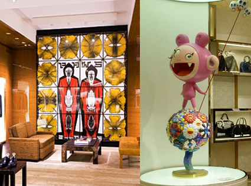
A.P.C CHECKERED SHORTS
Ah yes, the checkered short. The be all end all of love/hate in the wide world of short pants. Personally, I think that short pants work almost better than long pants when paired in the Summer.
www.apc.fr
Posted by Exit 10/05/2010
PAUL SMITH CLOUD SNEAKERS
Some new kicks on the market from the Paul Smith line. “Cloud is a very light canvas sneaker finished with contrast eyelets and the Paul Smith signature spread across the back of the vulcanized sole. The colorful print insoles and multi stripe webbing at the heels make it look like there’s a rainbow over these clouds…”
www.paulsmith.co.uk
Posted by Exit 10/05/2010
ADICUP UK PACK - EXIT MAGAZINE X NO.6 STORE
Exit Magazine and No. 6 Store London are the official adidas Consortium adiCup UK Pack.
Teaming up for the UK pack is Exit Magazine and the adidas No6 store who took inspiration from patterns on the historical jerseys from the USSR and Holland and imbuing it with light blue.
The shoes included in the pack, the VOTARY are also a light blue and are modeled on the design classic soccer boot from adidas, the Copa Mundial. Sitting on an original Gazelle outsole, it’s a fresh wearable version of the iconic boot specially created for adiCup 2010.
Also included is a hold all bag in a matching colourway, perfect for carrying kit to and from the pitch on the big day. Constructed from a heavy canvas the bag features an interior pocket along with leather carrying handles for durability.”
www.adidas.com
Posted by Exit 03/05/2010
THE HUNDREDS X BARBI TWINS - T-SHIRT
The Hundreds present a t-shirt collaboration with Shane and Sia Barbi, otherwise known as The Barbi Twins. “During their heyday the twins were touted as the hottest pinups in the ‘90s and their popularity only grew with their top selling calendars and legendary record-breaking Playboy magazine covers.” Two t-shirts featuring iconic images of The Barbi Twins will be available at THLA, THSF and TH online next week.
thehundreds.com
Posted by Exit 03/05/2010
ADIDAS ORIGINALS TOP TEN HI
An upcoming duo of adidas Top Ten His from the Originals inline collection. Certain details deviate from the OG styling, but “the mix of leather, suede and denim-style canvas with hiker-style laces, all in ultra-tasteful browns, greys and blacks, makes them better than expected. The wildcard colour used in the contrast stitch on the side works too.” Look for these come July or pre-order in the Crooked Tongues store now.
www.adidas.com
Posted by Exit 03/05/2010
COLETTE X DC COMICS
From the colette x DC Comics 75 Anniversary project, two Batman themed t-shirts by Lanvin and Balmain. It is just incredible what kind of brands the Parisian store can mobilize for such an occasion. Both tees are now available.
www.colette.fr
Posted by Exit 26/04/2010
PRO-KEDS FOR OPENING CEREMONY NEON PACK
Opening Ceremony shows off the third installment in their ongoing partnership with Keds. This time they look to London once again. “Like our last installment of custom Keds sneakers, these classic low-top Pro-Keds in vibrant fluorescent Ultrasuede pay homage to British subcultural style–specifically the shocking neon ‘dos of punker kids everywhere, from Camden Town to St. Marks Place. Available exclusively at Opening Ceremony stores in New York, Los Angeles, Tokyo, and online.”
www.openingceremony.us
Posted by Exit 26/04/2010
MARC JACOBS QUILTED HIGH TOP
A high top quilted leather sneaker from the Marc Jacobs Fall/Winter 2010 Collection. The sneaker comes in black and in white leather versions, both featuring a strap and little branding. Look out for these later this year.
www.marcjacobs.com
Posted by Exit 26/04/2010
MASTERPIECE X DICKIES SPRING/SUMMER 2010
Japanese brand Masterpiece has gotten together with Dickies as part of their Spring/Summer 2010 Collection. Together they worked on the work shirt and on the cropped pants by the US brand. The shirts come with patch embroideries and the pants come with color accents on the pockets, while remaining overall very clean.
www.dickiesstore.co.uk
Posted by Exit 19/04/2010
IRAK FOR THE ALIFE
ALIFE is proud to unveil IRAK for THE ALIFE, INC. A capsule collection designed by Kunle, president of IRAK, the legendary New York graffiti crew.
The collection is made of 3 T-shirts, each packaged with a stress cube and a key ring; and zine featuring a selection of photographs from Kunle's extensive personal collection.
www.alifenyc.com
Posted by Exit 19/04/2010
UNDFTD - WORLD CUP T-SHIRTS
Undefeated gets into the Worldcup fever and presents their series of Strike Flag T-Shirts. Represented in the series are France, Germany, England, Spain, Portugal, Brazil and South Africa. The t-shirts will be released online and in store on May 22nd.
undefeated.com
Posted by Exit 19/04/2010
SOMERSET HOUSE
A major exhibition celebrating 20 years of one of contemporary fashion's most influential and enigmatic designers. This ambitious, multi-layered exhibition captured Margiela's unique aesthetic and vision, incorporating garments, installations, photography and film. This exhibition was initiated by the Fashion Museum Province of Antwerp and Maison Martin Margiela.
Young as its history is, no other fashion house has had quite the same impact on our understanding of fashion and its relationship to history, craft, commerce and innovation. Twenty years on, Maison Martin Margiela's radical questioning and rethinking of what fashion is, how we clothe the body and ideals of human beauty, is still as groundbreaking as ever.
Exhibition runs 3 June - 5 September 2010
www.somersethouse.org.uk
Posted by Exit 12/04/2010
UNDFTD - LA LAKERS CONVERSE ALL-STAR
Always a supportive pillar behind their Los Angeles Lakers, UNDFTD release a series of t-shirts based on the iconic colors of the purple and yellow. Furthermore, purchases of the t-shirts will be entered in a raffle for an exclusive pair of “You Can’t Beat LA” Converse Chuck Taylor All-Stars. Tickets are only issued via in-store purchases with 8 winners per UNDFTD Chapter. Winners will be announced via UNDFTD’s blog, Twitter and Facebook accounts.
undefeated.com
Posted by Exit 12/04/2010
COLETTE X TIMBERLAND BOAT SHOE
In a second collaboration, colette and Timberland release the following boat shoe. On a similar note to thefirst partnership last year, this time around the boat shoe features a lug outsole with touches of colette blue over a wheat upper.
www.timberlandonline.co.uk
Posted by Exit 12/04/2010
URBAN MOBILITY BY HUSSEIN CHALAYAN
The Urban Mobility by Hussein Chalayan collection is one of the most interesting lines to come from Puma in a while.
www.puma.com
Posted by Exit 05/04/2010
LEVI'S FENOM
Levi’s Fenom has produced for Ron Herman Japan a sweat suit, consisting of a zip-up hoodie and matching pants. Both pieces feature a small skull print in white. The sweat suit is available in black, navy and grey at Ron Herman Japan stores.
www.ronherman.com
Posted by Exit 05/04/2010
ALIFE
The ALIFE Spring 2010 has landed in-stores. As usual, the apparel collection consists of several strong graphic tees, alongside button downs and raglan crecknecks. This season titles include OG, Grand, Antique A, NY Crack, Cherry Pie, Me & You, and Pop. Each is offered in several color options.
www.alifenyc.com
Posted by Exit 05/04/2010
POLO X HAITI
Polo Ralph Lauren announces its support for the United Way Worldwide Disaster Fund and their ongoing commitment to the recovery efforts in Haiti through the launch of limited-edition Haiti Relief Polo Shirts. Polo Ralph Lauren will be selling nearly a thousand of these specially designed polos in the New Bond Street, London and Place de la Madeleine, Paris stores. One hundred percent of proceeds from the sale of this polo will be donated to the United Way Worldwide Disaster Fund and its ongoing commitment to rebuilding Haiti.
www.ralphlauren.com
Posted by Exit 29/03/2010
ROD LAVER VINTAGE
A great classic gets revamped in a slimmer silhouette by adidas Originals. The Rod Laver Vintage returns for Summer 2010 in three colorways, all featuring a mix of premium leather and mesh on the upper. One of our personal favorites.
www.adidas.com
Posted by Exit 29/03/2010
SUPREME X CHAMPION
Another interesting collaboration from the Supreme Spring/Summer 2010 Collection is with Champion. Together with the iconic sporting goods brand they worked on the Custom Coaches Jacket. The jacket comes in several colorways and has a clean nylon upper, with the Supreme name only featured on the back.
www.supremenewyork.com
Posted by Exit 29/03/2010
LANVIN CUT OUT HI-TOP
Browns takes stock in a navy neoprene and brown leather hi-top sneaker from Lanvin’s SS’10 lineup. “Brown cut out leather detailing runs along the side of the foot with brown lace-ups. A burgundy colour trim sits around the top of the ankle on the neoprene. Flat white rubber sole. A navy leather tab sits at the back of the ankle to pull on the shoe.”
www.lanvin.com
Posted by Exit 22/03/2010
MR BATHING APE X REGAL SHOES
As part of the Mr. Bathing Ape Collection, a collaboration between United Arrows and Bape, they have worked with Regal on two shoes. A loafer comes in black leather with the line’s moustache logo and a lace-up comes with a dotted Bapesta logo on the toe cap.
bape.com
Posted by Exit 22/03/2010
COBRA SNAKE X RVCA
After having worked with RVCA already on several t-shirt collaborations, the brand and The Cobra Snake present for Summer 2010 an entire capsule collection. The line consists of t-shirts, tank tops, shorts, pants, caps and socks and we think its SICK!
www.thecobrasnake.com
Posted by Exit 22/03/2010
LOUIS VUITTON GYM
Louis Vuitton presents for Spring/Summer 2010 Collection a gym set. The set consists of head band, wrist bands, towels and a gym sack. If you are looking for a more bourgeois gym outfit, you might want to check this out.
www.louisvuitton.com
Posted by Exit 15/03/2010
JEREMY SCOTT X MICKEY MOUSE
A while back Jeremy Scott showed a Mickey Mouse sneaker during one of his runway shows. After much excitement, the shoe is now available from adidas as part of the OBYO range alongside the JSMickey sunglasses The round sunglasses come with coverse for both lenses, that when open make them look like Mickey Mouse.
www.openingceremony.us
Posted by Exit 15/03/2010
TOMMY HILFIGER X KEITH HARING
Keith Haring, both artist and activist, has a habit of using his art to serve important social causes, supporting research and caretaking organizations that fight against AIDS. It is with this goal that Tommy Hilfiger Corporate has associated with the Keith Haring Foundation and Artestar LLC. The result is a small collection named Footwear in limited edition, composed of sneakers and rain boots for men, women and kids.
hilfigerxharing.colette.fr
Posted by Exit 15/03/2010
JUNYA WATANABE X MACKINTOSH
New form Junya Watanabe Comme des Garcons x Mackintosh Spring/Summer 2010 Capsule Collection. They present a trench coat and a hooded jacket as part of the collaboration. The velvet collar on the trench coat is really nice. The jackets are now available at colette.
www.comme-des-garcons.com
Posted by Exit 08/03/2010
GUCCI BOAT SHOE
Two solid colorways of the Gucci boat shoe have released from their Spring/Summer 2010 Collection. They've added a vulcanized sole to the slip-on shoe and given it a suede upper with some nice detailing.
www.gucci.com
Posted by Exit 08/03/2010
LEVI'S X HOUSE OF HOLLAND
After working last season on a collaborative 501, Levi’s and House of Holland got together once again for Spring/Summer 2010 to work on a mens and womens collection. Overall the collection consists of 8 pieces, all made of washed denim. In contrast to the blue denim you get black denim straps and gold strap-locks. The collaborative label of the collection is a Levi’s logo inside a house, all in purple.
levi.com
Posted by Exit 01/03/2010
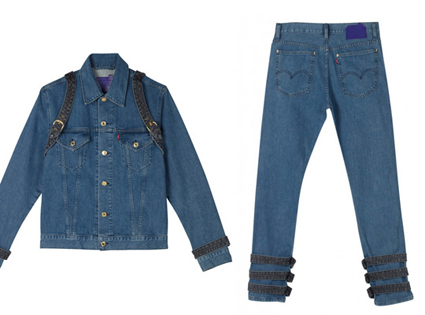
ACNE FURNITURE
ACNE’s Jonny Johanssen presents the new collection of furniture in the latest addition to the sick Acne line. In Mr. Johanssen’s own words, ”The Nya Berlin was an archetypical piece of Malmsten design and was created for use in the Swedish consulate in Berlin. It has not been in production since 1949, so it was really inspiring to work with. With this sofa as a reference, I started to look at how we worked architecturally, instead of just treating say the upholstery. I decided as an alternative to objectify its form from a perspective play. As we do with fashion we played with proportion, lineage and structure – stretching, squashing and pulling the simplistic shape to create new sculptural forms.
acnestudios.com
Posted by Exit 01/03/2010
AUGMENTED REALITY
adidas Originals is launching the first Augmented Reality experience in footwear. The adidas Originals AR Game Pack is a set of 5 iconic Originals shoes, each printed with an AR code on the tongue. When you hold the code in front of your webcam, you’ll gain access to a virtual version of the adidas Originals Neighborhood. Each month between February and April, Originals will launch a new interactive game within the Neighborhood and your shoe will be the game controller.
www.adidas.com
Posted by Exit 01/03/2010
DAVID SHRIGLEY FOR PRINGLE
Pringle of Scotland has commissioned Glasgow-based artist David Shrigley to produce a corporate film. The 3-minute animation depicts the making of jumpers and cardigans over the past nearly 200 year history of the Scottish brand. Shrigley has used his artistic strategy of dead-pan wit and dark humour to narrate how jumpers are made today. His anarchic voice is ever present throughout the film as he draws the wonderful portray of an odd and insane fashion world.
www.pringlescotland.com
Posted by Exit 22/02/2010
A.039 COLLECTION
A key highlight for the spring/summer 2010 season, adidas Originals introduces its new blue label collection named “Originals A.039”. The label will be an integral part of the overall adidas Originals line, but is differentiated by its “A.039” branding, which is the internal code for the Originals blue colour. The new collection is based on adidas Originals’ strong roots, iconic styles and well-established 3-Stripes mark in combination with contemporary design.
www.adidas.com
Posted by Exit 22/02/2010
BBLESSING X LOST
BBlessing is preparing a collection of t-shirts as part of their Spring/Summer 2010 collection that pay tribute to the 6th and final season of the “LOST” television series. The t-shirts, designed by Nicholas Kratochvil, will hit stores when “LOST” comes back on the air next week. Each of the seven t-shirts pulls from the show’s story, including “‘Another Life’ – Inspired by Desmond’s line ‘See you in another life, brother’” and “‘Good Vibrations’ – This Beach Boys song is the code that Charlie has to put into the Looking Glass station computer to make contact with Penny. It’s also the last song he hears before he is grenaded by a kamikaze Russian cyclops and drowns.”
bblessing.blogspot.com
Posted by Exit 22/02/2010
LEVI'S X ORIGINAL FAKE
Original Fake have again hooked up with Levi’s Vintage Clothing. Together they've worked on the S501XX 1944 model and Original Fake have customized it as part of their Spring 2010 Collection.
www.original-fake.com
Posted by Exit 15/02/2010
Y-3 MOBILITY
The Y-3 Mobility Line in durable yet chic black nylon offers a full assortment of luxurious but understated office and travel bags in different shapes and materials.
The range combines functionality with design and the quality of all details and compartments has been improved to guarantee high resistance for smooth traveling.
www.adidas.com
Posted by Exit 15/02/2010
PRADA - FIRST SPRING
Prada presents 'First Spring', a short movie directed by Chinese artist Yang Fudong for the Prada Mens Spring/Summer 2010 advertising campaign.
www.prada.com
Posted by Exit 15/02/2010
UNDFTD X MASTERPIECE X DICKIES
An EXIT favorite - Undefeated have collaborated with Masterpiece and Dickies to work on two sets of chinos. The chino's feature subtle logo embroideries of both brands, as well as thick neon pocket zippers.
www.dickies.com
Posted by Exit 08/02/2010
YSL - AIN'T NOTHIN' LIKE THE REAL THING
For Yves Saint Laurent’s Fall/Winter 2010-11 campaign, the label enlisted American photographer and filmmaker Bruce Weber to put together a short film showcasing the new collection.
www.ysl.com
Posted by Exit 08/02/2010
ADIDAS ORIGINALS BY ORIGINALS KAZUKI
The latest ObyO Kazuki collection for 2010 boot features luxury material mix of leather and mesh and the Kazuki ObyO signature logo on the tongue and heeltape. It is finished with a signature, moulded sock liner. The GIPFEL is a stylish sneaker that is not ashamed of its basketball heritage. The hi-top features a luxury upper constructed from a mix of Nubuck, leather and mesh sat astride a midsole with the vintage adidas Torsion Bar and Soft Cell technology on the outsole.
www.adidas.com
Posted by Exit 08/02/2010
SAME DAY DIFFERENT SHIT
Eric Brunetti gives us a first look at his FUCT “Same Shit Different Day” Spring/Summer 2010 Collection.
www.fuct.com
Posted by Exit 01/02/2010
ADIDAS CONDUCTER HI
For Spring 2010, the adidas Conductor Hi returns in a fresh black and white color up. The upper of the late-80s ball sneaker features a black on black embossed check pattern alongside a selection of mixed materials.
www.adidas.com
Posted by Exit 01/02/2010
ADAM KIMMEL x COLETTE
For the occasion of Jim Krantz’s “Moments within a Moment” exhibition, that is currently showing at colette in Paris, designer Adam Kimmel has created two shirts. The shirt comes in white cotton and in denim, featuring a large “K” on the back with “colette rider” embroidered below.
www.colette.fr/
Posted by Exit 01/02/2010
ADIDAS X STAR WARS
Star Wars and adidas Originals have officially joined forces in the most colossal collaboration to date, bringing you a striking collection of sneakers and apparel inspired by the characters and crafts you've followed for a lifetime. The most iconic moments and beloved figures from the Star Wars saga are translated to the streets, telling their creative story across a forceful collection of adidas Originals footwear and apparel.
www.adidas.com
Posted by Exit 25/01/2010
PRINGLE X RYAN MCGINLEY
The historic and creative brand Pringle of Scotland have taken the bold move forward to present the Spring Summer collection in the form of a film, created by one of Exits favorite photographers Ryan McGinley and starring the Academy Award winner Tilda Swinton. The short film explores iconic elements of the Scottish terrain whilst delivering beautiful images of the clothes themselves on the captivating and bewitching actress.
www.pringlescotland.com
Posted by Exit 25/01/2010
BAPE CRAZY
Bape have released their new Crazy Colors Collection, a capsule line consisting of jackets and accessories that will soon be available to buy online at the Bathing Ape European Webstore coming in April 2010. In the meantime checkout Bape stores globally for the collection.
bape.com
Posted by Exit 25/01/2010
12 TOKYO BRANDS
As part of their CRYSTALLIZED project, Swarovski have worked with 12 Tokyo brands (3.1 phillip lim, Bedwin & The Heartbreakers, Casely-Haford, CICATA, Inpaichthys kerri, John Lawrence Sullivan, Kitsune, Sabatino, SOE, ts(s)) on special product collaboration. Above you get a first detailed look at their work with Visvim. Together they have worked on footwear and clothing all adorned with Swarovski crystals.
www.crystallized.com
Posted by Exit 18/01/2010
LEVI'S X JEAN-PAUL GAULTIER
Levi’s have worked with some interesting art and design collaborators recently, including Damien Hirst, House of Holland, Robert Geller and many more. In this their latest collaborative project they got together with French fashion designer Jean-Paul Gaultier. The collection consists of jackets, denim and shorts.
levi.com
Posted by Exit 18/01/2010
HERALD HIGH DERBY
The Louis Vuitton Herald High Derby is one of our favorite silhouettes in their Summer 2010 Collection. The desert boot by the French luxury brand is made of suede calf leather and features a natural leather strip on the back and tag on the tongue. The desert boot is nothing new and we still love the original by Clarks, but Louis Vuitton definitely takes it to the next level with these. The quality, soft choice of colors and details are perfect on these, making sure that they keep their subtle looks, yet adding a real premium touch to it.
www.louisvuitton.com
Posted by Exit 18/01/2010
FRISCO STAND UP
Skateboard cinematographer and photographer Dan Wolfe has dropped this sick new film, “Frisco Stand Up.” Reconfirming both the fact that San Fran is skater paradise and adidas has one of the sickest teams out there.
www.adidas.com
Posted by Exit 11/01/2010
BURBERRY BEHIND THE SCENES
Behind the scenes footage at the Burberry Spring/Summer 2010 campaign shoot, featuring British actress Emma Watson and Burberry's Christopher Bailey.
burberry.com
Posted by Exit 11/01/2010
VERNER PANTON X CONVERSE
Sneaker versus Art - The Chuck Taylor All-Star adorned with the iconic psychedelic color stream of celebrated and EXIT's favorite Danish designer Verner Panton.
www.converse.com
Posted by Exit 11/01/2010
KYLE BEAN FOR HERMES
UK designer Kyle Bean has created a special series of newspaper covered instruments for French fashion house Hermès. Together with oldschool trunks, the instruments make up the Spring 2010 Hermès window decorations.
www.hermes.com
Posted by Exit 04/01/2010
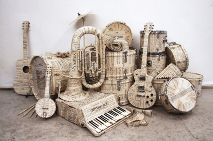
OAKLEY X STANLEY DONWOOD
Stanley Donwood is recognized as one of the UK’s most popular contemporary artists and a favorite of Exit. Since 1994, Donwood has designed all the artwork for Radiohead and helped create one of music’s most distinctive brands. The artwork on these limited edition frames is adapted from a Donwood piece called “London Views” which shows London being destroyed by fire and flood in a quasi-medieval style. The sunglasses come with matching box and micro bag that are also adorned with his work.
www.oakley.com
Posted by Exit 04/01/2010
ANDRE X KITSUNE
Kitsuné have launched a new t-shirt line under the moniker Kitsuné Tee, collaborating with Parisian artist André. He reinterprets their fox logo and shows his familiar handstyle over three different graphics.
www.colette.fr
Posted by Exit 04/01/2010
ADIDAS ZX CONSORTIUM
One of my favorite Adidas silhouettes, the adidas Consortium Runner. The first part of the pack consists of two solid new versions of the ZX 8000 and the Torsion Special. Some nice premium materials have been used on the running shoes whilst maintaining a classic look.
www.adidas.com
Posted by Exit 28/12/2009
ORIGINAL FAKE EAR WARMERS
Original Fake have released this winters must have item in the battle to stay warm in sub-zero weather. Next to their CLOT Hong Kong collaboration t-shirts comes these very pleasing ear warmers.
www.original-fake.com
Posted by Exit 28/12/2009
NEIGHBORHOOD X FRAGMENT DESIGN
Neighborhood and Fragment Design have worked on an exciting and inspirational collaborative capsule collection. Next to vintage leather biker jackets, the two brands also present new nylon biker jackets, hoodies and a series of t-shirts.
www.neighborhood.jp
Posted by Exit 28/12/2009
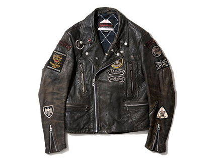
ALIFE MAYHEM HELLO HELL
Check these staple Alife pieces and timeless new styles in premium fabrications, the line-up includes t-shirts, crewneck sweaters, shirts and zip-up hoodies.
www.alifenyc.com
Posted by Exit 21/12/2009
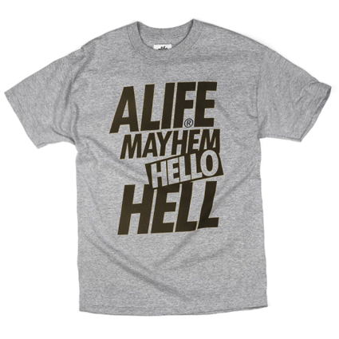
OBEY X LEVI'S
In addition to t-shirts, the new Levi's x Obey line also features a distressed denim jacket with custom, Fairey-designed artwork lining and a black, french terry hood sewn into the collar of the jacket; and a buffalo plaid flannel woven shirt with drip details throughout. Keeping with Fairey’s “public art” philosophy, prices remain reasonable, making the collection more accessible to a wider audience, while still offering them something special and limited.
us.levi.com
Posted by Exit 21/12/2009
ORIGINALS FIVE-TWO 3 SNEAKER CLEANING KIT
As part of their Five-Two 3 collection, adidas Originals has worked with Jason Markk on a custom sneaker cleaning kit. Just like the regular kit, this one consists of the sneaker cleaning solution, a tissue, a brush and a tooth brush.
www.adidas.com
Posted by Exit 21/12/2009
PAUL SMITH CASHMERE DUFFLE
Here’s an amazing entry into the duffle coat sweepstakes. Paul Smith is certified EXIT favorite, and coats like this are a reason why. It’s a nice cropped length and the navy colour lends itself for some eye catching colour combinations. The fact that it’s cashmere means its sold on us.
www.paulsmith.co.uk
Posted by Exit 14/12/2009
ADIDAS TOP TEN HI 30TH ANNIVERSARY
The adidas’ classic Top Ten is celebrating 30 years in 2009. The second colorway has recently dropped and looks gorgeous in black with red, white and blue accents.
www.adidas.com
Posted by Exit 14/12/2009
TERRY X ROSA X SUPREME
The Official Rosa Acosta x Supreme Video
www.supremenewyork.com
Posted by Exit 14/12/2009
ADIDAS X POCHOIR
In celebration of the Five Two 3 collection renowned Stencil Artist Pochoir has transformed No6 into an art space for the month of December. Sitting alongside his signature 'Pochoir x Superstar' artists commissioned to produce work for the show include El Cartel (Spain), Claroscuro (UK), Ludo (France) Kenneth Chung (UK & Germany) and FarkFK (UK).
www.adidas.com
Posted by Exit 07/12/2009
KRINK 8 LITRE APPLICATOR V K-66
The 8-Litre Applicator follows the Krink tradition of seeking new tools for creative expression and the infamous K-66 steel tip permanent marker, now in wearable form.
krink.com
Posted by Exit 07/12/2009
PAUL SMITH UNION JACK UMBRELLA
This Union Jack inspired umbrella works well with a wooden handle embossed with the Paul Smith name. Black exterior covering up the clearly visible and familiar Jack interior. Simple and elegant and particularly useful during a long wet winter in London.
www.paulsmith.co.uk
Posted by Exit 07/12/2009
NEIGHBORHOOD X CLARKS
Once again Neighborhood have worked with Clarks for Fall/Winter 2009. This season the Japanese brand chose the classic Desert Boot. The boots come in beige and in black, featuring hand-drawn designs printed on the upper.
www.neighborhood.jp
Posted by Exit 30/11/2009
SLVR TRAVEL PACK
The SLVR Travel Pack is contemporary and smart. Its functional design is for those seeking a laid back but elegant look while on the go. The Men’s range consists of a waterproof black blazer, a fitted shirt that comes in 2 colour variations, white-purple and white-lead, a classic black cotton twill pant in a modern fit and a reversible French terry zipper jacket which is black on the outside and striped on the inside. The Women’s pieces also include a waterproof black blazer in addition to a black placket nylon dress, a slim black sweat pant in a modern fit and a female version of the reversible French terry zipper jacket included in the men’s collection.
www.adidas.com
Posted by Exit 30/11/2009
DUFFER OF ST GEORGE
Following on from the huge success of the 25th Anniversary Duffer capsule collection which went in to stores in August, we are now able to present to you the second wave collection. Drawing inspiration from the core heritage of the brand and reworking some of the more classic pieces, the collection comprises winter jackets, hoodies, polos and tees, which all carry the new signature Duffer branding.
www.jdsports.co.uk
Posted by Exit 30/11/2009
ADIDAS X RANSOM
Here's a look into Ransom’s debut collection for adidas Originals. The range consists of four styles: the Creek, the Summit, the Pier, and the Dune. Each comes in several color and material variations with fabrics such as tumbled leather, premium suede, heavy duty canvas, nubuck, raw leather and gloss leather making the rounds. We can honestly say we’re fans of every style in this collection. Canadians just do it right.
www.adidas.com
Posted by Exit 23/11/2009
RAF SIMONS X FRED PERRY
Raf Simons has worked with dark colors this season for Fred Perry, including black, brown and grey tones. The collection offers knitwear, pants, jackets and of course a good amount of polo shirts. Accents are set mostly with subtle metallic embroideries, as well as with patchwork cuts. Overall the collection is pretty simple and easy to wear.
www.fredperry.com
Posted by Exit 23/11/2009
PAUL SMITH SHOE CARE KIT
Paul Smith luxury shoe care kit is presented in a black washed wooden box. It is complimented with multi stripe leather trims and is fastened at the sides by steel hinge clasps. Internally the box comprises of various compartments.” It comes loaded with all the proper supplies you need to treat and condition your footwear. The colored handle on the wood box finishes off the package well.
www.paulsmith.co.uk
Posted by Exit 23/11/2009

RAF SIMONS X DR. MARTENS
Dr. Martens and Raf Simons are at it again, this time creating another timeless classic. Taking on the original 8-Eye Boot, the Raf Simons collaborative version is done up in solid premium leather that has a grainier appearance as opposed to the original black 1460 8-eye. The soles are darker, giving the shoes a sleeker and more sophisticated look than the original soles. They are now available in two colorways online for pre-order via: oki-ni and are great alternatives for those seeking a more mature and minimal version of the classic Martens.
www.drmartens.com
Posted by Exit 16/11/2009
LOUIS VUITTON MONOGRAM REVELATION BAG
This Louis Vuitton Monogram Revelation Bag is part of Louis Vuitton’s fall/winter 2009 collection. It features an all black body with silver accents, as well as the Louis Vuitton raised monogram throughout. It is available now from select Louis Vuitton flagship stores and its stunning to have and to hold.
www.louisvuitton.com
Posted by Exit 16/11/2009
ADIDAS CONSORTIUM CITY SERIES
The second drop of the adidas Consortium City Series is about to be released. Once again adidas worked with prominent retail partners to give the sneaker of each respective city a new look, usually heavily inspired by the original. In this release they worked with DWM on the New York, with Sneakersnstuff on the Stockholm, with Norse Projects on the Copenhagen and with SlamJam on the Milano.
www.adidas.com
Posted by Exit 16/11/2009
NECKFACE X BRIGADA - CLOSED CASKET PACK
Eyewear label Brigada worked with renowned artist Neckface on a co-op pair of Andrew Reynolds’ signature Pazzo sunglasses. The shades feature a black and orange acetate frame with chrome studs and orange reflective lenses. The corresponding hard case is detailed inside and out with Neckface’s recognizable handstyle alongside an original character design. A matching reverse print t-shirt makes this “Closed Casket” release a pack.
bakerboysdist.com
Posted by Exit 09/11/2009
PPQ X ADIDAS
British label PPQ - whose name stands for Pretty Personal Question - gets in the game with their first collection for the sportswear giant.
Debuting this season, their new line includes lace-up boots, flats, sweaters, shorts, and a hefty dose of their signature contrast print - in this case, a strong black-and-white striped motif.
www.ppqclothing.com
www.adidas.com
Posted by Exit 09/11/2009
RUGBY BY RALPH LAUREN FALL/WINTER 2009
Interesting new shoes and boots are coming from the Rugby by Ralph Lauren Fall/Winter 2009 Collection. They present a nice variation of the duck boots, which come with a rubber lower and black/red wool plaid upper. Furthermore they have released a suede moccasin, which looks really good. It comes in both black and beige with a rubber sole.
www.ralphlauren.com
Posted by Exit 09/11/2009
GLOBE TROTTER X ANDY WARHOL BY HYSTERIC GLAMOUR
Hysteric Glamour continues to work with the Andy Warhol Foundation and this time also worked with Globe Trotter to create a Andy Warhol by Hysteric Glamour luggage collection. The collection consists of several suitcases, features a black leather upper and a silver skull print design lining.
www.hystericglamour.jp
Posted by Exit 02/11/2009
ADIDAS SKATEBOARDING
The latest release from adidas Skateboarding has begun to hit finer skate shops around the globe. The highlight for us is the second colorway of the Copa Mundial-inspired Busenitz pro model – in brown suede with a grippy gum rubber outsole. A black/white/blue Campus Vulc and a grey Ciero complete the drop
www.adidas.com
Posted by Exit 02/11/2009
MASON MARTIN MARGIELA GLASS SLIPPERS
Made famous by none other than Cinderella and brought to life by Maison Martin Margiela, the Brothers Grimm fantastical shoe concept now exists, albeit in limited quantities. Taking the idea further, the designer sells these limited edition heels, not in pairs, but per piece!
www.maisonmartinmargiela.com
Posted by Exit 02/11/2009
ADIDAS ZX 700 WINTER HIGH
The adidas ZX 700 Winter Hi is another hybrid sneaker of adidas Originals that is inspired by the ZX 700 Running shoe from 1984. That’s why the ZX 700 Winter Hi is probably one of the lightest and most comfortable winter boots on the market. The shoe is part of this year’s adidas Originals OT Tech Collection and has an upper, which is made of leather and waterproof material. The typical 3 Stripes of adidas come in royal blue and can be found on the tongue and the heel patch. The ZX 700 Winter comes in a Black/Blue/Grey Colorway and has an extra pair of black/blue laces
www.adidas.com
Posted by Exit 26/10/2009
FUCKING AWESOME FALL 2009 T-SHIRTS
Fucking Awesome have released their Fall 2009 t-shirt collection. A number of photo prints and black and white imagery make up the Jason Dill backed label’s latest offering. As usual themes stay dark and subversive.
fuckingawesome.net
Posted by Exit 26/10/2009
SUPREME X MICKEY MOUSE
The 2-piece limited collection features the classic version of Mickey, imprinted on either a Raglan Pull Over, made from heavy weight cotton fleece, or 100% cotton tees. 2 colorways are available in Raglan Pull Over model while 5 color sets are available in the tees.
www.supremenewyork.com
Posted by Exit 26/10/2009
UNDEFEATED LAS VEGAS EXCLUSIVE T-SHIRTS
Undefeated Las Vegas will release some exclusive t-shirts in store for all the folks coming through during the Vegas tradeshows, that are starting today. This year Undefeated played with the stripper/call girl theme on the tees, which come in a series of colorways. Overall Undefeated presents three different designs that are being released in their Las Vegas store later today.
undefeated.com
Posted by Exit 19/10/2009
MARRIED TO THE MOB FALL 2009
Womens streetwear label Married to the Mob unveil the first delivery of their new Fall collection. The lookbook, starring Star Trak’s Teyana Taylor, features a wide variety of vibrant looks, showcasing the brand’s urban appeal and New York swagger. A release within their online store can be expected for next week.
mttmnyc.com
Posted by Exit 19/10/2009
ADIDAS X NEXUSVII TRACK TOP
As part of their Five-Two 3 Collection, adidas Originals has worked with Japanese brand NEXUSVII® on their classic Track Top jacket. The jacket comes in black, with leather stripes on the sleeves and further leather details around the pockets. The zippers all come in yellow gold with rhinestone details on the zip pull. Look out for a release in Japan on October 23rd.
www.adidas.com
Posted by Exit 19/10/2009
A.P.C. X SUPREME
The A.P.C. x Supreme collection will hit stores early next month. The capsule consists of two different pieces, a pair of denim and a graphic t-shirt. The denim takes cues from A.P.C.’s iconic New Standard with additional back-pocket emroidery and a pin. The t-shirt comes in two variations, a red one for Supreme stores and a black one for A.P.C. stores. The collection goes on sale in the US both online and in-store on October 1st, 2009 while Japan will see the release two days later on October 3rd.
www.apc.fr
Posted by Exit 12/10/2009
ALIFE WORKWEAR BY DICKIES COLLECTION
Alife worked together with Dickies on the Alife Workwear by Dickies Collection. The line consists of shirts, jackets, shorts and of course chinos. Offered in the original Dickies Khaki and Navy colorways, the collection will be available this Saturday, August 22nd at all ALIFE flagship locations in New York, Los Angeles, Vancouver, Tokyo; but also in London and Paris at Dover Street Market and Colette, respectively.
alifenyc.com
Posted by Exit 12/10/2009
ADIDAS ORIGINALS X FAFI X STAN SMITH
The third collaboration between adidas Originals and graffiti artist FAFI is now available online at colette. As previously mentioned, the graphics featured on Stan Smith and Honey Mid this time are based on FAFI’s next comic book which details her trots around the globe and sense of style. Something to take note of — while the Stan Smith highlights bits and pieces of drawings, the Honey Mid’s graphics are actually done up in style of comic strips, so do take some extra time to admire what’s going on behind the shoes.
www.adidas.com
Posted by Exit 12/10/2009
DIESEL INTIMATE FALL/WINTER COLLECTION
Diesel’s latest underwear line for Fall/Winter at Diesel Intimate, which is full of playfulness, sensual and very sexy appeal.
diesel.com
Posted by Exit 05/10/2009
BAPEX 2
Bape releases new style in their Bapex watch series. For Fall/Winter 2009 they present the Bapex 2 in three colorways. We are glad they took again a more classic approach compared with previous watch releases. Inspired by the Rolex GMT-2, the Bapex 2 comes in black, blue/red and brown, featuring a 24-hour ring.
bape.com
Posted by Exit 05/10/2009
ADIDAS ORIGINALS ROD LAVER SERIES DROP 2
The first release of the adidas Originals Rod Laver Series, which included collaborations with DQM, Undefeated, Limiteditions and VA, we give you a look today at the next drop of the series, this time featuring collaborative sneakers with Solebox, D-Mop, Wood Wood and Goodfoot.
Once again each partner created an interesting new look for this 40 year old classic, bringing it back to live today. D-Mop used silver leather all over the upper, Goodfoot gave the sneaker a varsity jacket styling, Solebox took influences from hiking, and Wood Wood concentrates on premium details and an overall subtle look. Finally CLOT gave the sneaker an all pony skin upper.
www.adidas.com
Posted by Exit
05/10/2009
PAUL SMITH X BURTON
The latest collaboration expands beyond exclusive snowboarding outerwear pieces to include apparel pieces such as jeans, t-shirts, snowboarding first layer pieces, sweatshirts and jackets. The pieces were designed to combine Burton’s innovative fabric technology with Paul Smith’s inventive designs. The focal point of the 2009 Fall/Winter collection is a bondage-inspired snowboarding jacket that combines fashion and function with welded pockets, taped seams, a pass pocket, gauntlet cuffs and an adjustable hood. The jacket is available in two colorways; black shiny rubber and jacquard leopard print.
www.paulsmith.co.uk
Posted by Exit
28/09/2009
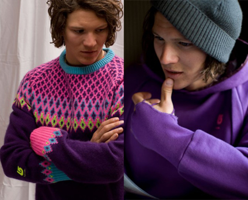
JIL SANDER X UNIQLO
it seems like her collection, J+, will continue to embody everything we loved about her designs- simple, well-cut, basic and timeless. Some pieces from the collection include gorgeously fitted suits, khakis, plaid button downs and a hooded grey wool woven jacket. While all basics seem like there’s nothing out of the ordinary, these pieces will amaze when tried on. To top it off, the affordable prices should also make your heart and wallet leap in joy when the collection is released later this Fall.
www.uniqlo.com
Posted by Exit
28/09/2009
JEREMY SCOTT POP-UP STORE AT NO.6 LONDON
The adidas Originals “ObyO” project is in its second season for AW09. The highly anticipated collection follows through from the huge success of the SS09 collection. It’s the very first season Jeremy is showing at London Fashion Week so for this occasion adidas has given over their boutique styled space “No6 Newburgh St” for an exclusive Jeremy Scott for ObyO Pop Up Store. Jeremy has worked with adidas Originals on the creative direction of the space and transformed it into a bespoke environment where the whole AW09 Jeremy Scott/ObyO product can be viewed and purchased.
www.adidas.com
Posted by Exit
28/09/2009
SPANDEX GRID
American Apparel bring us a sexy sheer mesh bra and panties set with a diamond grid pattern.
www.americanapparelstore.com
Posted by Exit
21/09/2009
Y-3 V MOMO
Y-3 have collaborated with Brooklyn artist MOMO resulting in limited edition sneakers, apparel and artwork What started as a straightforward commission for the urban artist MOMO to create a floor installation for the Y-3 A/W 2009-10 presentation has organically evolved into a multi-pronged collaboration.
MOMO, known for his conceptual collage work and urban intervention projects in places as far-flung as Manhattan, Seoul, and Madrid, was tapped to create an inspirational installation at Pier 40 during New York Fashion Week. The 5,000 square foot floor, which MOMO painted in a stunning geometrical kaleidoscope of color, was just the start. MOMO used his signature vivid, geometric shapes to create 3 unique styles of trainer. During the production process, the leathers are cut to form randomized patterns, resulting in 3 final styles that even MOMO can’t predict.
www.adidas.com
Posted by Exit
21/09/2009
DR. MARTENS V RAF SIMONS
Once again Dr. Martens have worked with Raf Simons for Fall/Winter 2009. The designer has added some new flavors to the otherwise classic UK footwear range and worked with metallic colors this season. Low top and high top boots are featured in the line-up, all coming with gold, silver and bronze metallic uppers.
www.drmartens.com
Posted by Exit
21/09/2009
ORIGNALS BY ORIGINALS KAZUKI
The adidas Originals by Originals Kazuki Fall 2009 Collection is now in store, the line once again sets new standards in use of technical materials. Our favorites for Fall/Winter 2009 are for sure the Neighborhood collaboration pieces, including both footwear and apparel.
www.adidas.com
Posted by Exit
14/09/2009
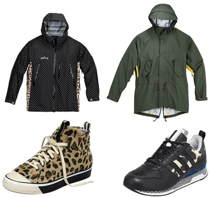
ORIGINALS BY ORIGINALS JAMES BOND FOR DAVID BECKHAM
Adidas continues to bring out interesting projects for Fall/Winter 2009, here we give you a look at the David Beckham collection, which was designed by Undefeated’s James Bond. The bestselling Stan Smith silhouette has been a firm favorite across-the-board since the ’70s, and this full leather mid-cut version of the ‚Official‘ take on the pimple soled classic, originally made for sports official wear, is made from a luxurious soft leather and finished with striking details that don’t diminish the supremely clean look like a signature DBlogo on the upper and footbed and a golden eyelet on the tongue. The mid top sneaker comes in a white and in dark red.
www.adidas.com
Posted by Exit
14/09/2009
ORIGINALS FIVE-TWO 3 PROJECT
Just dropped instore the latest Five-Two 3 project from adidas including the XLarge, Maharishi and Porter collaborations from the Project. XLarge worked on the Superstar and gave it a multicolored faux snakeskin upper. Maharishi worked on the Stan Smith 80 and gave it a chambray upper. Porter from Japan worked with one of their custom nylon materials on the upper and added a zipper along the heel on the Nizza Hi LX.
www.adidas.com
Posted by Exit
14/09/2009
TIMEX 80 JUMBO
Timex 80 presents the Jumbo model — the brands’ classic 80s digital watch in a new large format. A “universe” of colors are available with names inspired by the planets: Blue Neptune, Brown Jupiter, Green Earth, Pink Venus, Red Mars and Red Mercury. The last one (the red/black watch above) is a limited edition of 500 pieces, only available in the most exclusive boutiques around the world. The industry leading technical details featured on all Timex 80 watches remain the same, with chronometer, date, alarm, water resistant case, and backlit Indiglo display. Timex 80 is now available at stores such as Selfridges, colette and Barneys.
www.timex80.com
Posted by Exit
07/09/2009
URSUS BAPE
After a small preview, the first pieces of the new Ursus Bape Fall/Winter 2009 Collection has been released. The collection is designed by Tet from WTAPS and introduces a more mature, outdoor and workwear inspired style, into the Bape collection. For us it is without a doubt the most exciting addition to the Bape brand since a long time and we look forward seeing its development.
www.bape.com
Posted by Exit
07/09/2009
SAMBA MTL
A new limited edition adidas Samba MTL has been released in Japan. The Samba comes with a black crackled leather upper and metallic gold accents. In contrast to the upper, the sneaker features a purple sole.
www.adidas.com
Posted by Exit
07/09/2009
SINGLE LENS SUNGLASSES
This season, nonconformist Martin Margiela offers an outlandish take on a Ray-Ban Shooter style sunglass frame. Colette says it’s a piece “just like the creator; atypical, playful, unique!” If those words describe you, and you think you can pull this off, they’re now available in two colors at colette.
www.colette.fr
Posted by Exit
31/08/2009
MARK GONZALES VS ADIDAS
Adidas pro skater Mark Gonzales shows off his artistic talent, using a classic track jacket design as the canvas. The overall design is simple, using white as the base color with light-blue adding contrast throughout. Mark Gonzales’ signature artwork is featured on the left chest, in a multi-colored scheme.
www.adidas.com
Posted by Exit
31/08/2009
LONGCHAMP VS JEREMY SCOTT
Once again Longchamp and Jeremy Scott get together and create a couple of pieces for Fall/Winter 2009. The famous Longchamp Pliage bag comes in two sizes and is decorated with medals, which are embroidered onto the upper of the bags - the Colonel series. Furthermore they have also created the Sergent bags, which have a more heavy all-over medal design and also come in two sizes.
www.longchamp.com
Posted by Exit
31/08/2009
THE SHINY MALIBU
This classic Californian one-piece from American Apparel doubles as a swimsuit for the pool or a layering piece for your wardrobe.
www.americanapparelstore.com
Posted by Exit
24/08/2009
PENDULETTE CLIPPER TRAVEL CLOCK
The Hermes Pendulette Clipper Travel Clock will not only serve you well on your journeys but it has a bit of an heirloom quality that will age beautifully as its passed down from generation to generation.
www.hermes.com
Posted by Exit
24/08/2009
TOURNAMENT EDITION
The adidas Tournament Edition, a tennis inspired premium vintage sneaker collection, returns for summer 2009. Aside from the Stan Smith Vintage, Grand Slam Vintage and the Nastase Super, we are most excited about the re-release of the Lendl Comp Vintage. All four sneakers come in premium leathers with very subtle accents.
www.adidas.com
Posted by Exit 24/08/2009
MAN
Paul Smith drops their latest fragrance for men everywhere, simply entitled, “MAN.” “The new cologne, created by Nathalie Lorson, who’s worked with Jil Sander and Trussardi as well as on earlier PS scents, is a strong mix of powdery orris, citrusy yuzu, a
www.paulsmith.co.uk
Posted by Exit
17/08/2009
QUIKSILVER V THE STANDARD SWIMSUITS
Quiksilver has partnered with André Balazs’ The Standard Hotels to market cobranded men’s and women’s swimsuits. The boardshorts are a Diamond Dobby reissue of the original design from 70s and 80s with new patterns inspired by the 4 Standard hotels in Hollywood, Downtown LA, Miami, and NY. Each pair of boardshorts has a list of addresses in the waistband, carefully curated by Natas Kaupas (Skateboarding legend and Quiksilver Creative Director) corresponding to 5 unique destinations near each of the hotels. A bikini inspired by one of Quiksilver first designs will also be released. The boardshorts and bikini will be distributed via the first-ever poolside vending machines in the hotel’s four properties, in their boutiques and online . Each product is limited to 250 pieces.
shopthestandard.com
Posted by Exit
17/08/2009
NIZZA HI “GOLD CRACKLE”
The adidas Nizza Hi is being pushed a lot by adidas in 2009. Both in-line and in collaborative efforts, the simple high top silhouette has appeared many times. For Fall 2009 it returns in a gold/white colorway, featuring a metallic gold crackle upper.
www.adidas.com
Posted by Exit 17/08/2009
DIESEL MAGIC 360° MIRROR
Diesel recently launched a ‘Magic’ mirror in their newest Madrid store equipped with a mirror that allows a 360° view of the customer’s front and back . Great idea, but could also mean that sales people and their feedback will be needed less and less… At the present time this feature is only available in Spain.
www.diesel.com
Posted by Exit
10/08/2009
MAN BAGS
For this Fall, Louis Vuitton adds some details to their men’s bag line. The most prominent is the black leather piping and detailing which accentuate the monogram a bit, and make these bags more than simple clones of their female counterparts. Our favorite of the collection would be the soccer inspired weekender with the patch leather work. Almost makes the weekender worthy of a kick around the field.
www.louisvuitton.com
Posted by Exit
10/08/2009
SUPERSTAR 80S
The adidas Superstar “80s” was manufactured in France as a faithful reproduction of the original RUN-DMC favorite. The attention to detail is immaculate with vintage a heel logo, side stitching, and a suede insole. This high quality Superstar comes in all-white; red, white and blue, or black on white.
www.adidas.com
Posted by Exit
10/08/2009
LOUIS VUITTON APOLLO 11 COMMEMORATION TRUNK
Apollo 11 will celebrate their 40th anniversary of the moon landing, which took place on July 20th and Louis Vuitton have commemorated the achievement with a custom Malle Mars trunk. The Louis Vuitton Malle Mars Apollo 11 Commemoration Trunk is futuristic, and opens in a out of this world way. Each compartment opens up to different essential
www.louisvuitton.com
Posted by Exit 03/08/2009
NIZZA HI
More Nizza Hi from adidas have started to arrive at retailers, the sneaker comes with a navy blue or red canvas upper, highlighted by white piping and stripes. The red model features a yellow tongue tag and foxing, while the blue is marked with grey.
www.adidas.com
Posted by Exit
03/08/2009
BEAMS V DICKIES MADRAS SHORTS
Japan’s presently very excited about Dickies and this is the another new collaboration. Beams gets together with the US brand working on a series of madras shorts.
www.dickies.com
Posted by Exit
03/08/2009
3-WAY DROP 3
The third and final drop of the 3Way Consortium project from adidas Originals sees the series heading East for a work around between some of the most respected sneaker retailers and influencers of the region.
With the choice of working on the 5 models together in whatever manner they chose Acu, Crooked Tongues (London based but with strong ties to Thailand), D-Mop and VA decided to pair up on two shoes each and all collaborate together on the fifth. The 5 retailers worked on the Samba, Forum Mid, Nizza, Stan Smith and the Superstar, all together covering the most prominent sneakers in the adidas Originals catalogue.
www.adidas.com
Posted by Exit
27/07/2009
MICROPACER “60 YEARS OF STRIPES”
The adidas Micropacer has dropped in a new colorway as part of the “60 Years Of Stripes” campaign. The classic running sneaker features a multicolor stripe design on the upper.
www.adidas.com
Posted by Exit
27/07/2009
NIZZA LO ZIP
This week we give you a sneak peak at the Nizza Lo Zip. It comes in white canvas and also features just like its high top counterpart, the three stripes in the form of multicolor zippers.
www.adidas.com
Posted by Exit
27/07/2009
BAPE LONDON
Until now London only had a Busy Work Shop, but that is about to change. The transformed Busy Work Shop is now open as a full Bape Store.
Bape Store London
4 Upper James Street
London
W1F 9DH
UK
www.us.bape.com
Posted by Exit
20/07/2009
HOP V KOSTAS SEREMETIS
New brand on the block HOP makes a strong opening. They present a simple logo t-shirt and several collaborative tees, with the graphics coming from none other than Kostas Seremetis. The first HOP t-shirts are now available at The Hideout.
The Hideout
7 Upper James Street
London
W1F 9DH
UK
www.hideoutstore.com
Posted by Exit 20/07/2009
ADIDAS ATTITUDE HI LIMITED EDITION PACK
The adidas Attitude Hi comes back in two very classic colorways. The high top basketball sneaker is now available as a limited edition release in white/blue/orange and in white/blue/red.
www.adidas.com
Posted by Exit 20/07/2009
RALPH PLAYS TENNIS
Ralph Lauren is now it's 4th year of sponsoring Wimbledon and providing uniforms for the Ball boys/girls and Umpires and
have a fabulous new collection for 2009 which is instores now.
www.ralphlauren.com
Posted by Exit
13/07/2009
HERMÈS OPENS POP UP STORE IN EAST HAMPTON
A lovely Hermès pop-up store has opened in The Hamptons for Summer. “Despite the burgeoning recession Hermès is opening a new store in East Hampton this summer, but the French luxury goods firm is hedging its bets and the shop will shut its doors come September 20. “We have 22 of our own boutiques in the U.S. - East Hampton will be 22 and a half,” Hermès President and CEO Robert Chavez tells the East Hampton Star.”
www.hermes.com
Posted by Exit
13/07/2009
Y-3 BOXING
Successfully launched in 2004 the Y-3 Boxing trainer derived from a classic adidas Olympic sport silhouette has been reinterpreted into a modern yet functional Y-3 style. It makes use of a technical performance construction to create enhanced comfort and fit. The Y-3 BOXING's unique and simple style includes finishes in open mesh, both plain and metallic leather, making it very lightweight and flexible, ideal for the summer season!
www.adidas.com
Posted by Exit
13/07/2009
ICB V TERRY RICHARDSON V PINK PANTHER
Japanese brand ICB brings together star photographer Terry Richardson and the Pink Panther. That in combination with uber model Ali Stephens can only be a winner. ICB’s summer ad campaign is entitled “ICB Girl Loves The Pink Panther” and we think its sick.
Posted by Exit 06/07/2009
CLOT V KAZUKI V LEVI’S GOLD KZKLOT 505 DENIM
CLOT have once again worked with Kazuki and Levi’s, this time the Levi’s 505 Denim comes with gold customizations, logo placements and details. The denim features several logo placements and tags, including the most prominent gold CLOT logo print on the back pocket. As with the majority of our favorite Levi's collaborations at the moment this looks like it will only be made available to our far Eastern cousins and ebay for a zillion pounds.
www.clotinc.com
Posted by Exit
06/07/2009
ADIDAS & 55 DSL 15TH ANNIVERSARY NIZZA HI
adidas collaborates with 55 DSL to celebrate the brands 15th anniversary. Together they worked on the Nizza Hi, which comes in the signature colors of the Italian brand - white/blue/red. The 55 DSL logo appears on the inner sole, heel and tongue tags.
www.adidas.com
Posted by Exit
06/07/2009
LEVI’S ENGINEERED JEANS 10TH ANNIVERSARY HAND PAINTED DENIM
In celebration of Levi’s® Engineered Jeans® 10th birthday, Levi’s® has created 99 pairs of limited edition hand painted anniversary jeans, based on the original ‘First Standard’ fit from 1999.
The limited edition reissues each feature a unique hand painted blast finish, in a bright bold colour palette. The fabric is a recreation of the original used in 1999, an innovative mix of cotton and hemp in an intense green-cast indigo shade. It is woven on a narrow loom with solid green selvage and finished with 18 carat gold buttons cast from the original moulds.
These limited edition jeans are presented in an exclusive commemorative box with a coordinating paint blasted finish. Levi’® Engineered Jeans® 10th Anniversary Painted Jeans are exclusively available at oki-ni.com and Cinch from July while stocks last.
www.oki-ni.com
Posted by Exit
29/06/2009
ZX SYNTHETIC
The adidas Synthetic Pack consists of some of our favorite styles, the ZX800, ZX500, ZX700 and the ZX9000. You get both classic looks and colorful styles. In store July
www.adidas.com
Posted by Exit
29/06/2009
DICKIES NY LEGENDS
Dickies has recently worked with Ricky Powell, who curated a series of 4 t-shirts. The t-shirts were made in collaboration with legendary New York graffiti artists. The base of all four t-shirts is a Ricky Powell image, which has then been reworked by Zephyr, Dr. Revolt and Quik. The limited edition series of t-shirt is now online.
www.dickies.eu
Posted by Exit
29/06/2009
PRADA TRAVEL ACCESSORIES COLLECTION
We love the new Prada Travel Accessories Collection and its colour scheme not to dissimilar to Exit's cover philopshy, perhaps we inspired Muiccia...
www.prada.com
Posted by Exit
22/06/2009
ADIDAS ORIGINALS SUEDE
For Fall 2009 adidas Originals presents a collection of suede trainers, including the Forum Mid, Nizza Hi, Samba Trainer, Stan Smith Vintage, Superstar Vintage and Greenstar Trainer. All of them come in nice colorful options with premium suede uppers.. The entire line-up is now available for pre-order at Oki-Ni.
www.oki-ni.com
Posted by Exit
22/06/2009
POLO RALPH LAUREN QUILTED
Barbour-style quilted jackets are pretty big in the UK at the moment. It’s a style of jacket that can easily go wrong, but done right it can be a great look. The problem with some of the new Barbour items is that they’re starting to feature their name more prominently - which is a turn off for those who like their style to be anonymous. This Ralph Lauren jacket has no such problems as the only labels are on the inside and we love it.
www.ralphlauren.com
Posted by Exit
22/06/2009
ALIFE & STEVIE HART
Alife presents their latest range on up-and-coming adult film star Stevie Hart who models Button-downs, light weight raglan crew neck sweatshirts and cotton/rayon blend athletic heather tees. Stevie, an ALIFE LOS ANGELES alumni, came to the office for a visit and the rest is history.
www.alifenyc.com
Posted by Exit
15/06/2009
ADIDAS SKATEBOARDING
Here’s a look into the adidas Skateboarding Summer 2009 collection. The latest release consists of two Cieros – coming in white on grey and black on yellow – a royal blue Campus, and a black and gold Busenitz. Each shoe comes in a buttery suede with leather accents.
www.adidas.com
Posted by Exit
15/06/2009
DIOR HOMME CHIFFRE ROUGE
We always love the Dior Homme watch range. From a design perspective and also from a technical perspective the brand raised the bar when it comes to fashion brand watches. Here we show you their new Chiffre Rouge D01 and D02 42mm watches. This is the first proper diving watch from the brand with lots of new features and a beautiful execution.
www.diorhomme.com
Posted by Exit
15/06/2009
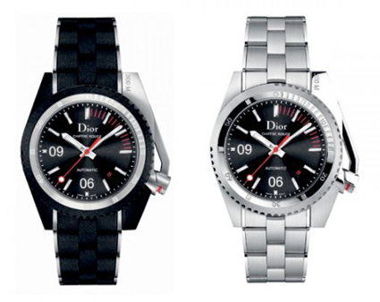
ADIDAS & OKI-NI
The adidas name dates back to 1948, deriving from the first two syllables of Adi Dassler's first and last name. A year later, Adi Dassler registered the Three Stripes as a trademark and history was made. For Spring/Summer ‘09 adidas Originals have brought oki-ni a special collection that celebrates and reflects decades of the brand's rich heritage and lifestyle credentials.
www.oki-ni.com
Posted by Exit
08/06/2009
LEVI’S & ORIGINAL FAKE 3RD ANNIVERSARY DENIM
A simple and to the point waxed cotton briefcase from Barbour that is accented in leather hints and perfect for the man looking for a carryall to rock around town. With a prominent double clasp front and zip up document pouch on the back this is one for the boys.
Posted by Exit
08/06/2009
BARBOUR BAG
A simple and to the point waxed cotton briefcase from Barbour that is accented in leather hints and perfect for the man looking for a carryall to rock around town. With a prominent double clasp front and zip up document pouch on the back this is one for the boys.
www.barbour.com
Posted by Exit
08/06/2009
LV UNDERGROUND
Louis Vuitton recently opened their new temporary /underground/ store in Tokyo. The store is completely different in terms of interior than other Vuitton spaces and takes a more raw and industrial approach. Overall a very interesting concept and new route for the French luxury goods company.
www.louisvuitton.com
Posted by Exit
01/06/2009
AWAYDAYS
Highly coveted film Awaydays is now out in cinemas and to celebrate the coming to reality of Kevin Sampson’s novel adidas have created a limited edition sneaker. Only 100 pairs will come as a box set complete with a signed and numbered copy of the book, a DVD containing exclusive footage and the sneakers, wrapped in an image of the pack with a quote from Kevin on the project.
www.adidas.com
Posted by Exit
01/06/2009
BURBERRY DAY IN NEW YORK CITY
Mayor Bloomberg has declared Thursday, May 28th, as Burberry Day in New York City. The proclamation coincides with the official lighting of the Burberry logo on the rooftop of the new Burberry Americas headquarters at 444 Madison Avenue. The new 68,000 square foot headquarters opened in April 2009. To celebrate Burberry Day, 20% of all purchases made in Burberry New York stores at 57th Street and Spring Street in SoHo on the day will be donated to The Burberry Foundation. Burberry also announced plans for two new Manhattan stores that will open at the end of October, 2009.
www.burberry.com
Posted by Exit
01/06/2009
HAYWORTH II MID
This week we present you the new colorways of the Hayworth II Mid sneaker from the Y-3 Spring/Summer 2009 collection. It comes in a wrinkled black patent colorway and an off-white colorway. Both sneakers come with a clean white sole and subtle branding on the tongue and on the back heel.
www.adidas.com
Posted by Exit
25/05/2009
CK SUMMERTIME
For summer 2009 Calvin Klein eyewear launch a distinctive limited edition collection of mens optical and sun styles, Calvin Klein Collection Classics. Each style is perfectly proportioned with modern design and refined interpretation from Calvin Klein's unforgettable launch eyewear collection.
www.calvinklein.com
Posted by Exit 25/05/2009
MARRIED TO THE MOB
Married To The MOB have collaborated with emerging artist Jessy Kennedy AKA The Night Rider. The “Heather” tee comes in either black or white and features a blond or brunette on top of the classic MOB font logo. The two t-shirts are now available from the MOB online store.
mttmnyc.com
Posted by Exit
25/05/2009
SELFRIDGES 100
Selfridges is celebrating its 100th year by collaborating with the world’s most influential designers and iconic brands to produce sought-after product in Selfridges’ iconic 109 pantone. The limited edition ranges will be available exclusively from all Selfridges’ stores from May 2009. Selfridges will also be celebrating its centenary throughout the summer with a number of events which includes the Big Yellow Festival of music, fashion and variety every weekend in May and a retrospective exhibition from 2 May - 31 August, 2009
www.selfridges.com
Posted by Exit
18/05/2009
MI-ADIDAS
Express your individuality with your very own pair of unique Adidas trainers, created with mi Originals. Take your pick from retro classics including the Adidas Gazelle, Stan Smith, Superstar and ZX700, then add your own spin - change the colour, swap the fabrics or play with the detailing, including the three stripes, outsole, tongue, toe cap, shoe laces or eyes. End result? Something that's unique to you. Check out the service at the Adidas Originals store in Earlham Street, London,
www.adidas.com
Posted by Exit
18/05/2009
PERFECTO
Jeremy Scott has linked up with Schott to give one of their classic motorcycle leather jackets a make-over. Inspired by the late Keith Haring, Jeremy Scott applied a black/white all-over pattern on the jacket. The “Perfecto” jacket is now available at colette.
www.colette.fr
Posted by Exit
18/05/2009
3-WAY DROP 2
The second group of the adidas 3Way Project has just been released and its a serious collective with designs by Goodfoot, DQM, Huf and Undefeated, utilizing the Stan Smith, Nizza Hi, Forum Mid and Samab templates.
www.adidas.com
Posted by Exit
11/05/2009
HELMETS
Italian denim brand Diesel continues to venture into bold and exciting realms. Recently we've seen their Fiat 500 collaboration and the launch of their new furniture collection. Now we have the 'TopGun' styled Diesel motorcycle helmets. The helmets come in several colorways and are now available at Diesel stores worldwide.
www.diesel.com
Posted by Exit
11/05/2009
SHAKESPEARE SKULL
Paul Smith Jeans is pleased to announce a collection of limited edition printed t-shirts, featuring the classic Shakespearian characters of Yorick, Oberon and Mercutio…Yorick, the Court Jester from Hamlet, has been transformed into a free spirited entertainer.
Yorick was the deceased court jester whose skull is exhumed by the gravedigger in Act 5, Scene 1.
www.paulsmith.co.uk
Posted by Exit
11/05/2009
7 PIECE
A key product that reflects both the ideals of reducing complexity and enhancing creative solutions in the design and production process in the SLVR collection is ‘7 Piece Shoe’. Consisting of a 6 piece upper stitched to a 1 piece outsole; whereas most sneakers are made of at least 25 individual pieces that are glued together. This sneaker is both unique its simplicity, yet comfortable and long lasting.
www.adidas.com
Posted by Exit
04/05/2009
TRIANGLES & ANGLES
Dior Homme goes back to its roots for Fall/Winter 2009 using lots of black in their accessories line. Triangles and Angles are apparent in all pieces of the collection, which consists of tote bags, duffle bags, pouches, brooches, key rings, belts and cuff links.
www.diorhomme.com
Posted by Exit
04/05/2009
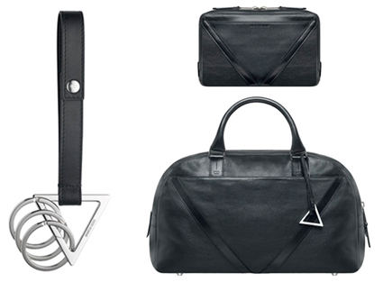
TEDDY BEAR
Prada started a big trend a few years back when they introduced their infamous robot key chains. Made out of metal and large in size, the key chains became the accessory of the moment. Prada has stuck to the formula and introduces new large size key chains and pendants each and every season. For SS09 they chose the teddy bear. It comes in a variety of colors and styles.
www.prada.com
Posted by Exit
04/05/2009
ORIGINAL FAKE
Original Fake have released a series of new graphic t-shirts from their Spring/Summer 2009 Collection. The beauty of a naked woman, combined with Kaws graphics is a winner for us. Furthermore they have released some simple polo shirts in black and white, as well as a new Chompers hoodie, featuring tonal embroideries on the upper and the cuffs.
www.kawsone.com/shop
Posted by Exit
27/04/2009
THE SUN IS SHINING
Check the new sunglass styles from the Louis Vuitton Spring/Summer 2009 Collection - the Evidence frame and the Leather Intuition frame. The Evidence frame comes close to the Millionaire model that Pharrell and Nigo had created for Vuitton a couple of seasons back. The Leather Intuition frame features an actual leather wrapping on a very sporty looking pair of sunglasses.
www.louisvuitton.com
Posted by Exit
27/04/2009
STRIPES
The brand with three stripes adds a few more stripes to their latest collection of sneaks. The “Stripes” pack includes two classic Adidas models - the Stan Smith and the Superstar . The Stan Smith comes in a grey/black/green colorway and the Superstar in white/black/blue.
www.adidas.com
Posted by Exit 27/04/2009
PURPLE LABEL CORNER
Ralph Lauren has recently launched the first Purple Label corner in Europe at Harrods in London across 1000 sq ft of floorspace. Stocking both Purple label Suiting and Purple Label Sportswear. “The Purple Label man is confident—he has always exuded elegance and the most supreme taste. For Spring 2009, he takes that elegance and combines it with a bold, colorful twist.” commented Ralph Lauren.
www.ralphlauren.com
Posted by Exit
20/04/2009
FORUM MID GRUEN & LUX
Adidas Forum Mid Gruen and Lux have now dropped in Originals Stores Worldwide. The environmental friendly produced Gruen collection brings some interesting materials and looks to the adidas footwear collection. The Forum Mid comes in a white/black/grey colorway with wooden button on the strap. The Forum Mid Lux (my favorite) has Silver metallic upper, red and blue accents colors with black suede details.
www.adidas.com
Posted by Exit
20/04/2009
PAUL SMITH & OAKLEY FROGSKIN
In an interesting collaborative project Paul Smith have teamed up with Oakley to produce the classic Frogskin sunglasses from the 80s. They come in solid pink, purple, blue and in a camo colorway with mirrored glass. The mirrored model is limited to 500 pieces worldwide and will only be available in Paul Smith boutiques.
www.paulsmith.co.uk
Posted by Exit
20/04/2009
CONSORTIUM NIZZA
Utilizing the simple, clean silhouette of the Nizza, the Stripes pack from the adidas Consortium range celebrates 60 years of the 3-Stripes and provides two fresh, contrasting options for the summer months ahead. The pack features both a hi and low version of the Nizza, a shoe that seems to be ever present in the recent plans at adidas HQ. The Nizza Hi adds to its vulcanized heritage with a shiny, patent upper in a blue colorway with an orange trim sat on top of a crisp white midsole. The Nizza Lo is a more understated affair and presents a tonal colorway of yellow on grey on a fleece material upper.
www.adidas.com
Posted by Exit
13/04/2009
YOU CAN FIND INSPIRATION IN EVERYTHING
Good news for Paul Smith fans - he’s decided to re-release his seminal book ‘You can find inspiration in everything’. The book was previously only available at £200 so it’s great to see it become more accessible and at a very reasonable £30. As another added bonus, the first 100 buyers will get a signed copy by Paul Smith himself. Get it now from Paul Smith online.
www.paulsmith.co.uk
Posted by Exit
13/04/2009
CAMPER TOGETHER WITH BERNHARD WILLHELM
The new To & Ether collection from Camper, points directly at the avant-garde of alternative fashion. The unique signature of Bernhard Willhelm, the outstanding disciple of the prestigious school in Antwerp and the same school that in the 80´s formed talents like Dries Van Noten, Ann Demeulemeester, Dirk Bikkembergs, Dirk Van Saene and Martin Margiela (the generation known as the “Antwerp six”).
Willhelm has designed shoe collections for both men and women. Moccasins and sandals fabricated with handcrafted techniques and recycled materials, hand sewn, coloured felts with rubber soles. The innovation is also illustrated simply, with actual traits of common sense. “I wanted to apply ethical and ecological criteria in the making of this shoe collection. I would like people to keep these criteria in mind when they are choosing a shoe”. Willhelm’s designs are added to those that Jaime Hayon, Alfredo Häberli and Maria Blaisse have developed “together” within Camper’s new creative adventure.
www.camper.com
Posted by Exit
13/04/2009
TOPSHOP NYC
New York City has been waiting in anticipation for the launch of TOPSHOP/TOPMAN’s debut American outlet for quite some time,
now the wait is over. US-based fans of the brand will now be able to browse the store’s high-fashion high-street collections in their very own flagship store, making transatlantic pilgrimages to the Oxford Circus destination a tale of urban folklore.
Alongside the mainline collections, american customers will be able to choose from all the key collaborations currently available in the UK. Continuing TOPSHOP’s ongoing support of innovative British designers, new capsule collections by Preen, Jonathan Saunders and Richard Nicoll will also be available for the store’s New York-based customers, together with TOPSHOP Unique, the store’s now famous design-led collection which currently shows on schedule at London Fashion Week.
www.topshop.com
Posted by Exit
06/04/2009
3-WAY
Uniting the world’s finest sneaker stores, the Consortium 3-WAY project from adidas celebrates the brands 60 year anniversary with a brand-new approach to the collaborative process. By bringing together a handpicked crop of 12 global retail figureheads, all given full freedom to do whatever they want with 5 iconic 3-Striped silhouettes as 3 unique groups, adidas have entrusted their valued Consortium partners to share their unique vision collectively, using a ‘Work Amongst Yourselves’ brief. Representing for Toronto, New York, San Francisco, Los Angeles, Amsterdam, London, Stockholm, Shanghai and Tokyo, this collection’s scope is truly global. Patta, Alife, Limited Editions and Sneakers’n’stuff make up the first group, Goodfoot, Undefeated, DQM and Huf make up the second, with the trio completed by the formation of ACU, D-Mop, Crooked Tongues and VA.
The first wave of 3-Way Consortium releases from adidas Originals unites three of Europe’s leading sneaker boutiques - Patta, Sneakersnstuff and LimitEditions, representing Amsterdam, Stockholm and Barcelona respectively, with New York’s A.R.C. Opting to rework a shoe each in their own unique style, all four join forces for a fifth shoe that reflects the best of all involved. An eclectic collection, somehow it proves totally cohesive as a whole, reflecting the individual visions of all concerned.
www.adidas.com
Posted by Exit
06/04/2009
CHANEL PERSPEX BRIEFCASE
Chanel is one of those luxury brands, that has always stuck to their classic aesthetics over the years, while also showing some great innovation. Karl Lagerfeld continually impresses Exit with his creative vision and drive to surprise his loyal followers. During the most recent Chanel show, he presented the new Perspex Briefcase. The execution of this suitcase is brilliant in terms of aesthetic and concept.
www.chanel.com
Posted by Exit
06/04/2009
ADIDAS CONSORTIUM FAT STRIPE
Here we present you the Consortium “Fat Stripe”. The series consists of a Super Skate and a Campus Vin, both coming in black and white uppers and feature extra fat logo stripes. They are now available at colette.
www.adidas.com
Posted by Exit
30/03/2009
FUCKING AWESOME GANGSTA SITUATIONS
Jason Dill rocks and Fucking Awesome is back and has hit the shelves for Spring 2009. The new collection is mostly made up of graphics from found items, but they also bring back some strong classics, such as the Lagerfeld t-shirt and the Fucking Awesome logo t-shirts and hoodies.
www.fuckingawesome.net
Posted by Exit
30/03/2009
BEACH LUGGAGE
Now that the sun is shining we can all start dreaming of weekends at the beach and what better way to carry your bikini and swimming trunks than in the Y-3 Spring/Summer 2009 Beach Luggage Collection. The collection has already attracted a lot of attention, because usually we only see black pieces from Y-3. We particularly like the striped design of the collection and the mix of canvas and leather, making it a nicely balanced casual collection for the warmer days ahead. From backpacks, duffel bags to totes, the line offers a great selection.
www.adidas.com
Posted by Exit
30/03/2009
JIVE BOMBER
Most of the adidas Originals by Originals product has now released and after crazy items from Jeremy Scott, as well as very simple and technical items from Kazuki. Alyasha brings a totally different look to adidas. and in our view one of the most interesting shoes from the entire initiative is the Jive Bomber. Using parts of other adidas classics, the Jive Bomber could not come at a better time.
Now available at
Size
www.adidas.com
Posted by Exit
23/03/2009
COMME DES GARCONS - BLACK & BEARBRICK
Here are the latest items from the Comme des Garcons BLACK and Medicom collaboration, including a large Bearbrick head paper weight. Furthermore Comme have created a small collection of jewelry, using silver, gold and bronze metal 50% Bearbricks on pendants, wallet chains, phone straps, bracelet and keychains.
www.doverstreetmarket.com
Posted by Exit
23/03/2009
SOCKS
Now that the weather has warmed up and spring has arrived and its time to get out your shorts, you should also be thinking about upgrading your sock game as well. Undefeated has you covered on that front and has released three new sock styles - the ped, ankle and crew socks all come in three colorways and feature a small gold Undefeated logo embroidery.
www.undftd.com
Posted by Exit
23/03/2009
LOU REED GETS PLASTERED AT HIDEOUT FOR SUPREME
I love Supreme and its goes with out saying that each new season I eagerly await the tee collaborations and somehow Supreme always manages to surprise me. In recent years we've seen downtown New York plastered in Kermit posters and Mike Tyson, this season Lou Reed is part of the Supreme Spring/Summer 2009 campaign. In a fantastic collaboration with London's Hideout, the entire store frontage has been plastered with Supreme/Lou Reed posters and looks genius.
www.hideoutstore.com
Posted by Exit
16/03/2009
BEACH TOWEL
From the looks of the image and “message” you could assume that this is a piece of new art - maybe stencil white on black canvas. The truth is that it is a simple but beautiful beach towel from Raf Simons with a very open ended message: “there is a crack in everything that’s how the light gets in”. It’s part of the Raf Simon’s Spring/Summer 2009 Accessories collection and now that spring has officially arrived in London its time to start thinking about all things summery.
www.colette.fr.
Posted by Exit
16/03/2009
"BLOW"
Talking of the sunshine...Every season there is one stand-out model of crazy sunglasses that make the rounds. Jeremy Scott is usually good for a surprise on that end, but was reasonably subtle this season. Instead its left to Dior Homme to present the “Blow” sunglasses.
They come in 5 colorways, with each colorway ultra limited to only 500 pieces worldwide.
www.diorhomme.com
Posted by Exit
16/03/2009
SLVR
We've been hyping up the new clean minimal SLVR collection from adidas for a while now and today its finally ready for the drop.
The adidas SLVR Label’s key message is ‘Simply Perfect’.
It reflects the new label’s connection to adidas as well as the values of all SLVR products. SLVR shows consistency, is contemporary, inclusive and honest, and will always strive to exceed expectations using a unique approach in craftsmanship.
The SLVR range shows a timeless and considered design; one that conveys a minimalist character, yet is fresh and progressive. adidas SLVR Label will be available in stand alone stores in Paris, New York, Miami and Los Angeles. In Paris and Beijing, SLVR will also be represented at the new adidas Brand Centres. In Moscow and Berlin SLVR will be on hand in their respective Sport Performance Centre stores.
www.adidas.com
Posted by Exit
09/03/2009
SUPREME SPACE AT DSM
After Bape, Billionaire Boys Club and Silly Thing, Supreme is now also occupying a space inside London’s Dover Street Market, making DSM the destination shop for streetwear.
The space looks just like the Supreme stores in New York and Los Angeles - simple and with a focus on the product. One more reason to visit London's Dover Street.
www.doverstreetmarket.com
Posted by Exit
09/03/2009
BARX DECK SHOES
These Polo Ralph Lauren Barx Deck shoes feature a two tone nautical flag inspired detail on the back heel, brass grommets on the eyelets, and a double-needle-stitch detailing at the upper. Another set of fine deck shoes you can option for the Spring.
www.ralphlauren.co.uk
Posted by Exit
09/03/2009
ERIN WASSON & RVCA
Model-muse Erin Wasson brings her trademark tough-chic sensibility to her debut line for RVCA, which features frayed denim and slouchy tops for the cool-girl-on-a-budget. Erin will be at Colette on Saturday, March 7th from 5.30 to 6.30pm to present her first line created with RVCA. The collection embodies the supermodel’s "low-key" and edgy style, joining two very dynamic aesthetics: Erin’s carefree persona and charm and RVCA’s roots within action sport.
www.colette.fr
Posted by Exit
02/03/2009
ORIGINALS BY ORIGINALS - ALAYASHA
Now available the latest Originals by Originals collection from adidas by Alyasha Owerka-Moore of Fiberops, inspired by Americana and vintage culture. “Alyasha celebrates the special twist on Americana with an Originals flavor that comes across classic looks. Heavy cotton and genuine materials play a big role together with vintage details and remarkable graphics.
Footwear highlight Jivebomber represents a combination of an Oxford-style silhouette and sneaker outsole. “I hope that my contribution does justice to the Originals by Originals project as a whole. The inspiration came from classic 1940’s and 50’s styles, with what I hope will be recognized as a somewhat contemporary twist. Easy to wear for the discerning cad.” In the end, it is the sum of the various designer contributions that defines Originals by Originals and makes it exceptional.” The collection consists of jackets, tops, as well as some very interesting footwear.
www.adidas.com
Posted by Exit
02/03/2009
GOLD BY KRINK
After years of development and endless requests. KRINK GOLD has arrived. Featuring the same high-quality standards found in all KRINK products the ink is handmade in the USA. Commemorating this release, alife has produced a limited edition GOLD by Krink tee shirt. Now available at Alife Flagship locations in NYC, Hollywood, and Vancouver, GOLD by KRINK.
alifenyc.com
Posted by Exit
02/03/2009
ORIGINALS BY ORIGINALS - KAZUKI
Now available the capsule collection from Kazuki of Fragment Design as part of the Originals by Originals releases for 2009. Completely different from both the Alyasha and the Jeremy Scott collections, the Japanese designer concentrated on adding technical features and materials to the apparel and the footwear, which overall keeps a very subtle and understated look. Exactly what we would have expected from this Jedi Master. Kazuki successfully brings highly technical and modern influences to a stylized, very wearable streetwear collection. The styles incorporate elements such as waterproof zippers, bonding and taping seamlessly into the design.
Footwear highlights call out the KBall Basketball silhouettes that come in exclusive materials. “The styling of my collection suits me and hopefully the audience that my designs appeal to. I would really like to thank all my friends for their support and inspiration but most importantly I would like to thank adidas for having the vision to give me, a freelance designer, a chance to work on a project like this,” Kazuki comments on the new partnership.”
www.adidas.com
Posted by Exit
23/02/2009
ALIFE STATE OF MIND
On Monday July 14th 2008, ALIFE hosted a private music session for the record release of QB's own, NAS. In conjunction with the session, ALIFE collaborated with CASIO to produce a custom G-SHOCK DW-5600E. Design features include custom detailing on the face; The phrase "ALIFE STATE OF MIND" etched on the wristband; The ALIFE SESSIONS logo on the back casing and custom packaging. This second ALIFE CASIO G-SHOCK collaboration is limited to 100 pieces, and will be available exclusively at ALIFE NYC, ALIFE BC and ALIFE LA Flagships and on the obligatory ebay for those that can't get to the store and be prepared to queue for 24hrs.
alifenyc.com
Posted by Exit
23/02/2009
RESONATE & DICKIES
There is no doubting Dickies place amongst the elite of work wear, and as the originators continue to evolve so do the collaborations. This latest project with Japanese brand Resonate is an impressive project creating these “Lowrize” pants. Coming in grey and a black pinstripe colorway, the pants follow this years trend of being shorter. They have a black/white check pattern, as well as several logo tags decorating the pants.
www.store.honeyee.com
Posted by Exit 23/02/2009
YSL’S USB HEART
YSL’s latest merger of fashion, technology, and text see's Yves Saint Laurent’s S/S 2009 Manifesto, photographed by Inez Van Lamsweerde and Vinoodh Matadin and featuring Claudia Schiffer distributed on charming heart shaped USB keys thoughout the streets of Paris, New York, London, Milan, Tokyo and Hong Kong.
Over half a million copies of the twenty page Manifesto, accompanied by behind the scenes footage, will be disseminated this way, along with a cotton tote bag designed by Pilati to the first 2,000 passers by in each city.
www.ysl.com
Posted by Exit
16/02/2009
ORIGINALS BY ORIGINALS - JEREMY SCOTT
Adidas have begun releasing the first items from their much anticipated Originals by Originals collection, including collaborations with Kazuki, Jeremy Scott and Alyasha Owerka-Moore. The ultimate statement of Original intent, this baller ups the ante with a supersized tongue and trefoil that’s impossible to ignore! Building on '80s style perfectly, this new adidas & Jeremy Scott collaboration is finished with a signature outsole and custom lace jewels. Like what you see? Then check the rest of the collection. Now available.
www.adidas.com
Posted by Exit
16/02/2009
RAY-BAN WAYFARER “COLORIZE” KIT
Seemingly inspired by adidas, this spring see's Ray-Ban release the “Colorize” kit, which much like adidas Adicolor, bundles a pair of all white Ray-Ban Wayfarers with some markers that can be used to colorize the sunglasses.
www.rayban.com
Posted by Exit
16/02/2009
SL 72 DECADE
Here is a preview from the adidas Spring collection, 2009 see's adidas celebrating their 60th anniversary. Exit Spring/Summer will be wishing adidas a very happy birthday. The iconic SL 72 is being released in a vintage version with nylon/suede uppers in a series of colorways.
Now on sale
www.adidas.com
Posted by Exit
09/02/2009
ADIDAS & VESPA
Here Exit gives you a first look at the forthcoming adidas collaboration collection with Italian scooter maker Vespa. Inspired by the 50s and 60s, adidas presents a sneaker and apparel collection. The stand-out piece in the collection will be the Vespa Gran Lusso sneaker, heavily influenced by the scooter brand and its history.
www.adidas.com
Posted by Exit
09/02/2009
MULBERRY ELIOT HOLDALL
Recently we've seen a growing amount of faux leather holdalls making their way onto the high-end market. It’s not a movement we endorse, as faux leather looks and feels terrible in comparison to the real thing. These Mulberry holdalls use heavy grain leather which beautifully ages with wear, leaving a bag that looks better the more you use it. It’s also the perfect size for airport hand luggage restrictions and thus makes a chic and stylish travel bag.
www.mulberry.com
Posted by Exit
09/02/2009
NEW ADIDAS ORIGINALS WEBSITE LAUNCHED
Adidas have just launched their new Originals website. In line with their 60th anniversary celebration, the website now features a fascinating interactive timeline of the brand. You also get to have a first look at new product and the various adidas lookbooks of the season.
www.adidas.com
Posted by Exit
02/02/2009
PAUL SMITH MILLER BROGUE
We're very big fans of Paul Smith at Exit and we love these trademark Miller brogues that have been available in various hues for several seasons now and Smith’s SS09 collection looks to carry on the tradition. Miller is Paul Smith Mainline leather gentlemen’s brogue with sky blue dip dyed washed uppers. They are crafted on a classic Oxford brogue pattern, on a slim fashion last. The soles are trimmed right to the edge of the upper to give a more casual look.
Part of the Dip-Dye range, the uppers of these shoes have been immersed in dyes and tumbled in large wooden drums to dye the upper leather, the lining and the stitching for intense colour. These brogues feature fabric window inserts on the inside lining and painted check insoles. The soles themselves are made with Blake Rapid construction and the bases have been hand painted and hammered.
www.paulsmith.co.uk
Posted by Exit
02/02/2009
RALPH LAUREN BLACK SATCHEL BRIEFCASE
I love this new look from Ralph Lauren for the gentleman who prefers the neutral shades of leather over the classic brown and tans. A refined gentlemen's briefcase, crafted for durability and style in luxurious calfskin with gleaming silver accoutrements.
It is a very sturdy expandable construction with three interior compartments and a middle compartment that is ideal for laptop storage making it perfect for my daily commute into the Exit office.
www.ralphlauren.com
Posted by Exit
02/02/2009
NOWHERE AT DOVER STREET MARKET
15 years ago friends and collaborators Nigo (A Bathing Ape) and Jun Takahashi (Undercover) opened a tiny shop in Harajuku Tokyo called NOWHERE. It was Undercover's first ever dedicated retail space. The space also had Nigo's picks of US vintage wear. During that first year Nigo also launched A Bathing Ape in NOWHERE.
For Spring 2009 Nowhere have created a shop-in-shop at Dover Street Market. The London store, operated by Comme des Garcons, recreated the original store front of the Nowhere store.
NOWHERE is now open for a limited period of time in the Basement of DSM selling A Bathing Ape products and exclusive products made by Nigo and Jun together under the NOWHERE name.
doverstreetmarket.com
Posted by Exit
26/01/2009
CHANEL SNOWBOARD
The unstoppable Chanel drops into the world of snow, releasing a snowboard as part of this years winter sport collection. The Chanel Snowboard has a high gloss piano black lacquer resin finish with a discrete Chanel monogram by the front binding. The snowboard is made of fiberglass and wood which gives it a degree of flexibility whilst maintaining rigidity at the same time.
Exit's Art Director recently rocked this look out in Whistler over Christmas and performed his first double flip 1080 degree back hop bunny jump up with a degree of fashion assurance that only Chanel could have given him.
www.chanel.com
Posted by Exit
26/01/2009
ADIDAS SKATEBOARDING TIMES BY TWO
Mr Mark Gonzales has again created a sneaker for adidas Skateboarding. For Spring the skater/artist has worked on the adidas Campus. The sneaker features Mark's unique designs on the white leather upper and Mark’s characters appear across the sneaker.
BJ Betts, the renowned tattooist and typographer, has joined forces with adidas Skateboarding to work on an exclusive capsule collection. The collection consists of two sneakers, the Bucktown ST and the Ciero Mid, as well as three dope t-shirts.
The Mark Gonzales and BJ Betts collection are on sale now
www.adidas.com
www.colette
Posted by Exit
26/01/2009
ATELIER - MAYER. THE FUTURE OF VINTAGE FASHION
ATELIER- MAYER.COM is the first global website specialising in 20th and early 21st century vintage fashion. Inspired by the late Klaudia Mayer, an Austrian haute couture tailor, and originally founded in 1927, the atelier has been updated to an online boutique for the vintage fashion lover, collector, student, designer and artist in all of us. So whether you are looking for a Balenciaga, Courrèges, Givenchy or a Vionnet siren gown for the Golden Globes ATELIER- MAYER.COM can deliver and we love them.
www.atelier-mayer.com
Posted by Exit
19/01/2009
LOUIS VUITTON & STEPHEN SPROUSE SKATEBOARD
The worldwide launch for the Louis Vuitton / Stephen Sprouse collaboration is slated for February 2nd but for the recent New York launch, Louis Vuitton have created several limited edition pieces. Exclusively available at the New York, SoHo location this Stephen Sprouse graffiti skateboard replete with a hard case monogram skateboard trunk retails at a respectable $8,250 each and we love it.
www.welovesprouse.com
Posted by Exit
19/01/2009
ADIDAS FORUM MID
Going back to basics with classic silhouettes gives this trio of new adidas Forum Mid’s an old school revivalist feel. The color blocking is simple and very effective as always with all things adi - royal/white, black/white and red/white.
www.adidas.com
Posted by Exit
19/01/2009
TOM FORD MAN SPRING/SUMMER 2009
Exit love's Tom Ford and he's my personal favorite Menswear designer. Take this collection of suits which are part of the Tom Ford Man Spring/Summer 2009 Collection. We’re seeing a return to color as muted tones take a back seat.
www.tomford.com
Posted by Exit
12/01/2009
ALBER ELBAZ PAYS HOMAGE TO LANVIN WITH LIMITED EDITION PORCELAIN DOLLS
Inspired by the revered Jeanne Lanvin, the founder of the eponymous fashion house, current creative director, Alber Elbaz, has designed a series of 7 stunning Lanvin china dolls adorned in a range of exquisitely beautiful creations that mimic the spring summer 09 collection.
This limited edition of 800 figurines is hand painted by Franz, the veritable Taiwanese ceramics house.
Available at Browns
www.brownsfashion.com
Posted by Exit
12/01/2009
ADIDAS ORIGINALS GOES SANTASTIC
Adidas Originals has joined forces with Japanese brand Santastic for a special winter mini collaboration. The collection features a mix of Santastic’s character design and branding alongside classic adidas branding.
www.adidas.com
Posted by Exit
12/01/2009
LOUIS VUITTON X STEPHEN SPROUSE COLLECTION
After the successful collaboration of Louis Vuitton and artist Stephen Sprouse in 2001, the two team up for the second time, utilizing the very same graffiti print. This time around they worked on bags, sneakers, shoes, sunglasses as well as some clothing and many more accessories.
Just in time for the “Rock On Mars” retrospective that will be taking place at Deitch Projects from January 8th, and the release of “The Stephen Sprouse Book”, Louis Vuitton will be coming out with the commemorative collection this month.
Along with the release of the product, Louis Vuitton have launched welovesprouse.com, a website dedicated to the artist, showcasing interviews with people that knew Sprouse.
www.welovesprouse.com
Posted by Exit
05/01/2009
COCO CHANEL 5 EURO COIN BY KARL LAGERFELD
For the occasion of the 125th anniversary of Coco Chanel, Karl Lagerfeld has designed a special 5 Euro coin. The coin features both a portrait of Coco Chanel and lots of other trademark graphics of the brand. The 5 Euro coin was chosen, as it is a good match with the Chanel No. 5 fragrance.
The coin comes in a gold version, limited to 99 pieces, with each piece going for 5900 Euros. The silver coin goes for 45 Euro and comes in a run of 11900.
www.chanel.com
Posted by Exit
05/01/2009
COCA-COLA LIGHT X NATHALIE RYKIEL
Here is a look at a new limited edition bottle of Coca-Cola Light, designed by French designer Nathalie Rykiel. Nathalie is the daughter of famous fashion designer Sonia Rykiel.
The Coca-Cola Light x Nathalie Rykiel bottles will go on sale from January 2009 Worldwide
www.coca-cola.com
Posted by Exit
05/01/2009